RB-CN01-0001 本教材把生命科学的发展分为哪三个阶段？DNA 双螺旋结构与中心法则怎样推动研究层次的改变？完整答案 A1 19世纪及更早时期以形态描述为主；20世纪上半叶进入以主动实验探索为主的实验生物学；20世纪50年代以来，DNA（deoxyribonucleic acid，脱氧核糖核酸）双螺旋结构的发现与中心法则（central dogma）的确立，使生命科学进入精细定性、定量的现代生物学阶段。
必答点 R1 三个时期、各自方法特征；双螺旋结构与中心法则作为现代阶段的重要基础。
依据与来源 教材直接支持。
卡片ID：RB-CN01-0001
RB-CN01-0002 阅读细胞生物学史时，除人物与贡献外，还应追踪哪些内容？这样做如何帮助理解这门学科？完整答案 A1 应追踪每个时期的核心科学问题、代表研究者怎样分析和解决问题，以及由此形成的基本概念和理论。研究历史可帮助理解认知规律、现有理论的来路和仍待解决的问题，并借鉴解决问题的途径，而非仅记姓名和年份。
必答点 R1 核心问题→研究与解决方式→概念和理论；认知规律、未解问题及研究方法的意义。
依据与来源 教材直接支持。
卡片ID：RB-CN01-0002
RB-CN01-0003 现代生物学的“三大基石”分别是什么，何时由谁确立？为何教材称细胞学说又是另两者的基石？完整答案 A1 细胞学说（cell theory）由施莱登（M. J. Schleiden）和施万（T. Schwann）于1838—1839年确立；进化论（theory of evolution）由达尔文（C. R. Darwin）于1859年确立；孟德尔遗传学由孟德尔（G. J. Mendel）于1866年确立。
A2 细胞学说为认识有机体的结构、生命活动与连续性提供基本单位，使遗传和演化问题能够在共同的细胞基础上研究。20世纪50年代分子生物学的建立又改变了经典生物学，并促进细胞生物学与生物技术的发展。
必答点 R1 三种理论、对应人物和教材所列年份全部配对正确。
R2 细胞基本单位与遗传、演化的联系；分子生物学对经典分支与新学科的推动。
依据与来源 教材直接支持。
卡片ID：RB-CN01-0003
RB-CN01-0004 细胞学与细胞生物学研究什么？它们的连续性与方法上的区别是什么？完整答案 A1 细胞学（cytology）是研究细胞结构和功能的生物学分支。细胞生物学（cell biology）保留这一对象，应用现代物理、化学技术及分子生物学的概念与方法，从细胞作为生命活动基本单位出发，研究细胞基本生命活动规律。
A2 细胞生物学贯通显微、亚显微与分子水平，研究结构与功能，以及增殖、分化、衰老、死亡、信号转导、基因表达调控、起源与进化等重大过程及分子机制。
必答点 R1 两者对象；现代技术、分子概念与细胞基本单位的研究出发点。
R2 三个研究层次，以及题干所要求的主要生命过程范围。
依据与来源 教材直接支持。
卡片ID：RB-CN01-0004
RB-CN01-0005 显微镜如何使细胞发现成为可能？胡克的观察对象、倍率、发现内容及术语来源是什么？完整答案 A1 肉眼难以观察细胞。教材记载欧洲13世纪已有眼镜，16世纪末研制第一台显微镜。胡克（R. Hooke）因关注软木密封性，用自制40—140倍显微镜观察软木即栎树皮薄片，看见蜂巢状小室；实际上是死亡组织留下的细胞壁。
A2 胡克借拉丁文表示“小室”的词描述结构，后沿用英文 cell，中文译“细胞”；首次描述发表于1665年的《显微图谱》（Micrographia），因此通常把1665年记为细胞发现年份。
必答点 R1 仪器发展时间、观察动机、对象、倍率和实际看到的结构。
R2 小室命名与 cell；1665年、著作及为何如此纪年。
依据与来源 教材直接支持。
卡片ID：RB-CN01-0005
RB-CN01-0006 列文虎克与布朗的观察分别推进了哪些认识？为何真正活细胞的发现归于列文虎克？完整答案 A1 列文虎克（A. van Leeuwenhoek）自制高质量显微镜，持续约50年观察活的动植物细胞、原生动物及细菌，使观察从死软木的小室推进到活细胞。教材记载他于1674年观察鱼的红细胞并描述核；他的早期身份是布店学徒。
A2 1833年布朗（R. Brown）发现植物细胞核；其后还观察到动物细胞核仁。长期显微资料积累，使人们能够从个别观察归纳出细胞与有机体关系的普遍理论。
必答点 R1 活体对象、长期观察与胡克对象的区别；教材所列1674年红细胞核观察及身份。
R2 1833年植物核与后来动物核仁；积累资料到科学归纳的关系。
依据与来源 教材直接支持。
卡片ID：RB-CN01-0006
RB-CN01-0007 施莱登和施万如何建立细胞学说？其德国思想背景、代表著作及核心结论是什么？完整答案 A1 19世纪德国自然科学与自然哲学兴盛，研究者对大量显微观察进行思辨、归纳，寻找纷繁现象背后的共同本质。施莱登于1838年发表《植物发生论》，指出细胞是植物的基本单位；施万于1839年发表《关于动植物的结构和生长的一致性的显微研究》，把结论推广到动植物。
A2 核心主张为一切动植物由细胞组成，细胞是生物体的基本结构单位。图中施莱登生卒年1804—1881，施万1810—1882。早期学说并不完善，关于新细胞在老细胞核中产生、靠细胞崩解繁殖的解释随后被修正。
必答点 R1 观察积累和归纳背景；两位研究者各自年份、著作与对象。
R2 动植物细胞构成及基本单位；两位生卒年；早期繁殖解释属于已被修正的历史观点。
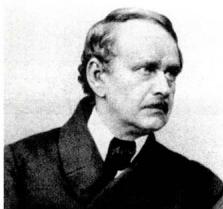
施莱登（1804—1881）原书肖像，附于其学说贡献。 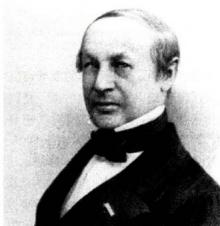
施万（1810—1882）原书肖像，附于其学说贡献。 依据与来源 教材直接支持。
卡片ID：RB-CN01-0007
RB-CN01-0008 魏尔肖的“细胞来自细胞”补充了什么？细胞病理学观点与生命连续性如何相连？完整答案 A1 魏尔肖（R. Virchow）于1858年强调“细胞只能来自细胞”，否定以崩解等方式凭空产生新细胞的解释，明确现存细胞生命的连续性和相对独立性；有人因此将1858年视为细胞学说最终完善年份。
A2 他还认为有机体的病理表现基于细胞损伤，使疾病研究有了细胞层次的基础。“现存细胞来自已有细胞”讲的是细胞延续，不能据此直接推出最初细胞起源机制。
必答点 R1 1858年及细胞来自已有细胞；生命连续性与学说完善。
R2 病理与细胞损伤关系；已有细胞延续与第一细胞起源的不同问题。
理解与联系 最后的起源区别是对命题范围的说明，不据此增加教材未给出的第一细胞起源机制。
依据与来源 教材直接支持。
卡片ID：RB-CN01-0008
RB-CN01-0009 细胞学说怎样被原生动物和胚胎学研究扩充？它与进化论分别解释什么？完整答案 A1 Siebold证明原生动物也是细胞构成且单个细胞能够独立完成生命活动；Kölliker的胚胎学研究说明个体发育是细胞持续繁殖和分化的过程。这把细胞学说扩展到单细胞生物及个体发育。
A2 19世纪末细胞学说得到普遍承认并奠定细胞学基础。细胞学说解释生命统一性的细胞基础，进化论解释多样性的形成；恩格斯把细胞学说、能量守恒与达尔文进化论并列为19世纪自然科学三大发现，强调其对比较解剖、生理和胚胎学的基础作用。
必答点 R1 原生动物的单细胞独立性；发育中增殖和分化的连续性及代表研究者。
R2 统一性与多样性的区分；普遍承认时代；三大发现及基础学科意义。
依据与来源 教材直接支持。
卡片ID：RB-CN01-0009
RB-CN01-0010 经典细胞学与实验细胞学时期怎样划分？研究目的与方法发生了什么变化？完整答案 A1 教材将19世纪最后25年、各种细胞器及分裂活动相继被发现的阶段称为经典细胞学时期，主要广泛观察和描述。20世纪以后进入实验细胞学时期，研究从好奇或消遣性观察转为主动实验，以处理、分析和研究模式生物探查细胞问题，并推动与其他学科结合。
必答点 R1 两个时期及方法变化；从描述到主动实验和交叉研究。
依据与来源 教材直接支持。
卡片ID：RB-CN01-0010
RB-CN01-0011 原生质与原生质体概念怎样深化了细胞认识？请按教材列出关键提出者和时间。完整答案 A1 1840年J. E. Purkinje、1846年H. von Mohl将动植物细胞内均匀、有弹性的胶状物质称原生质（protoplasm）；1861年M. Schultze提出原生质理论，认为有机体基本单位是一小团在不同有机体中相似的原生质。
A2 1880年J. von Hanstein提出原生质体（protoplast），强调具有生命活性的一团原生质，比“小室”更能表达细胞本质；cell已广泛通行而继续使用。概念深化推动对有生命活性的物质和结构的研究。
必答点 R1 原生质的物质描述；1840、1846、1861年与人物对应及统一性。
R2 1880年Hanstein；由小室到活性物质、术语沿用及研究意义。
依据与来源 教材直接支持。
卡片ID：RB-CN01-0011
RB-CN01-0012 经典时期如何发现有丝分裂和减数分裂？每种分裂的关键认识是什么？完整答案 A1 Flemming在动物、Strasburger在植物中发现核分裂；Flemming于1880年称之为有丝分裂（mitosis），确认核内丝状染色体形成并平均分配至两个子细胞是其实质。
A2 van Beneden于1883年在动物、Strasburger于1886年在植物发现减数分裂（meiosis），使细胞分裂基本类型得到认识；后续生殖细胞染色体数研究把分裂与遗传联系起来。
必答点 R1 动物与植物研究者；1880年命名；染色体形成与分配。
R2 减数分裂的动物／植物研究者与1883、1886年。
依据与来源 教材直接支持。
卡片ID：RB-CN01-0012
RB-CN01-0013 哪些技术促进了经典细胞器的发现？教材列出的中心体、线粒体和高尔基体发现者与年份是什么？完整答案 A1 显微镜分辨力提高，石蜡切片和多种染色方法建立，使内部结构得以区分。教材列出1883年van Beneden和T. Boveri发现中心体（centrosome），1894年R. Altmann发现线粒体（mitochondrion），1898年C. Golgi发现高尔基体（Golgi apparatus）；这些发现丰富结构认识并引出功能探索。
必答点 R1 三类技术；三种结构与人物、年份配对；发现推动功能问题。
依据与来源 教材直接支持。
卡片ID：RB-CN01-0013
RB-CN01-0014 Hertwig怎样促进细胞学成为独立分支并开创实验细胞学？完整答案 A1 1892年O. Hertwig在《细胞和组织》中提出以细胞的特性、结构与机能为基础归纳综合生物现象，使细胞学形成独立分支；他以海胆和蛔虫卵发育为对象实验研究核质关系，推动了实验细胞学。随后模式生物、组织和细胞体外培养等手段扩展出细胞遗传学、生理学和化学等领域。
必答点 R1 1892年著作及细胞基础；海胆与蛔虫的核质实验；模式生物和培养推动分支。
依据与来源 教材直接支持。
卡片ID：RB-CN01-0014
RB-CN01-0015 哪些细胞学观察把受精、减数分裂与遗传的染色体假说联系起来？请按教材线索说明。完整答案 A1 1876年Hertwig发现动物受精；1883年van Beneden发现蛔虫卵和精子染色体仅为体细胞一半；1888年Strasburger等在植物中发现受精并证明同样的减半关系。1900年孟德尔遗传法则被重新提出，使细胞行为与遗传规律有了结合基础。
A2 1905年E. B. Wilson发现性别与染色体相关，A. Weismann推测遗传单位有序排列在染色体上；Boveri和Sutton分别提出遗传的染色体假说，将染色体行为与孟德尔遗传因子联系起来。
A3 1910年Morgan用果蝇开展实验遗传学，教材概括其结果为基因是决定性状的基本单位并沿染色体直线排列，奠定细胞学与遗传学结合的细胞遗传学基础。
必答点 R1 动物受精、两类生殖细胞减半与重新认识孟德尔法则的年份和关系。
R2 性别证据、排列推测、Boveri／Sutton假说与遗传因子的对应。
R3 果蝇、1910年、基因性状及沿染色体排列的联系。
依据与来源 教材直接支持。
卡片ID：RB-CN01-0015
RB-CN01-0016 细胞遗传学的研究对象和核心是什么？即使名称较少使用，哪个问题仍是热点？完整答案 A1 细胞遗传学（cytogenetics）从细胞学，特别是染色体结构与功能及染色体和其他细胞器关系研究遗传现象，解释遗传和变异机制；核心为染色体—基因学说。随着概念和方法变化，这个分支名使用减少，但染色体结构与基因表达控制的关系仍是重要问题。
必答点 R1 研究对象、遗传变异、染色体—基因核心以及持续研究的问题。
依据与来源 教材直接支持。
卡片ID：RB-CN01-0016
RB-CN01-0017 细胞生理学早期研究哪些功能？组织培养与高速离心分别解决了什么研究障碍？完整答案 A1 19世纪末开始研究变形运动、胞质流动、纤毛鞭毛运动和肌肉收缩，随后延伸至质膜及通透性、应激性和神经传导。研究内容包括环境反应、生长繁殖、营养摄取、兴奋收缩分泌、主动运输、能量传递和生物电。
A2 1909年Harrison和Carrel建立组织培养，使细胞生理活动可在体外研究；1943年Claude用高速离心分离核和细胞器，研究其体外生理活性、化学组成与酶定位。现代跨膜运输和信号转导等领域继续发展这些问题。
必答点 R1 运动、膜通透和应激；教材列举的功能范围。
R2 培养与分离各自解决的问题、代表人物和年份；功能、组成和酶定位；现代延续。
依据与来源 教材直接支持。
卡片ID：RB-CN01-0017
RB-CN01-0018 细胞化学如何把化学成分研究与细胞内定位、定量和动态变化联系起来？列出教材中的代表方法及进展。完整答案 A1 早期生化研究脱离细胞形态。1924年Feulgen等建立DNA（deoxyribonucleic acid，脱氧核糖核酸）特异定性检测，即福尔根反应（Feulgen reaction）；1940年Brachet用甲基绿—派洛宁染色检测DNA与RNA（ribonucleic acid，核糖核酸），Caspersson用紫外显微分光光度法测量细胞DNA含量。
A2 细胞组分分离、放射自显影和超微量分析推动核酸、蛋白质代谢研究；后续显微分光、流式细胞术、原位杂交、免疫荧光和激光扫描共聚焦等提高定性、定位、定量及动态研究的精确性和专一性。上述分支持续演变，仍构成现代细胞生物学。
必答点 R1 从脱离形态到原位研究；三类方法的检测对象、人物和教材年份。
R2 分离、自显影、超微量与核酸蛋白代谢；后续方法和四种研究维度。
依据与来源 教材直接支持。
卡片ID：RB-CN01-0018
RB-CN01-0019 电子显微镜与分子生物学为什么共同推动细胞生物学形成，单纯超微形态研究为何不够？完整答案 A1 20世纪50年代电镜与超薄切片揭示已知结构的新形态，又发现内质网、核糖体、溶酶体、核孔复合体和骨架等精细结构，提供结构基础。但形态本身难以回答这些结构的成分、确切功能和协同机制。
A2 1953年Watson和Crick等发现DNA（deoxyribonucleic acid，脱氧核糖核酸）双螺旋，随后中心法则和分子生物学概念、方法进入细胞研究；分子生物学、生化、遗传与细胞学融合，使结构与功能研究深入，教材将细胞生物学最终形成确立归于20世纪70年代。
必答点 R1 电镜超薄切片、结构范围；形态不能独立回答组成和功能协同。
R2 1953年双螺旋与随后分子框架；学科融合和70年代形成。
依据与来源 教材直接支持。
卡片ID：RB-CN01-0019
RB-CN01-0020 从基因操作到组学和系统网络研究，哪些技术扩展了细胞生物学的能力？研究方式如何改变？完整答案 A1 教材列出转基因、单克隆抗体、模式生物及突变株、经典基因打靶、TALEN（transcription activator-like effector nuclease，转录激活因子样效应物核酸酶）、CRISPR/Cas（clustered regularly interspaced short palindromic repeats/CRISPR-associated proteins，成簇规律间隔短回文重复序列及相关蛋白）、DNA（deoxyribonucleic acid，脱氧核糖核酸）测序和生物芯片等。它们使结构、基因与细胞活动可在分子层次受控研究。
A2 人类基因组计划及蛋白质组等组学、高通量和生物信息技术增加可识别、可实验研究的基因与蛋白种类，使相对孤立的因子和通路研究转向细化的网络系统。细胞生物学因此综合性增强，与分子生物学紧密结合，自80年代出现“分子细胞生物学”等名称。
必答点 R1 教材列出的技术类别及分子操作、检测作用；不将这些技术都断定为90年代已广泛应用。
R2 组学与高通量扩展对象；孤立因子到网络；学科综合和80年代名称变化。
依据与来源 教材直接支持。
卡片ID：RB-CN01-0020
RB-CN01-0021 为何细胞既是生命科学的枢纽层次，也是医学、农业和生物技术的重要研究基础？完整答案 A1 生命体是多层次、非线性、动态的耗散体系，细胞是其结构功能基本单位，完整生命活动在这一层次组织起来。细胞研究汇聚微观分子与宏观个体问题；教材引用Wilson于1925年“一切生命的关键问题都要到细胞中去寻找答案”。
A2 生殖发育、遗传、神经活动依赖细胞；疾病机制有细胞病变基础；以基因和蛋白工程为核心的现代生物技术依赖细胞操作。因此细胞生物学与各生命科学分支、农业和医学密切相连，能影响生产与健康。
必答点 R1 复杂体系特点、基本单位与微观宏观汇聚；1925年Wilson观点。
R2 列出重大生命过程、病变与工程操作三类联系及农业医学意义。
依据与来源 教材直接支持。
卡片ID：RB-CN01-0021
RB-CN01-0022 细胞生命的同一性和多样性分别体现在哪些层面，二者如何共同形成生物世界？完整答案 A1 同一性体现为相似化学组成、基本结构、遗传语言及代谢调控；多样性体现为细胞种类、形态和功能差异。同一基础使生命活动有共同规律，不同细胞又构成不同物种，并在多细胞体中形成不同组织和器官。教材在本版估计已命名物种超过200万、实际可能达数千万，这些是估计而非固定不变的总量。
必答点 R1 四类共性、形态功能多样性及物种组织关系；保留物种估计的不确定性与版本属性。
依据与来源 教材直接支持。
卡片ID：RB-CN01-0022
RB-CN01-0023 细胞共同的化学组成包括哪些主要元素和构件？为何能够利用其他生物的物质构建自身？完整答案 A1 教材在自然存在的约90种元素中概括细胞利用20多种，主要包括碳、氢、氧、氮、磷和硫。以碳骨架形成氨基酸（amino acid）、核苷酸（nucleotide）、脂质（lipid）与糖类（carbohydrate）等基本构件。不同细胞大体使用同类构件，故能分解其他生物材料后重新用于自身构建，这也是存活与演化的物质基础。
必答点 R1 版本中的元素数量概括、六种元素、四类碳骨架构件及拆卸再利用的原因。
依据与来源 教材直接支持。
卡片ID：RB-CN01-0023
RB-CN01-0024 细胞质膜怎样同时保持独立环境又允许生命活动与外界联系？完整答案 A1 细胞质膜（plasma membrane）主要由脂质与蛋白质组成，典型结构为磷脂双层。膜边界维持与周围环境的相对独立性和较稳定的内部环境，又通过选择性物质交换和信号传递维持与外界联系，因此独立不等于封闭。
必答点 R1 脂—蛋白体系、典型双层；相对独立、内环境、交换和信号的联系。
理解与联系 “典型双层”与本章后述古菌单层膜共同理解，不能把双层断言为所有细胞无例外。
依据与来源 教材直接支持。
卡片ID：RB-CN01-0024
RB-CN01-0025 细胞共用的遗传信息装置是什么？共同遗传密码如何支持共同祖先观点，教材保留了什么限定？完整答案 A1 细胞生命以双链DNA（deoxyribonucleic acid，脱氧核糖核酸）储存遗传信息，以RNA（ribonucleic acid，核糖核酸）转录信息，核糖体（ribosome）据RNA指导合成蛋白质。教材指出遗传密码几乎相同，并明确提及部分原生生物的例外；共享装置与语言支持细胞源自共同原始祖先。
必答点 R1 双链DNA、RNA和核糖体各自作用；几乎相同而非绝对相同，原生生物例外及共同祖先推论。
理解与联系 这里是细胞生命的基础框架，不把终末分化、丢失部分结构的细胞误当作不属于细胞生命。具体分化例外在其教材章节单独处理。
依据与来源 教材直接支持。
卡片ID：RB-CN01-0025
RB-CN01-0026 细胞分裂如何维持遗传连续性？为何“一分为二”只能作为典型框架理解？完整答案 A1 典型分裂把复制后的遗传物质分配至两个子细胞，使细胞后代持续继承信息，这是生命繁衍和共同祖先延续的基础。当前章也明确古菌可分裂或出芽，因此“一分为二”描述通常框架，不宜把它写为所有细胞、所有阶段毫无例外的普遍定律。
必答点 R1 信息复制与分配、遗传连续性；用同章出芽表述限制绝对化。
依据与来源 教材直接支持。
卡片ID：RB-CN01-0026
RB-CN01-0027 读图1-1A：病毒、支原体、细菌、典型动植物细胞与原生生物的尺寸如何比较？这些范围是什么性质？（需看图：对数尺寸刻度及各类代表范围）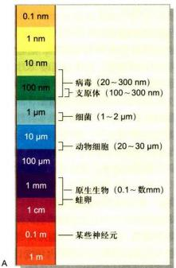
图1-1A，保留原始对数刻度；图示为代表尺寸，不是各类绝对界限。 完整答案 A1 图示病毒约20—300 nm，支原体约100—300 nm，细菌代表约1—2 μm，动植物细胞约20—30 μm，原生生物约0.1至数mm，并列出蛙卵及鲸卵作大尺度参照。相邻典型类别大致相差数量级，但范围重叠，不是每类的绝对上下界；正文另给一般细菌0.5—5.0 μm等范围，需按代表与总体区分。
必答点 R1 读出五类数值、正确nm／μm／mm换算和对数刻度；例子与总体范围区别、重叠及近似关系。
依据与来源 教材直接支持。
卡片ID：RB-CN01-0027
RB-CN01-0028 同一组织细胞为何具有适宜尺寸范围？蛋白质合成对细胞大小调控有什么证据？完整答案 A1 合适体积有利于细胞与外界的物质、信息交换以及内部运输、信号传递，因而同类器官组织细胞通常处于一定范围。教材将核糖体活性与蛋白质积累联系：酵母和果蝇的某些核糖体蛋白突变伴随细胞尺寸变化，为蛋白合成参与尺寸调节提供证据。
必答点 R1 适宜尺寸的交换与运输意义；酵母果蝇、核糖体蛋白突变与尺寸变化的观察，不能只说细胞小。
理解与联系 此证据不能把细胞大小的全部原因归于单一核糖体活性，同章还讨论液泡膨胀。
依据与来源 教材直接支持。
卡片ID：RB-CN01-0028
RB-CN01-0029 读图1-1B：胰岛素／IGF信号怎样经PI3K、Akt、mTOR连接到细胞体积增加？雷帕霉素敏感性说明什么？（需看图：膜两侧、磷脂转换和下游促进／抑制箭头）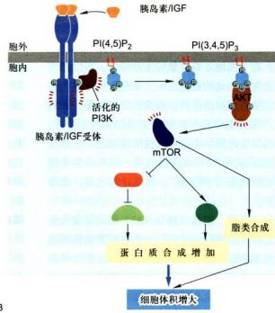
图1-1B；低分辨率未标清的中间图标不作具体分子命名题。 完整答案 A1 胰岛素或IGF（insulin-like growth factor，胰岛素样生长因子）激活膜受体，促进PI3K（phosphoinositide 3-kinase，磷脂酰肌醇3-激酶）作用，将PI(4,5)P₂即4,5-二磷酸磷脂酰肌醇转成PI(3,4,5)P₃即3,4,5-三磷酸磷脂酰肌醇；后者联系Akt（protein kinase B，蛋白激酶B）活化并传向mTOR。
A2 教材称mTOR为mammalian target of rapamycin（哺乳动物雷帕霉素靶蛋白），是一种蛋白激酶，得名于其受雷帕霉素抑制。图示下游增加蛋白质合成并联系脂类合成，推动细胞体积增大；mTOR失活导致体积变小。下游既有正向促进也有解除抑制，不能把所有线均当作同方向促进。
必答点 R1 配体、受体、膜内侧脂质转换、PI3K及Akt的顺序和促进关系。
R2 教材mTOR全称、激酶、药物敏感性；蛋白和脂类合成、体积结果及抑制线的读法。
依据与来源 教材直接支持。
卡片ID：RB-CN01-0029
RB-CN01-0030 植物细胞旺盛分裂期和分裂后的体积增加，物质基础有什么不同？液泡如何维持组织刚性？完整答案 A1 旺盛分裂期的尺寸主要与蛋白质等大分子积累相连；分裂后可因中央液泡膨胀而扩大数倍至数千倍，不要求有机物或胞质氮含量同比增加。小液泡合并、增大形成中央大液泡，可用低物质成本填充体积并扩大受光面积。
A2 植物必须把溶质持续转运入液泡以维持膨压，使细胞与组织保持刚性。体积增大不能简单等同细胞数量增多，也不能把液泡膨胀说成无需溶质运输。
必答点 R1 分裂期大分子积累与分裂后液泡膨胀；数量范围、低成本、氮含量和受光面积。
R2 溶质运输→膨压→细胞组织刚性；体积与细胞数量区分。
依据与来源 教材直接支持。
卡片ID：RB-CN01-0030
RB-CN01-0031 支原体为何常被用来研究最小细胞？本版给出的直径与最少基因估计应怎样理解？完整答案 A1 支原体（Mycoplasma）具有细胞基本结构与功能，教材给一般直径0.1—0.3 μm，是讨论小而简单细胞的代表；通过基因删除研究，本版概括约需400个基因维持特定条件下细胞代谢。该数值是教材所述研究估计，不能当作所有环境、所有生命的固定最少基因数。
必答点 R1 0.1—0.3μm、细胞结构与功能、基因删除方法、约400与条件性。
理解与联系 已与指定英文第7版生殖支原体段交叉核对Mycoplasma拼写及寄生营养条件。约400为中文版本基因删除研究概括，不能称无条件的自由生活最低基因数。
依据与来源 教材直接支持数值；条件限定为基于指定双教材比较推导。
卡片ID：RB-CN01-0031
RB-CN01-0032 教材所说支原体“人造生命”合成了什么，哪些组分仍来自已有细胞？为何不能据此说人工从无到有合成了完整细胞？完整答案 A1 教材案例在体外合成支原体基因组，再利用现存支原体细胞的其余组分。人工部分是基因组，膜、胞质和已有生命装置并非全部从无到有人工生成。因此成功建立带人工基因组的细胞，不等于完整细胞的全部结构与组分都已人工合成。
必答点 R1 人工基因组与现存细胞其余组分的区别；成功范围及不能推出的结论。
依据与来源 教材直接支持。
卡片ID：RB-CN01-0032
RB-CN01-0033 怎样从构成、代谢、发育、繁殖和演化五方面论证细胞是生命活动的基本单位？完整答案 A1 构成方面，细胞构成单细胞或多细胞有机体，人体有200多种细胞；代谢方面，单细胞独立执行运动、呼吸、排泄、生殖，多细胞通过结构功能不同的细胞协作形成器官并完成生理功能。
A2 生长发育由细胞分裂、分化、迁移和凋亡共同实现；遗传繁殖依赖细胞或生殖细胞，孢子萌发或配子结合形成下一代，遗传信息指导其构建。
A3 按本章生命起源框架，长期化学演化形成含遗传物质的原始细胞，标志细胞生命形成，此后进入生物演化。细胞生命的延续与多样化都在这一基础上展开。
必答点 R1 有机体构成、200多类；单细胞的完整功能与多细胞器官协同。
R2 四种发育行为；孢子、配子、合子和遗传信息的代际桥梁。
R3 化学演化、含遗传物质原始细胞、生物演化的先后。
依据与来源 教材直接支持。
卡片ID：RB-CN01-0033
RB-CN01-0034 中英文教材如何估算新生儿与成人细胞总量？总个数与细胞类型数如何区别？完整答案 A1 中文第5版估计新生儿约2×10¹²个细胞，成人约3.7×10¹³个；英文第7版开篇以人体细胞大于10¹³个作数量级概括。人体“200多种”指不同类型，不是总个数。数值是特定版本近似估算，不能视为任何个体的精确常数。
必答点 R1 新生儿2×10¹²、中文成人3.7×10¹³、英文大于10¹³；类型数与总数；版本估算限定。
依据与来源 教材直接支持。
卡片ID：RB-CN01-0034
RB-CN01-0035 图1-2怎样体现人体细胞的多样性？请读出八类例子并说明图能支持和不能支持的结论。（需看图：八个组织图像与标注）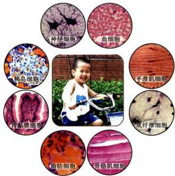
图1-2，图中圆形排版框不代表细胞的统一尺寸比例。 完整答案 A1 图列神经细胞、血细胞、平滑肌细胞、成纤维细胞、骨骼肌细胞、脂肪细胞、肝脏细胞和胰岛细胞。不同形态的细胞在同一个体中形成相互配合的组织，体现同一生命体中的结构和功能分工。
A2 这是结构多样性的示例图，无统一比例尺，不能仅凭图中圆圈大小比较真实细胞直径，也不直接测量其代谢功能或总类型数。
必答点 R1 八种标注全部对应；同一个体的细胞多样性与分工。
R2 图例示意、缺统一尺度；不能由排版大小推出细胞大小或功能测量。
依据与来源 教材直接支持图示内容；证据限度为基于教材推导。
卡片ID：RB-CN01-0035
RB-CN01-0036 从细胞结构分类到三域六界，本教材采用什么依据？为何形态相似的古菌仍独立成域？完整答案 A1 H. Ris于20世纪60年代提出依据有无典型核结构区分真核与原核型细胞；真核细胞有膜包围的核，原核型没有。eukaryotic中eu表示“真实”、karyon表示“核”。原核型多为单细胞，真核包括单细胞及多细胞；区分还涉及代谢、信息表达、调控和信号，而非只看核。
A2 基因与基因组比较显示古菌的信息表达系统与细菌差异大，却较接近真核，因此从原核型群体独立为古菌域。本章采用细菌、古菌、真核三域，再列细菌界、古菌界、原生生物界、真菌界、植物界和动物界六界。
必答点 R1 结构依据、人物时代、词源及单双细胞；差异不限于核。
R2 序列与表达证据；三域及本章六界对应，不把形态相似等同近缘。
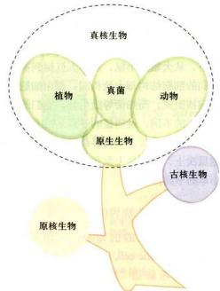
图1-3为本版分类框架，不把此简图视为所有现代系统树分支的精确表达。 依据与来源 教材直接支持。
卡片ID：RB-CN01-0036
RB-CN01-0037 本章给出原核型细胞起源与体积的什么大致范围，列举了哪些代表类群？为何不能以动物外形差别判断最根本的细胞差别？完整答案 A1 教材概括原核型细胞约出现于30—35亿年前，一般直径0.2—10 μm，分布广、繁殖快；例子包括支原体、衣原体、立克次体、细菌、放线菌和蓝细菌。多数细菌另给0.5—5.0 μm，不等于所有原核型的范围。
A2 大象与小鼠、植物与动物外形不同，但基本真核结构大致共享质膜、胞质和细胞核；与没有典型核的细菌相比，根本差异更清楚地体现于细胞组织层次。
必答点 R1 年代和直径范围；六类例子；多数细菌与原核型总体不同。
R2 宏观外形不同与细胞共性；有核区室层次的比较。
依据与来源 教材直接支持。
卡片ID：RB-CN01-0037
RB-CN01-0038 细菌的基本结构怎样组织？拟核与真核细胞核怎样区别？ 本章图1-4采用哪种细菌电镜，原图模式的旧标注为何应暂缓学习？完整答案 A1 本章细菌典型结构为细胞壁、细胞质膜、核区和核糖体，某些种还有荚膜与鞭毛。细菌通常没有核膜围绕的典型核；明显但不规则的拟核（nucleoid）为DNA（deoxyribonucleic acid，脱氧核糖核酸）主要所在区域，其周围为较致密胞质。图1-4的猪丹毒杆菌（Erysipelothrix rhusiopathiae）电镜与模式图已核对，但其中旧“中膜体”标注尚待核实，此题采用完整文字作答。
必答点 R1 细胞壁、膜、核区、核糖体；部分种类荚膜与鞭毛；拟核无核膜、不规则、DNA与胞质关系；原图菌名与电镜／模式性质。
理解与联系 图1-4未放到此卡以免训练未核实中膜体；原图仍保留在来源目录，并记入媒体待核实表，未称完成这一结构的图像回忆。
依据与来源 教材直接支持。
卡片ID：RB-CN01-0038
RB-CN01-0039 青霉素在教材中作用于哪种细胞壁成分？为何古菌对这类靶点药物的反应不同？完整答案 A1 青霉素（penicillin）抑制肽聚糖（peptidoglycan）合成。古菌细胞壁不具有细菌式肽聚糖与胞壁酸，缺少这一合成靶点，所以针对该靶点的青霉素及溶菌酶作用不能照搬至古菌；革兰染色阳性或阴性并不能证明古菌有同样肽聚糖壁。
必答点 R1 肽聚糖靶点、古菌缺失胞壁酸肽聚糖；靶点与反应的因果及染色不能替代成分。
依据与来源 教材直接支持。
卡片ID：RB-CN01-0039
RB-CN01-0040 细菌质膜为何是多功能的代谢界面？与真核细胞器比较时，“部分功能”限定有什么意义？完整答案 A1 细菌质膜承担选择性物质交换，膜上的多种酶还参与有氧呼吸、蛋白质分泌及壁合成等过程。这些反应在真核细胞中常由不同区室分担，因此细菌质膜可承担线粒体、内质网、高尔基体的部分相关功能，但不能说细菌具有这些同名细胞器或其功能完全相同。
必答点 R1 交换与三类膜相关过程；真核区室对应是部分功能而非同名器官。
理解与联系 原文并列“蛋白质的合成与分泌”，常规翻译仍由核糖体执行，不把蛋白合成全归质膜。
依据与来源 教材直接支持。
卡片ID：RB-CN01-0040
RB-CN01-0041 细菌鞭毛和核糖体的教材结构数据是什么？鞭毛为什么不能与真核鞭毛仅按名称等同？完整答案 A1 某些细菌有直径约20 nm的鞭毛（flagellum），其主要丝状结构由鞭毛蛋白（flagellin）组成。真核鞭毛虽然中英文名称相同，但结构与运动机制不同；该段不提供完整马达细节，不能用同名推出同结构。
A2 教材概括每个细菌有约5000—50000个核糖体，沉降系数70S；S是沉降单位，不应把亚基S值按质量简单相加。此为教材数量范围，不是每种培养条件下的固定数目。
必答点 R1 某些细菌、约20nm、鞭毛蛋白与同名不等同的结构机制差异。
R2 核糖体数量范围与70S，估算条件；不把S当质量单位。
依据与来源 教材直接支持。
卡片ID：RB-CN01-0041
RB-CN01-0042 细菌核区如何在很小空间组织DNA？本章给出哪些数量级和包装组分？完整答案 A1 教材描述拟核蛋白参与包装，与真核典型组蛋白体系不同；不到1 μm³核区中可折叠约1200—1400 μm的环状DNA（deoxyribonucleic acid，脱氧核糖核酸），包含足以编码约2000—5000种蛋白的信息。空间尺寸与分子长度并非同一概念，说明DNA需高效折叠包装，不能把拟核说成完全无蛋白的裸DNA。
必答点 R1 拟核蛋白、三组数值及单位；分子长度与容纳体积不同，包装的重要性。
依据与来源 教材直接支持。
卡片ID：RB-CN01-0042
RB-CN01-0043 图1-5所示细菌信息表达为何可在空间和时间上连续进行？图上每类酶和产物对应什么过程？（需看图：复制叉、RNA聚合酶及新生RNA上的核糖体）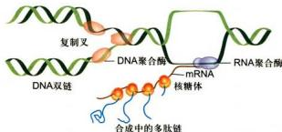
图1-5为细菌信息过程的示意，并非所有DNA分子任何时刻都在同时复制、转录。 完整答案 A1 细菌DNA（deoxyribonucleic acid，脱氧核糖核酸）、转录装置和核糖体不被核膜区室隔开。DNA聚合酶在复制叉复制DNA；RNA（ribonucleic acid，核糖核酸）聚合酶以DNA模板转录mRNA（messenger RNA，信使核糖核酸）；新生mRNA可在尚未完成转录时被核糖体翻译，产生肽链。因此复制、转录与翻译可在相同细胞空间并行，转录与翻译尤其可以耦联。
必答点 R1 三类装置与产物；无核膜分隔→新生mRNA可被核糖体接触→转录翻译耦联的完整因果。
依据与来源 教材直接支持。
卡片ID：RB-CN01-0043
RB-CN01-0044 本章给出大肠杆菌基因组的什么大小与复制起点概括？为何需要保留“通常／一般”的限定？完整答案 A1 大肠杆菌教材基因组大小约4.64×10⁶ bp（base pairs，碱基对）；细菌基因组常以环状DNA（deoxyribonucleic acid，脱氧核糖核酸）为代表，通常有一个主要复制起点。这些是特定对象与典型组织形式，不能从大肠杆菌示例推断所有细菌基因组大小、形状与起点数完全相同。
必答点 R1 大肠杆菌、4.64×10⁶bp；典型环状、一般起点及对象范围。
依据与来源 教材直接支持。
卡片ID：RB-CN01-0044
RB-CN01-0045 质粒是什么？它能带来哪些性状，如何成为基因重组和基因转移的载体？完整答案 A1 质粒（plasmid）是细菌中可自主复制、比主要基因组更小的DNA（deoxyribonucleic acid，脱氧核糖核酸）分子，本章以环状为代表。其基因可赋予新性状，因可复制并承载引入的遗传片段，常作为基因重组和基因转移载体。失去某质粒的后果取决于其携带功能与环境，不能将教材“无妨正常代谢”外推至任何条件。
必答点 R1 自主复制较小DNA；新性状；承载和复制作为载体的原因；丢失后果范围。
依据与来源 教材直接支持。
卡片ID：RB-CN01-0045
RB-CN01-0046 适宜培养条件下大肠杆菌约20分钟分裂一代，而DNA复制需约40分钟，为什么并不矛盾？完整答案 A1 细菌以二分裂增殖。在教材给出的快速生长条件下，连续复制轮次彼此重叠：上一轮尚未结束就启动下一轮，子细胞分开时下一轮已经进行一部分。因此一轮复制所需时间可以超过相邻分裂间隔，而不要求每次先从零开始复制完整基因组。
必答点 R1 20与40分钟、适宜快速生长条件；重叠起始、子细胞已有部分复制、为何时间可超间隔。
依据与来源 教材直接支持。
卡片ID：RB-CN01-0046
RB-CN01-0047 本章怎样联系细菌分裂蛋白FtsZ与真核骨架蛋白？同源关系与功能类比是否是同一件事？完整答案 A1 教材列FtsZ（filamenting temperature-sensitive mutant Z，丝状温度敏感突变体Z蛋白）为细菌分裂关键蛋白，指出它与真核管蛋白（tubulin）同源，而其在细胞分裂中的功能可类比动物胞质分裂微丝。与管蛋白的分子同源和与微丝的分裂功能类比是不同维度，不能因功能类比就判它属于肌动蛋白。
必答点 R1 FtsZ名称及分裂作用；同源对象管蛋白、功能类比微丝，两者不得混同。
依据与来源 教材直接支持。
卡片ID：RB-CN01-0047
RB-CN01-0048 蓝细菌为什么能改变地球的氧环境？其出现时间、色素和生态分布有什么特点？完整答案 A1 蓝细菌（cyanobacteria，传统称蓝藻）是可进行产氧光合作用的自养原核型生物，教材概括约30亿年前出现。其释氧推动原始还原型大气向富氧的氧化环境变化，为后续真核及后生生物演化创造条件。
A2 蓝细菌分布广、可在贫瘠环境生长，含丰富色素而呈多种颜色，名称不意味着均为蓝绿色。其直径常1—10 μm，有些如Oscillatoria princeps可达60 μm；可为丝状、片状或中空球状群体，发菜是丝状蓝细菌，有固定沙漠作用。
必答点 R1 自养产氧、约30亿年；释氧与大气及后续演化条件的连接。
R2 生态、颜色、多组尺寸与颤藻例子、三类群体与发菜意义。
依据与来源 教材直接支持。
卡片ID：RB-CN01-0048
RB-CN01-0049 读图1-6A、C：蓝细菌的光合区、遗传区与内含物怎样组织，分别承担什么功能？（需看图：膜片层、类囊体、藻胆体、中心质、羧酶体和气泡）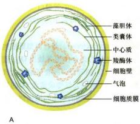
图1-6A，示意图直接标出类囊体等结构。 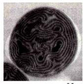
图1-6C，电镜切片的膜片层；原始小图比例尺文字未充分辨清，不能据此计算结构直径。 完整答案 A1 质膜外可见细胞壁和胶质鞘。胞质内同心环样膜片层称类囊体（thylakoid），承载光合色素与电子传递链；藻胆蛋白组成的藻胆体（phycobilisome）在膜上捕光，并向叶绿素a传能。图C电镜切片可观察同心膜片层，不能把这些膜当成真核叶绿体。
A2 中心质是DNA（deoxyribonucleic acid，脱氧核糖核酸）主要所在区，没有清晰膜性界限，也不一定在中央；不同种和个体DNA拷贝数可差别很大，有的多拷贝。内含物有脂滴、含固定CO₂酶的羧酶体（carboxysome）及蛋白鞘包围的气泡，后者帮助调节水中位置。
必答点 R1 包被、同心膜片层、色素与传递链定位；藻胆体捕光到叶绿素a；模式与电镜对应。
R2 无明确膜界且非必在中央、拷贝变化；三类内含物及羧酶体、气泡功能。
依据与来源 教材直接支持。
卡片ID：RB-CN01-0049
RB-CN01-0050 蓝细菌怎样由细胞分裂形成多细胞群体，氮缺乏又如何诱导群体中的功能分化？（需看图：鱼腥藻营养细胞与异形胞颜色及10μm比例尺）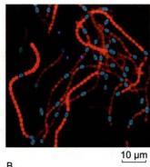
图1-6B，原始荧光图与10μm比例尺。 完整答案 A1 细胞中部向内生长新横隔壁，把中心质和原生质分开。两个子细胞常仍在公共胶质鞘内，持续分裂形成丝状、片状等群体。某些丝状蓝细菌在氮源不足时，群体约5%—10%细胞分化为异形胞（heterocyst）；并非全部蓝细菌都会如此。
A2 异形胞以固氮酶把N₂还原为NH₃，教材将所需ATP（adenosine triphosphate，三磷酸腺苷）联系到光系统Ⅰ提供的能量。荧光图B按图注红色为营养细胞、蓝色为异形胞，标尺10 μm；颜色表示本图成像编码，不是肉眼下必然颜色。
必答点 R1 新隔壁、分配与胶质鞘保持联系；氮缺乏、丝状条件及5%—10%。
R2 固氮酶、N₂→NH₃、ATP与光系统Ⅰ；红蓝身份、10μm及成像色码范围。
依据与来源 教材直接支持。
卡片ID：RB-CN01-0050
RB-CN01-0051 为什么古菌被从原核型生物中区分出来？直系同源基因比较提供了什么证据？完整答案 A1 直系同源基因（orthologous gene）序列比较可揭示物种的演化亲缘。形态相似、均无典型核的细菌与古菌，在遗传信息表达装置上差异显著；古菌许多表达特征反而接近真核。因此形态相似不代表同一演化类群，序列和分子装置证据促成其独立划分。
必答点 R1 直系同源序列与亲缘；形态相似与分子差异；古菌真核接近的证据逻辑。
依据与来源 教材直接支持。
卡片ID：RB-CN01-0051
RB-CN01-0052 古菌的典型发现环境、代表生物、大小与增殖方式是什么？为何研究者关注其与生命早期环境的联系？完整答案 A1 最早发现产甲烷类群，后有高盐环境的盐古菌（halobacteria）、煤堆中的Thermoplasma、硫磺温泉中的Sulfolobus等。曾因极端环境而不受重视，后来发现其广泛分布，不能说古菌仅在极端环境。形态多样，教材尺寸0.1—15 μm，可分裂或出芽。
A2 深海热泉的高温生境令人联想到早期地球环境，促使研究其在起源与演化中的角色。这是研究假说和动机，并非证明现存嗜热古菌就是未经变化的最早细胞。
必答点 R1 四类代表与环境；广泛分布、尺寸和分裂／出芽，保留不只极端环境。
R2 热泉与早期环境联想、研究意义及证据强度限制。
依据与来源 教材直接支持。
卡片ID：RB-CN01-0052
RB-CN01-0053 读图1-7：典型细菌膜脂、古菌双层膜和嗜热古菌单层膜，应按键型、碳链和跨膜方式怎样比较？（需看图：酯键／醚键、C₂₀双层与C₄₀跨膜脂）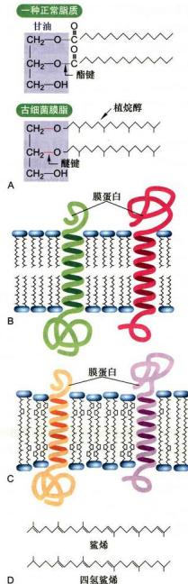
图1-7，按真实结构式和跨膜关系解释，保留B、C双层与单层的区别。 完整答案 A1 图A典型脂肪酸通过酯键连接甘油；古菌图示支链植烷烃类链经醚键连接。图B的C₂₀二醚脂组成双层并嵌入膜蛋白；图C的某些嗜热古菌C₄₀四醚脂可跨膜形成单层，与膜蛋白共同组成较耐高温的膜。
A2 图D列鲨烯与四氢鲨烯，说明古菌膜还可含一定量非极性鲨烯衍生物。古菌单层并非所有古菌共同结构；原OCR“二乙醚／四乙醚”应按图示甘油醚脂理解，不能误作实验溶剂乙醚。
必答点 R1 酯与醚、直链脂肪酸与植烷链；C₂₀二醚双层、C₄₀四醚跨膜单层；某些嗜热条件。
R2 鲨烯及非极性脂质；单层范围限定；二／四醚与乙醚溶剂区别。
依据与来源 教材直接支持。
卡片ID：RB-CN01-0053
RB-CN01-0054 古菌基因组织和表达装置为何同时具有细菌式与真核式特点？教材的测序例子是什么？完整答案 A1 细菌式特征包括典型环状DNA（deoxyribonucleic acid，脱氧核糖核酸）、操纵子、多顺反子mRNA（messenger RNA，信使RNA）及多数基因无内含子。真核式特征包括某些DNA与组蛋白形成核小体样组织，部分tRNA（transfer RNA，转运RNA）、rRNA（ribosomal RNA，核糖体RNA）乃至蛋白编码基因有内含子，RNA（ribonucleic acid，核糖核酸）聚合酶为复杂多亚基体，翻译通常以Met（methionine，甲硫氨酸）起始，而细菌以fMet（N-formylmethionine，N-甲酰甲硫氨酸）为典型。
A2 本版举Methanococcus jannaschii即詹氏甲烷球菌：1700多个蛋白编码基因中近60%为该比较中的特有序列。这是特定测序例子，不是所有古菌固定的基因数或特有基因比例。
必答点 R1 两组特征逐项对应；大部分无与部分有内含子不矛盾；Met／fMet区分。
R2 物种、1700多、近60%及比较与版本限定。
依据与来源 教材直接支持。
卡片ID：RB-CN01-0054
RB-CN01-0055 古菌核糖体虽然也是70S，为何不能据此认为其性质与细菌完全相同？完整答案 A1 多数古菌核糖体70S，但教材描述其含60种以上蛋白，数量介于细菌和真核之间，rRNA（ribosomal RNA，核糖体RNA）和相关蛋白的性质更接近真核。5S rRNA基因演化比较也支持古菌与真核较近。针对典型细菌核糖体的抗生素结合和抑制不能单凭70S推断同样作用于古菌。
必答点 R1 70S与蛋白数量；rRNA／蛋白和5S基因证据；不能以沉降系数替代结合靶点。
依据与来源 教材直接支持。
卡片ID：RB-CN01-0055
RB-CN01-0056 真核细胞的出现年代、主要类群及三个基本结构体系是什么？各体系由什么分子基础组成？完整答案 A1 本版以约21亿年前化石概括早期真核细胞；现存包括单细胞原生生物、动植物和大量真菌。亚显微层次的三体系为：脂质和蛋白组成的膜系统；核酸和蛋白组成的信息传递与表达系统；特异结构蛋白装配的骨架系统。三体系共同组织精密、分工和调控明确的细胞器及生命活动。
必答点 R1 化石约21亿年及类群；三个体系与分子组成及协同组织意义。
依据与来源 教材直接支持。
卡片ID：RB-CN01-0056
RB-CN01-0057 真核生物膜怎样建立区室分工？请把本章列出的结构与功能逐项对应。完整答案 A1 典型膜厚本章给8—10 nm。质膜进行选择性运输和信号转导；双层核被膜分隔核与胞质，有利于基因表达精密调控；胞质内膜进一步围成专门区室。膜还为膜定位酶及相关反应提供表面，但不能把全部或任意生化反应都归于膜表面。
A2 线粒体与叶绿体联系能量转换；内质网参与脂质及许多蛋白合成、分选；高尔基体加工、包装并运输来自内质网的物质；溶酶体承担胞内降解。不同区室的功能专一化，不意味着它们彼此孤立。
必答点 R1 8—10nm；质膜、双层核被膜、酶定位和区室化。
R2 能量、内质网、高尔基体、溶酶体各自功能及相连关系。
依据与来源 教材直接支持。
卡片ID：RB-CN01-0057
RB-CN01-0058 遗传信息体系如何从核小体组织DNA并完成表达？核仁、核糖体、三类RNA各自承担什么任务？完整答案 A1 DNA（deoxyribonucleic acid，脱氧核糖核酸）与组蛋白形成核小体（nucleosome），本章给约10 nm；进一步组织不同紧密程度的常染色质和异染色质，分裂时包装成染色体。染色质构建、DNA相关修饰酶与转录因子共同参与转录调控。
A2 核仁（nucleolus）参与rRNA（ribosomal RNA（ribonucleic acid，核糖核酸），核糖体核糖核酸）转录和核糖体亚基装配。核糖体由rRNA和多种蛋白组成，按mRNA（messenger RNA，信使RNA）信息把tRNA（transfer RNA，转运核糖核酸）携带的氨基酸连接为肽链，实现遗传信息向蛋白质功能的表达。
必答点 R1 核小体组成尺寸；染色质及分裂染色体；结构与因子共同控制转录。
R2 核仁两项作用；核糖体组成；rRNA、mRNA、tRNA各任务及氨基酸连接。
依据与来源 教材直接支持。
卡片ID：RB-CN01-0058
RB-CN01-0059 胞质骨架和核骨架各由什么组成？按教材比较尺寸、作用与两者联系。完整答案 A1 胞质骨架包括微丝（actin filament，肌动蛋白丝）、微管（microtubule）和中间纤维（intermediate filament）。本章微丝5—7 nm，联系运动与信号；微管24 nm，提供胞内运输轨道并形成有丝分裂纺锤丝；中间纤维约10 nm，多型且有组织特异性，主要提供机械支撑。
A2 核骨架本章分核纤层（nuclear lamina）和核基质（nuclear matrix）；前者由核纤层蛋白（lamin）组成，后者成分复杂，关联染色质组织与基因表达。核、胞质骨架相互联系，维持形态及内部空间布局。核基质是本章使用的研究概念，其操作性定义在核章节再核对。
必答点 R1 三类名称、尺寸与功能；中间纤维类型和组织特异性。
R2 核纤层蛋白、核基质成分与关联；核胞质联系和布局意义。
依据与来源 教材直接支持。
卡片ID：RB-CN01-0059
RB-CN01-0060 本章为何引入纳米生物学？在细胞结构研究中它要解释什么层次的问题？完整答案 A1 膜、核酸蛋白颗粒及骨架纤维均具有纳米尺度结构。纳米生物学（nanobiology）研究纳米尺度的生物分子结构与功能，帮助揭示大分子复合物的组织与生命现象之间的联系；不能只把它理解为使用小尺寸仪器。
必答点 R1 纳米尺度对象、结构功能和复合物到生命现象联系。
依据与来源 教材直接支持。
卡片ID：RB-CN01-0060
RB-CN01-0061 自我装配、协助装配和直接装配分别依靠什么信息或基础？请用教材例子比较并说明装配的生物学意义。完整答案 A1 自我装配（self-assembly）所需信息来自组成分子本身，可视为从头发生，例为中间纤维。协助装配（aided-assembly）除最终亚基外，需要不进入最终产物的辅助组分，例为核糖体装配需200多种辅助蛋白。直接装配（direct-assembly）把新亚基加入预存基础结构，例为新膜脂、膜蛋白加入已有膜以扩展质膜。
A2 以复合体而非一个超大蛋白完成任务，可使较小组分的转录翻译更易完成，并降低长链合成错误影响；可逆装配和去装配还便于迅速调控复杂过程，教材举细胞分裂为例。组装不仅搭建静态结构，也是动态调节机制。
必答点 R1 信息来源或预存基础、辅助组分是否进最终产物、三例及200多种的教材值。
R2 小亚基与合成效率、错误风险；装配／去装配与过程调节及分裂例子。
依据与来源 教材直接支持。
卡片ID：RB-CN01-0061
RB-CN01-0062 动物与植物细胞共享哪些主要结构？植物的壁、液泡、质体为何与其生活方式联系？（需看图：图1-8共享细胞器和植物特有标注）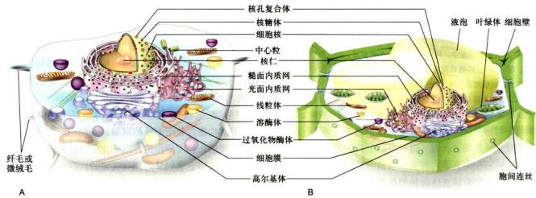
图1-8为代表性动物与植物模式图，不代表全部细胞均同时具备每项细胞器。 完整答案 A1 两者基本共享核、核孔、核仁、核糖体、粗面／光面内质网、高尔基体、线粒体、过氧化物酶体、膜及骨架等真核组织。图中植物还标出细胞壁、中央液泡、叶绿体和胞间连丝；图示不能推出每一种植物细胞都拥有已发育的叶绿体。
A2 植物的自养与定植生活使壁支撑、液泡膨压和光合质体重要；植物壁主要纤维素（cellulose），并有果胶、半纤维素与木质素等，细胞间以胞间连丝（plasmodesmata）联系。动物与植物结构的差异应联系营养和生存方式，而不只背有／无。
必答点 R1 共享结构逐项对应；四类植物图示差异及叶绿体范围。
R2 自养定植；壁四类主要成分和胞间连丝；结构与功能生活方式联系。
依据与来源 教材直接支持。
卡片ID：RB-CN01-0062
RB-CN01-0063 植物液泡的膜、溶质和两类功能是什么？为何“植物没有溶酶体”不能理解为没有胞内降解系统？完整答案 A1 液泡（vacuole）由单层脂—蛋白膜包围，内容物可含无机盐、糖、氨基酸、蛋白、生物碱和色素。中性的储存蛋白质液泡起代谢库和内环境调节作用；酸性裂解液泡含水解酶，降解老化细胞器，承担溶酶体样降解。
必答点 R1 单层膜和六类内容物；中性储存与酸性裂解的条件和作用；植物胞内降解不缺失。
依据与来源 教材直接支持。
卡片ID：RB-CN01-0063
RB-CN01-0064 质体与叶绿体是什么包含关系？原质体怎样形成叶绿体？完整答案 A1 质体（plastid）是植物细胞中双层膜包裹、与糖类合成和贮存密切相关的一类细胞器，叶绿体（chloroplast）是其中进行光合作用的类型。无色原质体（proplastid）见于茎尖分生组织，合适光照使其合成叶绿素并分化为叶绿体；不是所有质体都叫叶绿体。
必答点 R1 双层膜、糖类相关功能、质体包含叶绿体；原质体位置无色及光照发育。
依据与来源 教材直接支持。
卡片ID：RB-CN01-0064
RB-CN01-0065 植物细胞除结构外，还有哪些生长和代谢特征？次生代谢产物与生长不直接相关，为何仍有生存意义？完整答案 A1 植物与动物还在增殖、分化、衰老死亡、能量物质代谢、信息和运输方面不同；植物分裂后常体积扩大并成熟，可扩大数倍至很大倍数。植物可合成大量次生代谢产物（secondary metabolites），亦称天然产物（natural products），虽不直接参加主要生长发育过程，却有助于长期适应环境和生存，并给人类提供药物和调味化合物。
必答点 R1 生命活动差异及分裂后扩张成熟；次生／天然产物、非直接生长功能与环境适应、人类用途。
依据与来源 教材直接支持。
卡片ID：RB-CN01-0065
RB-CN01-0066 真核膜系统扩展怎样与骨架、基因表达及细胞周期调控协同？完整答案 A1 膜区室化把核与胞质、胞质中的不同器官分开，使功能区域专一；体积与结构复杂化需要骨架合理布局。核区室又使表达有多层调控，内含子与可变剪接使一个基因可产生不同蛋白形式。
A2 多条DNA（deoxyribonucleic acid，脱氧核糖核酸）及复杂染色质提高准确复制和分配的组织要求，真核形成受调控的细胞周期和分裂装置。细菌没有真核式有丝分裂装置，但不能据此断言细菌复制与分裂不受严格调控。
必答点 R1 区室化→专一功能；骨架布局；核与多层表达、内含子可变剪接。
R2 多DNA、染色质与复制分配难度；真核周期装置；细菌无有丝分裂不等于无调控。
依据与来源 教材直接支持。
卡片ID：RB-CN01-0066
RB-CN01-0067 按表1-1比较三类细胞的核、膜区室和核外DNA，哪些对应关系应记住？完整答案 A1 细菌与古菌都没有真核式核被膜和核仁，真核通常有；三者均有质膜，细菌和古菌质膜承担较多复合功能。真核有典型膜性器官，细菌和古菌没有同样一套真核式区室。
A2 细菌和古菌可有质粒，真核另有线粒体DNA（deoxyribonucleic acid，脱氧核糖核酸），具有叶绿体的细胞还有叶绿体DNA；因此真核遗传信息并不全部仅存核内。表中的“核外”在细菌指主要染色体以外，不表示它有真核细胞核。
必答点 R1 三者质膜；核膜和核仁；典型真核膜器官，保留真核式而非任何内部膜结构都无。
R2 细菌古菌质粒；真核线粒体与适用叶绿体DNA；核外术语范围。
依据与来源 教材直接支持。
卡片ID：RB-CN01-0067
RB-CN01-0068 按表1-1比较细菌、古菌和真核胞质核糖体的亚基与翻译起始氨基酸。完整答案 A1 细菌与古菌的典型核糖体均70S，含50S大亚基和30S小亚基；真核胞质典型80S，含60S和40S。沉降系数是实验性质，不能把50+30算成70的普通加法问题。
A2 典型细菌起始用fMet即N-甲酰甲硫氨酸，古菌与真核胞质起始用Met即甲硫氨酸。表中氯霉素敏感性对比以细菌核糖体敏感、古菌及真核胞质不敏感为典型；不能把胞质比较直接外推到真核细胞中所有细胞器。
必答点 R1 每类整颗粒和大／小亚基全部配对，限定真核胞质。
R2 三类起始氨基酸；表中氯霉素敏感性，胞质而非全部细胞器的范围。
依据与来源 教材直接支持。
卡片ID：RB-CN01-0068
RB-CN01-0069 按表1-1，真核植物和真菌细胞壁分别有什么主要成分？与细菌、古菌的壁应如何区别？完整答案 A1 有壁的真核植物以纤维素和果胶等为代表，真菌以几丁质（chitin）为代表；动物无这两种细胞壁。细菌式壁含肽聚糖，古菌壁成分不同且不具有同样肽聚糖；应按类群和有壁条件比较，不将所有真核都说成具有同一种壁。
必答点 R1 植物纤维素果胶、真菌几丁质；细菌肽聚糖与古菌不同；真核有壁条件。
依据与来源 教材直接支持。
卡片ID：RB-CN01-0069
RB-CN01-0070 细菌与真核宿主可以有哪些关系？本章如何描述肠道菌群的正常共生及其功能？完整答案 A1 两者已长期共存约20多亿年，有的细菌是病原体，有的互利依存。本版概括人肠道有1000多类微生物、总数约10万亿，正常菌群结构相对稳定。宿主供给栖息和营养，菌群参与B族维生素及某些含氮代谢物的生成、促进铁锌吸收，并参与免疫系统发育和维持。
必答点 R1 病原与共生两类关系；本版菌群近似数量；宿主供给和菌群营养免疫功能。
理解与联系 菌群组成与数量为本版概括，须区分微生物生成物与宿主实际吸收利用的定量贡献，不从本段推得供给满足全部营养需求。
依据与来源 教材直接支持。
卡片ID：RB-CN01-0070
RB-CN01-0071 图1-9的箭头指向什么，教材给出的“菌—免疫”作用链是什么？图像本身能否证明这条因果链？（需看图：回肠末端分节丝状菌与附着位置）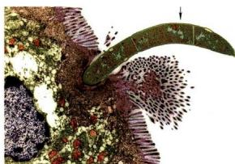
图1-9，保留箭头；原图未提供可用于计算的比例尺。 完整答案 A1 箭头指小鼠回肠末端定植的分节丝状菌（segmented filamentous bacterium）。图注描述其促进Th17（T helper 17 cell，17型辅助性T细胞）增殖并分泌IL-17（interleukin-17，白细胞介素17）等细胞因子，增强对致病菌的抵抗。
A2 这一张形态图显示定植与组织空间关系；因果作用是教材图注引用的研究结论，不是仅看形态即可独立证明的结果。本章未给处理、对照及指标细节，不能虚构完整实验设计。
必答点 R1 小鼠、回肠末端及箭头对象；菌→Th17→IL-17→抵抗的完整图注链。
R2 形态观察与图注功能结论证据层次不同；无实验细节不补造。
依据与来源 教材直接支持图示内容；证据限度为基于教材推导。
卡片ID：RB-CN01-0071
RB-CN01-0072 为什么病毒依赖细胞，并不推翻“细胞是生命活动基本单位”？请比较尺寸、结构、遗传物质和增殖方式。完整答案 A1 病毒是核酸与蛋白等形成的非细胞复合体，本章绝大多数尺寸20—200 nm，需要电镜清晰观察，没有独立核糖体与完整代谢装置。细胞则组织完整的基本生命活动；图1-1给的是不同图示范围，不能将两种范围当成精确统一限值。
A2 细胞以双链DNA（deoxyribonucleic acid，脱氧核糖核酸）作遗传载体并含RNA（ribonucleic acid，核糖核酸）；不同病毒的基因组可以是DNA或RNA，一种粒子通常只装相应一种基因组核酸。病毒须在宿主内复制核酸、合成蛋白，再装配子代，而细胞通常通过分裂形成后代；二者遗传物质与增殖组织方式不同。
A3 病毒利用宿主结构、原料、能量和相关酶体系表现增殖与遗传，可称分子水平寄生。某些病毒的核酸单独进入适宜宿主即可产生子代，说明病毒遗传信息必须借细胞装置执行，不意味着其核酸在细胞外能够自行完成生命活动。
必答点 R1 非细胞结构、尺寸及电镜；无独立核糖体代谢，保留绝大多数与图示不同。
R2 细胞DNA与RNA；病毒DNA或RNA、通常限定；复制合成装配与细胞分裂。
R3 彻底宿主依赖的四类资源；某些核酸可产生子代及适宜细胞条件；不否定细胞基本单位。
依据与来源 教材直接支持。
卡片ID：RB-CN01-0072
RB-CN01-0073 读图1-10：衣壳、核衣壳和囊膜分别是什么？腺病毒、疱疹病毒与烟草花叶病毒的结构和尺度有什么差异？（需看图：A、B、C核酸、衣壳、囊膜及比例尺）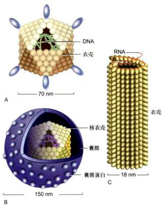
图1-10，比例尺直接嵌入原图；烟草花叶病毒的18nm指直径维度。 完整答案 A1 衣壳（capsid）为蛋白外壳，保护核酸；核衣壳（nucleocapsid）指核酸与衣壳合成的结构。有些病毒外有脂双层囊膜（envelope），脂质部分来自宿主膜，图中囊膜蛋白联系病毒编码。不能把衣壳与囊膜当同一层。
A2 A腺病毒显示DNA（deoxyribonucleic acid，脱氧核糖核酸）和无囊膜衣壳，尺度70 nm；B疱疹病毒核衣壳之外有囊膜与囊膜蛋白，尺度150 nm；C烟草花叶病毒显示RNA（ribonucleic acid，核糖核酸）与螺旋衣壳，图示直径18 nm。前两者近球状、后者杆状，比例尺对的是图示维度，不能把18 nm当杆总长。
必答点 R1 衣壳、核衣壳、囊膜定义；保护、成分来源和有囊膜条件。
R2 三图身份、核酸与包膜差异；70、150、18nm及测量维度。
依据与来源 教材直接支持。
卡片ID：RB-CN01-0073
RB-CN01-0074 病毒表面蛋白与细胞受体怎样影响宿主选择？“识别”在完整感染过程中的位置是什么？完整答案 A1 不同病毒表面蛋白可识别细胞表面特定蛋白或糖蛋白受体，使其倾向进入特定宿主细胞。识别与进入为增殖第一阶段；随后还要在适宜细胞中完成基因组表达、复制、组装和释放。因此不能把受体结合本身等同于已产生完整感染性子代。
必答点 R1 病毒蛋白—特异受体与细胞选择；结合进入只是起始、后续完整增殖步骤。
依据与来源 教材直接支持。
卡片ID：RB-CN01-0074
RB-CN01-0075 读图1-11：辛德毕斯病毒的进入、胞内增殖、膜蛋白运输和出芽释放怎样衔接？请解释电镜图证明的观察。（需看图：内体、RNA复制翻译、ER—Golgi路线和细胞膜出芽）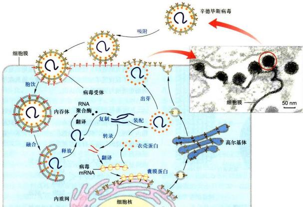
图1-11原图，“RNA聚合酶”不可据图默认为宿主正常提供其全部病毒复制酶；该酶来源须按具体病毒核实。 完整答案 A1 图示病毒与细胞结合并由胞吞进入内体，随后脱壳释放RNA（ribonucleic acid，核糖核酸）。RNA在胞质中用于翻译和复制，形成新基因组和衣壳蛋白，装配核衣壳。此图是该病毒的过程，不把所有病毒统一成相同进入与复制方式。
A2 膜蛋白在内质网相关装置合成，经高尔基体运至质膜；核衣壳从含相应膜蛋白的质膜处出芽，获得囊膜并释放，再感染细胞。图中电镜显示出芽粒子与膜的形态关系，标尺50 nm；它支持出芽观察，不独立证明全部RNA反应顺序。
必答点 R1 胞吞—内体—脱壳RNA；翻译复制到衣壳装配；病毒类型限制。
R2 ER→Golgi→质膜膜蛋白；出芽获得囊膜和释放；电镜所见、50nm及证据范围。
依据与来源 教材直接支持图示内容；证据限度为基于教材推导。
卡片ID：RB-CN01-0075
RB-CN01-0076 病毒感染与细胞凋亡可以怎样相互作用？为何病毒研究也促进了细胞增殖调控研究？完整答案 A1 多种病毒感染可诱导细胞凋亡（apoptosis），但某些病毒编码蛋白能抑制凋亡，使感染细胞存活到病毒繁殖完成。这是双方作用的不同策略，不能一概说所有感染均促进或抑制凋亡。
A2 研究病毒癌基因（viral oncogene）如何导致细胞癌变，促进了细胞原癌基因（proto-oncogene）的发现，并加深对增殖和调控机制的理解；病毒也因此成为研究细胞机制的工具和线索。
必答点 R1 诱导与抑制两种条件；抑制凋亡延长复制机会的机制联系。
R2 病毒癌基因、细胞原癌基因及增殖调控三者联系。
依据与来源 教材直接支持。
卡片ID：RB-CN01-0076
RB-CN01-0077 本章提出病毒与细胞起源的哪三种主要假说？各自顺序与教材论证的限制是什么？完整答案 A1 三种框架为：生物大分子先形成病毒，再形成细胞；大分子分支形成细胞和病毒；大分子先形成细胞，再由细胞或细胞成分产生病毒。过去“病毒是生物与非生物桥梁”支持第一种，本章指出现存病毒彻底依赖细胞使这一顺序难解释，并较倾向第三种。
A2 本章也承认缺少病毒化石，起源关系仍是讨论中的假说。现存寄生性为讨论线索，不能仅据此把某一个假说宣布为已被完整证明的历史事实。
必答点 R1 三种先后／分支关系；早期桥梁观点及现存寄生性论据、教材倾向。
R2 没有化石及假说地位；现存机制不等于完整起源历史证明。
依据与来源 教材直接支持。
卡片ID：RB-CN01-0077
RB-CN01-0078 从个体、细胞到分子，哪些里程碑体现细胞研究连接不同生命层次？请说明研究层次变化的主线。完整答案 A1 教材列17世纪发现细胞及随后细胞学说，19世纪染色体发现，20世纪早期遗传的染色体理论，50年代初DNA（deoxyribonucleic acid，脱氧核糖核酸）双螺旋，以及2003年人类基因组计划完成；还列核移植与体外干细胞诱导，反映从形态、遗传结构到分子机制和细胞操作的深入。
必答点 R1 主要里程碑及2003年；核移植诱导细胞；形态—遗传—分子—细胞操作联系。
依据与来源 教材直接支持。
卡片ID：RB-CN01-0078
RB-CN01-0079 以本章三个例子论证“细胞结构与功能相关”：膜、液泡和细菌信息表达分别怎样体现这一原则？完整答案 A1 膜构成选择性边界及区室，既维持环境又组织反应与信号；植物大液泡以低成本增加体积并通过溶质和膨压支撑；细菌无核膜分隔，使新生mRNA（messenger RNA，信使RNA）能够与胞质核糖体接触而转录翻译耦联。每例都要把具体结构、所允许的过程和功能结果相连，不能只列结构名称。
必答点 R1 膜的边界区室→环境与过程；液泡体积／溶质→膨压；细菌无核膜→新生RNA接触→耦联。
依据与来源 教材直接支持。
卡片ID：RB-CN01-0079
RB-CN01-0080 从演化角度，细菌、古菌和真核细胞在膜区室、遗传表达、骨架分裂及亲缘证据上怎样比较？完整答案 A1 三者共享遗传与代谢基础；细菌、古菌无真核式核膜，真核以核及内膜建立区室。细菌与古菌质膜承担多功能代谢，典型真核把许多过程分配给不同器官；古菌膜脂的醚键和部分跨膜四醚结构又区别于典型酯键脂。
A2 细菌转录翻译可耦联；古菌操纵子等组织近似细菌，组蛋白、RNA（ribonucleic acid，核糖核酸）聚合酶及起始Met等表达装置又更近真核；真核的核区室和染色质支持多层表达控制。真核骨架与有丝分裂装置组织复杂DNA（deoxyribonucleic acid，脱氧核糖核酸）的分配，但细菌也有受调控的分裂蛋白，不能套用旧表“完全无骨架”的绝对结论。
A3 直系同源基因和rRNA（ribosomal RNA，核糖体RNA）等序列比较显示古菌、真核的表达相关亲缘，而非仅按外观把古菌与细菌并为完全同一类。演化比较要区分共有基础、分支特征与后续复杂化，不把现存某类解释为另一类尚未变化的祖先。
必答点 R1 共同基础、有无典型核膜、区室分工与膜脂三组对比。
R2 细菌耦联；古菌两组表达特征；真核表达分配与严格范围。
R3 同源序列证据与形态比较的区别；共有基础与派生特征的逻辑。
依据与来源 教材直接支持。
卡片ID：RB-CN01-0080
RB-CN01-0081 如何从细胞与遗传角度区分生命复制与晶体生长、燃烧或水波形成？自由能输入在其中起什么作用？完整答案 A1 细胞是膜包围、含浓集水溶液的化学系统，可以生长并复制，生物从环境获得物质形成自身及后代。生命复制向后代传递确定种类特征的遗传信息；晶体、火焰与水波也可出现增长或结构，但没有同类的亲子特征信息传递。
A2 火焰同样消耗自由能，所以能量消耗本身不是充分判据；细胞用自由能驱动按遗传信息组织和维持复杂化学反应体系。生命共性与种类、形态多样性并存，细胞结构、功能、行为研究是解释这二者的重要基础。
必答点 R1 膜和水溶化学体系；生长复制；遗传连续性与三类非生命例子区别。
R2 自由能不是单独判据；遗传信息指导复杂体系及同一性多样性。
依据与来源 教材直接支持。
卡片ID：RB-CN01-0081
RB-CN01-0082 图1-1的海胆、小鼠和墨角藻卵如何说明单细胞遗传信息决定发育的物种特征？请同时读出三个卵图比例尺。（需看图：A/C/E卵与B/D/F个体对应）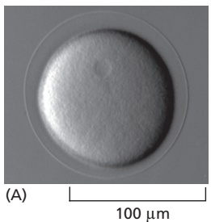
Figure 1-1A 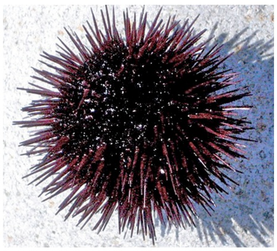
Figure 1-1B 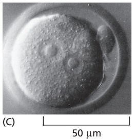
Figure 1-1C 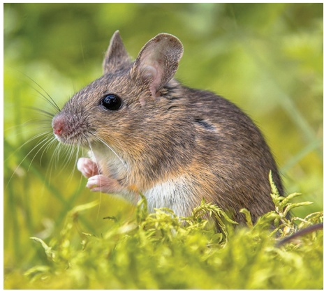
Figure 1-1D 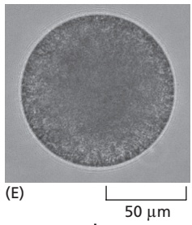
Figure 1-1E 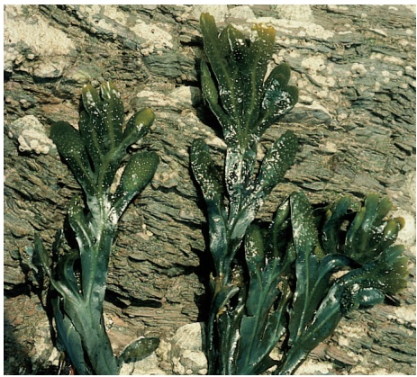
Figure 1-1F 完整答案 A1 A/B对应海胆（sea urchin），C/D对应小鼠（mouse），E/F对应墨角藻（Fucus）。外表相近的起始细胞形成不同物种，说明不能用卵外形相似推断遗传指令相同；多细胞个体经细胞分裂从单细胞形成，起始细胞须携带构建物种的遗传信息和复制所需装置。
A2 A图标尺100 μm，C与E均50 μm。成年海胆、小鼠、藻体照片没有共同尺度，不能以照片框大小比较成年个体真实大小。
必答点 R1 三组对象配对；外形近似与遗传信息不同；单细胞起源和复制装置。
R2 100、50、50μm对应正确；成年照片无共同尺度。
依据与来源 教材直接支持。
卡片ID：RB-CN01-0082
RB-CN01-0083 基因组是什么？跨物种读取DNA的能力为何支持共同祖先观点，英文教材估计该祖先存在于何时？完整答案 A1 基因组（genome）是DNA（deoxyribonucleic acid，脱氧核糖核酸）线性核苷酸序列中承载的全套遗传信息。DNA为长而不分支的双链聚合物，统一使用A、T、C、G四种核苷酸次序记录信息；人和细菌DNA经必要适配可被另一种细胞的装置读取、解释、复制。
A2 共享信息记录与执行形式，提供普遍共同祖先证据。英文教材估计细胞演化已超过35亿年，共同祖先约在35—38亿年前；快速测序使数万物种的全基因组可比较。这些是本版估计与技术状态。
必答点 R1 基因组定义、DNA结构与四字母信息；跨物种读取的必要适配。
R2 相同语言与共同祖先的推理；35—38亿年、数万基因组及估计属性。
依据与来源 教材直接支持。
卡片ID：RB-CN01-0083
RB-CN01-0084 英文教材怎样用计算机类比遗传信息？数据载体变化与生命共同DNA载体形成什么对照？完整答案 A1 教材举约10⁶ bytes可记录数百页文字或一幅图片、约10⁹ bytes可记录60分钟网络视频，说明信息可按量度且可有不同物理载体。旧磁盘和磁带约25年后可能不能由新机器读取；相比之下，生命数十亿年仍共享DNA（deoxyribonucleic acid，脱氧核糖核酸）信息体系，这种高度保守性支持共同起源。
必答点 R1 两组数量例子、60分钟与载体淘汰；生命语言保守的对照及证据意义。
理解与联系 上述字节值是教材教学类比，受编码、分辨率和压缩条件影响，不作为所有文件格式的精确换算。
依据与来源 教材直接支持。
卡片ID：RB-CN01-0084
RB-CN01-0085 读图1-2：DNA核苷酸怎样形成有极性骨架、互补碱基怎样指导新链？解释共价键、氢键数量、反向链和双螺旋。（需看图：A—E结构与键型）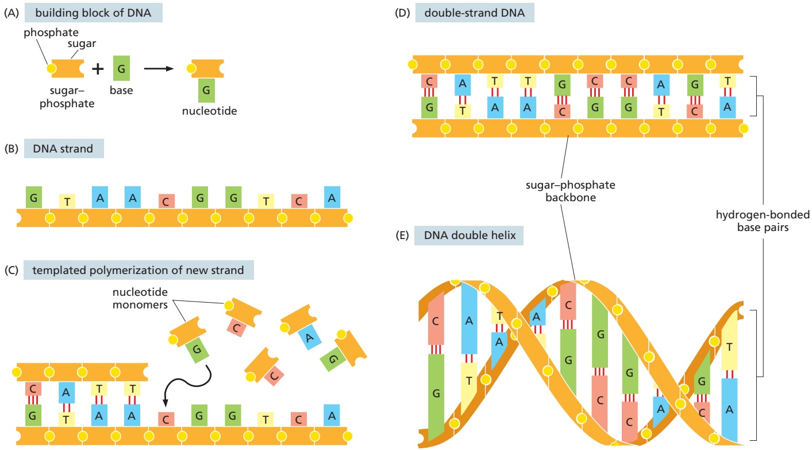
Figure 1-2A—E；图未明确标出5′/3′编号，不凭图中左右方向编造链端标号。 完整答案 A1 核苷酸（nucleotide）由脱氧核糖、磷酸与含氮碱基组成；四种碱基为A腺嘌呤、G鸟嘌呤、C胞嘧啶、T胸腺嘧啶。图注以约35个共价连接原子描述单元，实际随种类而变。糖—磷酸连接成重复骨架，碱基侧向伸出；非对称单元赋予链方向性。
A2 预存链作模板，A与T、C与G匹配，使合适单体被保留并加入新链；新旧序列互补、骨架方向相反。如图原链GTAA…，互补链按对齐方向为…TTAC。链内骨架由强共价键维持，跨链碱基主要以较弱氢键配对；两条链缠绕为双螺旋，可容纳不同序列而保留基本形态。 图中A—T间两条连接线对应两个氢键，G—C间三条对应三个氢键，这不同于糖—磷酸的共价骨架。
必答点 R1 三个组成、四碱基与约数；骨架连接、伸出碱基及非对称极性。
R2 模板选择、两组互补、反向骨架与序列示例；链内共价／链间氢键、双螺旋。 A—T两个、G—C三个氢键，能与共价骨架区别。
依据与来源 教材直接支持。
卡片ID：RB-CN01-0085
RB-CN01-0086 DNA两条链为何可分离而骨架保持完整？每条模板怎样产生两个与亲代序列相同的DNA分子？（需看图：红色亲代链和黄色新链的分配）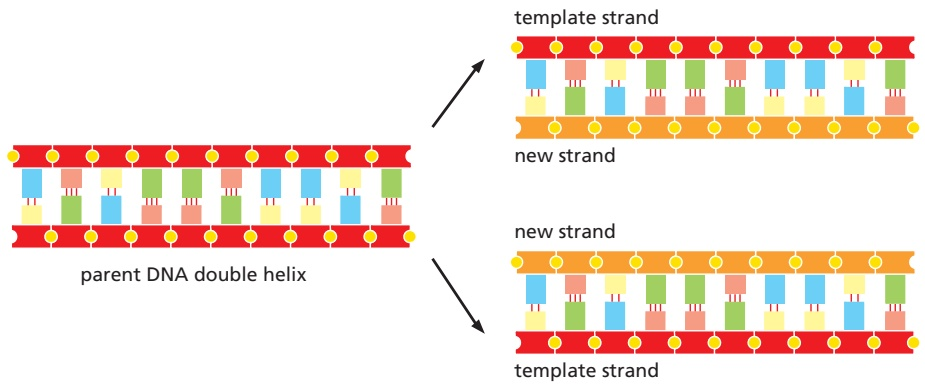
Figure 1-3，红色为亲代骨架、黄色为新链骨架。 完整答案 A1 链间碱基配对的氢键较链内糖—磷酸共价连接弱，两链可分开而不必切断骨架。每条旧链分别作为模板，以互补配对选择新核苷酸并聚合，形成两份子代双链，每份都有一条亲代链和一条新链。正确复制的子代序列与亲代相同。
A2 不同细胞的复制速率、启停控制和辅助因子会不同，共通的是以DNA（deoxyribonucleic acid，脱氧核糖核酸）存信息、以模板聚合复制。图1-3颜色区分旧新，不表示DNA在现实中天然呈红黄两色。
必答点 R1 弱氢键与强骨架；双模板、互补聚合、一旧一新和两份相同序列。
R2 共同机制与不同速度控制；颜色为图示编码。
依据与来源 教材直接支持。
卡片ID：RB-CN01-0086
RB-CN01-0087 DNA复制、转录和翻译各使用什么模板、单体与产物？从DNA到蛋白质的表达为何需要两步？（需看图：图1-4三条反应箭头）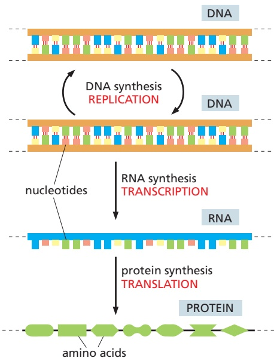
Figure 1-4；箭头是本图表达主线，不表示所有RNA都被翻译或概括所有病毒信息流。 完整答案 A1 复制（replication）用DNA（deoxyribonucleic acid，脱氧核糖核酸）模板合成DNA；转录（transcription）用一段DNA合成RNA（ribonucleic acid，核糖核酸）；翻译（translation）用mRNA（messenger RNA，信使RNA）信息决定氨基酸次序并合成蛋白质。前两者是核苷酸的模板聚合，翻译把核苷酸信息转为另一类聚合物氨基酸链，所以不能把翻译说成合成RNA。
必答点 R1 模板、单体、产物三组配对；核苷酸到氨基酸的信息类别转变。
依据与来源 教材直接支持。
卡片ID：RB-CN01-0087
RB-CN01-0088 RNA与DNA的化学组成怎样区别？转录中的配对怎样把DNA信息改写为RNA序列？完整答案 A1 RNA（ribonucleic acid，核糖核酸）用核糖而DNA（deoxyribonucleic acid，脱氧核糖核酸）用脱氧核糖；RNA的U尿嘧啶替代DNA的T胸腺嘧啶，A、C、G相同。RNA的A、U、C、G分别与DNA模板的T、A、G、C配对，模板选择单体并指导聚合，形成代表该段遗传信息的单链RNA。
必答点 R1 糖和U／T差异；四组模板配对；单链转录产物和信息对应。
依据与来源 教材直接支持。
卡片ID：RB-CN01-0088
RB-CN01-0089 为什么同一DNA片段可产生许多RNA，而RNA不都承担相同功能？完整答案 A1 DNA（deoxyribonucleic acid，脱氧核糖核酸）片段可重复用于转录，产生许多相同RNA（ribonucleic acid，核糖核酸）。DNA作为长期信息档案，RNA转录本则可大量产生并更新；许多mRNA（messenger RNA，信使RNA）将信息交给蛋白合成装置，另有RNA直接承担结构、催化或调控等任务。因此RNA不是全都要翻译的临时蛋白模板。
必答点 R1 重复模板和大量转录本；档案与可更新副本；mRNA及直接功能RNA。
依据与来源 教材直接支持。
卡片ID：RB-CN01-0089
RB-CN01-0090 蛋白质的单体、序列和折叠怎样相连？其质量比例、结构功能与催化作用应如何概括？完整答案 A1 蛋白质（protein）为无分支的氨基酸聚合链，经典20种氨基酸以共享骨架共价连接，各自侧链赋予不同化学性质。氨基酸序列影响折叠及三维结构，进而决定特异结合和功能；序列经过演化选择，不是仅有长度才决定结构。忽略水后，蛋白质通常构成细胞质量的主要部分。
A2 蛋白可形成和维持胞内外结构、产生运动、感受信号；许多蛋白的活性位点催化特定共价键形成或断裂，称酶（enzyme）。催化剂（catalyst）加快特定反应而在反应总体前后不被净消耗，不能把“加快任何变化”作为化学定义。
必答点 R1 20种经典单体、共同核心与侧链、序列→折叠→特异功能；去水质量语境。
R2 结构运动感信号、活性位点与特定反应；催化剂不净消耗。
依据与来源 教材直接支持。
卡片ID：RB-CN01-0090
RB-CN01-0091 图1-5为什么把细胞看成自催化、可自复制体系？绿色和红色箭头分别表示什么，能否说所有催化剂都是蛋白质？（需看图：营养／废物和信息—催化反馈）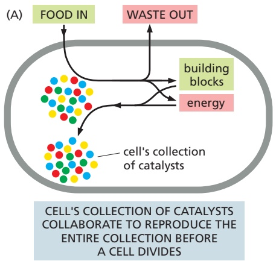
Figure 1-5A 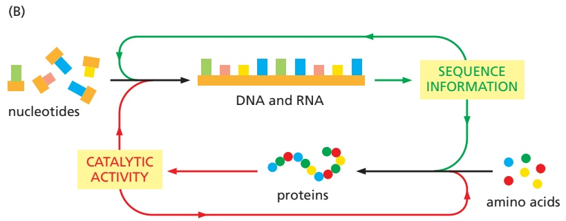
Figure 1-5B，绿色信息与红色催化箭头。 完整答案 A1 图A中细胞从食物获得构件和能量，催化剂集合加工这些资源，在分裂前复制整个体系并排废物。图B绿色箭头是DNA（deoxyribonucleic acid，脱氧核糖核酸）、RNA（ribonucleic acid，核糖核酸）序列信息，指导核酸复制与蛋白序列；红色箭头为蛋白提供催化活性，支持DNA、RNA、蛋白生成。信息制造催化装置，催化装置又维持信息及自身生产，形成相互依赖反馈。
A2 大多数催化剂为蛋白酶，但有些RNA也能催化，称核酶（ribozyme）。所以蛋白承担主要执行功能不等于RNA只能传递信息，也不等于全部催化剂均为蛋白。
必答点 R1 食物到构件能量、排废；绿色序列与红色催化；两者闭合反馈及复制。
R2 大多数蛋白酶与少数催化RNA；RNA功能例外不可漏。
依据与来源 教材直接支持。
卡片ID：RB-CN01-0091
RB-CN01-0092 四种核苷酸怎样编码20种经典氨基酸？列出标准终止信号，解释三联体总数、编码数、简并性及tRNA和核糖体作用。完整答案 A1 标准遗传密码按三核苷酸一组读取，即密码子；四种核苷酸产生4³=64种三联体。其中UAA、UAG、UGA通常为终止信号，不指定氨基酸，故标准表有61个氨基酸编码三联体。多个密码子可对应同一经典氨基酸，称简并性。64与20比较要区分终止和编码，不能说所有64个都编码氨基酸。
A2 tRNA（transfer RNA（ribonucleic acid，核糖核酸），转运核糖核酸）一端携带特定氨基酸，另一处反密码子（anticodon）通过配对识别某密码子或一组密码子；核糖体由rRNA（ribosomal RNA，核糖体RNA）和蛋白组成，使这套识别把mRNA（messenger RNA，信使RNA）次序转为氨基酸次序。翻译规则高度保守但有少量例外，教材把其部分任意性联系到早期偶然事件被遗传固定的假说。
必答点 R1 三联体、4³=64；标准三种终止不编码，64−3=61；简并性并非64个全编码。
R2 tRNA氨基酸端与反密码子、配对识别；核糖体组成与信息转换；保守例外及冻结偶然的假说身份。
依据与来源 教材直接支持；61=64−3为基于教材推导。
卡片ID：RB-CN01-0092
RB-CN01-0093 英文教材怎样定义基因？为什么非蛋白编码片段也可属于基因，单个基因也不一定只产生一种蛋白形式？完整答案 A1 基因（gene）为对应一个蛋白或一组紧密相关替代蛋白形式，或对应一个具有催化、调控、结构功能RNA（ribonucleic acid，核糖核酸）的DNA（deoxyribonucleic acid，脱氧核糖核酸）序列片段。大DNA以特定边界序列区分不同表达单位，片段可转录为独立RNA；能产生功能性非翻译RNA的片段也是基因，而非只有蛋白编码部分才算基因。
必答点 R1 DNA片段定义；蛋白替代形式、三类功能RNA；边界与非编码RNA基因。
依据与来源 教材直接支持。
卡片ID：RB-CN01-0093
RB-CN01-0094 细胞为什么不持续最大速率表达全部基因？调控DNA怎样影响蛋白质产生的时间和位置？完整答案 A1 细胞按需求分别调整不同基因转录及翻译速率。编码片段间可分布调控DNA（deoxyribonucleic acid，脱氧核糖核酸），结合特定调控蛋白以控制转录；不同类群调控DNA组织差异大，但调节策略具有共同基础。因此基因组不仅规定蛋白类别，还影响何时、何处及多少表达，不能只把基因看作固定产物名称表。
必答点 R1 按需求独立调整、转录翻译；非编码调控DNA结合蛋白；类群差异、时间位置和水平。
依据与来源 教材直接支持。
卡片ID：RB-CN01-0094
RB-CN01-0095 细胞为什么要不断输入自由能？用DNA复制解释自由能、热运动和秩序建立之间的联系。完整答案 A1 细胞为远离化学平衡的动态体系。生长与复制须从环境输入自由能（free energy）及原料以驱动合成并保持组织；供应缺失时趋向平衡、结构衰败。模板复制要从随机运动的单体群中选择、按次序连接核苷酸，形成能抵抗扰动的稳定连接，这种有序构建需要自由能。
A2 教材用蓄能弹簧陷阱类比：合适伙伴结合时进入较稳定、较低自由能状态，能量部分以热散失；这不意味着所有细胞反应就是该简单模型。动物主要从食物化学键获得所需能量，光合生物从阳光获得能量，并经反应网络转成细胞可用形式。
必答点 R1 非平衡、环境自由能原料与维持；随机单体到模板排序和稳定连接的能量要求。
R2 类比的结合降自由能及散热；能量来源对象与模型限制。
依据与来源 教材直接支持。
卡片ID：RB-CN01-0095
RB-CN01-0096 细胞作为生化工厂共享哪些小分子基础？ATP的能量作用与不同营养方式怎样联系？完整答案 A1 合成DNA（deoxyribonucleic acid，脱氧核糖核酸）、RNA（ribonucleic acid，核糖核酸）和蛋白需处理糖、核苷酸、氨基酸等含碳小分子。ATP（adenosine triphosphate，三磷酸腺苷）是核苷酸类分子，也是驱动大量化学反应的自由能载体；不能只记缩写而遗漏能量耦联功能。
A2 细胞工厂总体相似，小分子来源却不同：光合植物借光能用较简单营养物生成有机分子，动物和一些细菌从现存或曾存在的生物获取预成有机物。共同化学基础不意味着营养需求与能量来源相同。
必答点 R1 三类小分子、含碳基础及ATP核苷酸／自由能载体功能。
R2 光合生成与异养获取；动物及一些细菌的对象范围，共性与代谢差异。
依据与来源 教材直接支持。
卡片ID：RB-CN01-0096
RB-CN01-0097 膜为什么既需要脂质屏障又需要跨膜运输蛋白？DNA信息如何联系细胞的化学、形态和行为？完整答案 A1 质膜保留合成产物、浓集营养并排废，使反应作为协调体系而非散落溶液运行。屏障不能完全不透，细胞还需嵌入膜的特异运输蛋白输入原料与输出废物；部分运输蛋白家族在远缘类群间仍保守。
A2 运输蛋白决定进入分子，胞内酶决定这些分子的后续反应。DNA（deoxyribonucleic acid，脱氧核糖核酸）通过规定RNA（ribonucleic acid，核糖核酸）和蛋白的种类与表达，组织细胞化学并影响形态和行为，构成遗传信息—功能分子—整体细胞的连接。
必答点 R1 保持完整和浓集；不完全封闭、特异进出和部分家族保守。
R2 运输选输入、酶选反应；DNA到RNA蛋白到化学形态行为的因果链。
依据与来源 教材直接支持。
卡片ID：RB-CN01-0097
RB-CN01-0098 图1-6中磷脂在油水界面和全水环境为何形成不同结构？两亲性怎样支持膜的自组装？（需看图：头尾朝向、单层与闭合双层）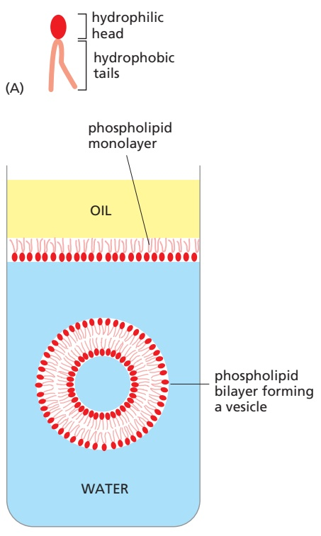
Figure 1-6，油在上、水在下；囊泡内腔也是水环境。 完整答案 A1 两亲性（amphiphilic）分子有亲水头和疏水烃链尾。油水界面可排成单层，头向水、尾向油；在全水环境，形状合适的磷脂把尾隐藏在两层之间，头分别朝外水和内腔水，形成双层并闭合为囊泡。不是任何两亲分子都必然形成同一种双层。
A2 分子化学性质促使有序聚集，说明自组装可把细胞合成的组分组织成所需结构。主膜脂疏水部分主要为烃链，但双层例子不能抹去中文古菌四醚单层膜的具体差异。
必答点 R1 亲水头疏水烃链；界面单层与水中双层两种朝向；形状条件和囊泡闭合。
R2 化学性质→自组装；烃链共同基础与古菌单层差异。
依据与来源 教材直接支持。
卡片ID：RB-CN01-0098
RB-CN01-0099 细胞内随机热运动怎样影响扩散和反应？它与ATP驱动的定向运动有什么不同？完整答案 A1 微米尺度下水分子与其他分子随机碰撞，使组分持续热运动，即布朗运动（Brownian motion）。Robert Brown于1827年在水中花粉材料观察到这类运动。随机运动推动扩散并影响反应物碰撞频率，因此静态显微图不代表细胞组分静止。
A2 许多定向过程使用ATP（adenosine triphosphate，三磷酸腺苷）水解，如离子泵送、胞内大组分运输和细胞移动；微观运动还须克服强黏滞阻力，驱动力解除后定向移动迅速停止，继续受随机热运动扰动，而不会如宏观物体那样持续惯性滑行。
必答点 R1 微米尺度碰撞、布朗运动、1827年观察；扩散、碰撞反应和静态图限制。
R2 ATP驱动过程范围；黏滞阻力、驱动力停止和热扰动；不持续滑行。
依据与来源 教材直接支持。
卡片ID：RB-CN01-0099
RB-CN01-0100 图1-7布朗棘轮怎样把随机膜波动转成前缘定向突出？是否每次突出都必须直接由马达牵拉？（需看图：三个时点膜间隙与肌动蛋白添加）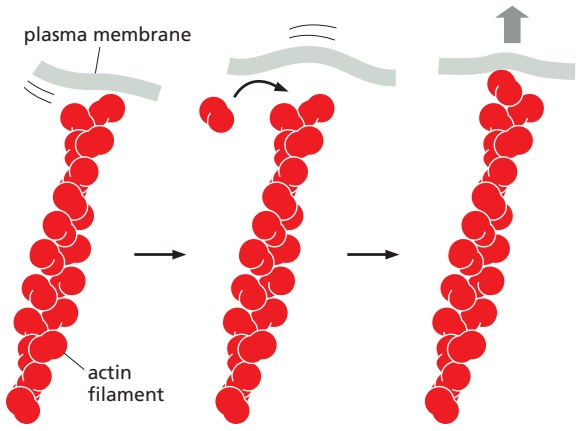
Figure 1-7，黑箭头为随机波动／单体加入的过程，灰箭头为净前突。 完整答案 A1 膜随机向前波动，暂时拉开与肌动蛋白丝的空隙；合适单体迅速加入丝端，延长的丝阻止膜退回原位。反复的波动、填隙和防回退，使随机运动偏向前突出，构成布朗棘轮（Brownian ratchet），参与动物细胞爬行。
A2 该步骤的直接机制是聚合捕获随机波动，不是马达蛋白每次都牵拉膜。不能把“不直接由马达驱动此步”扩展成整个细胞爬行或维持系统完全无需能量。
必答点 R1 膜前移产生空隙→聚合加单体→阻止回退→净前突完整因果，限定动物爬行例子。
R2 本步骤聚合与马达牵拉区别；局部机制不能外推整过程。
依据与来源 教材直接支持。
卡片ID：RB-CN01-0100
RB-CN01-0101 英文教材的生殖支原体最小基因组例子有多少基因和碱基对？为何不能把其数量直接当作所有自由生活细胞的最少要求？完整答案 A1 生殖支原体（Mycoplasma genitalium）在哺乳动物中寄生，环境预先提供许多所需小分子，但它仍需合成DNA（deoxyribonucleic acid，脱氧核糖核酸）、RNA（ribonucleic acid，核糖核酸）和蛋白。第7版举525个基因、580070 bp，多数基因在其条件下必需；约500个基因的标题是数量级概括，不能抹去寄生、营养环境及具体物种。
A2 中文第5版用基因删除研究概括约400个基因，英文第7版描述具体物种525个基因，研究对象、条件与统计范围不同。两者都用于讨论细胞复杂性的下界，不构成一个脱离环境的普遍最少数。
必答点 R1 物种、寄生营养条件；仍须合成大分子；525、580070和多数必需的限定。
R2 约400与525的研究范围区别；不能建立统一普遍门槛。
依据与来源 教材直接支持。
卡片ID：RB-CN01-0101
RB-CN01-0102 图1-8的生殖支原体如何体现“基因虽少，基础生命装置仍占显著份额”？请读出图注的基因功能数及图尺。（需看图：电镜截面与0.2μm标尺）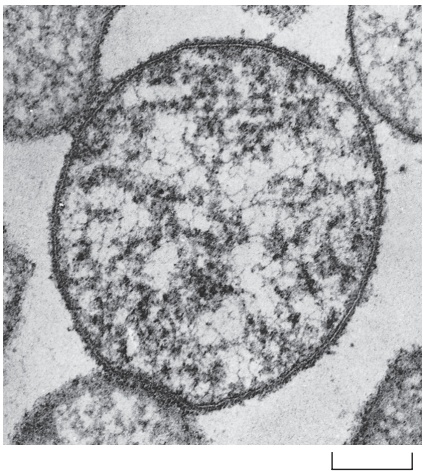
Figure 1-8，0.2μm标尺的文字在原图之外，依原图注补充于此说明。 完整答案 A1 图为生殖支原体的电镜截面，标尺0.2 μm；电镜使用电子而非光，常规条件下分辨能力高于常规光镜。525基因中43编码tRNA（transfer RNA，转运RNA）、rRNA（ribosomal RNA，核糖体RNA）等非蛋白RNA（ribonucleic acid，核糖核酸），482编码蛋白；其中154参与复制转录翻译等信息过程，98参与膜与表面结构，46参与跨膜运输，71参与能量转换及小分子合成降解。
必答点 R1 样本、电子成像、0.2μm；43／482与154／98／46／71的类别对应。
依据与来源 教材直接支持。
卡片ID：RB-CN01-0102
RB-CN01-0103 基于教材推导：怎样把580070个DNA碱基对换算为约145018字节的理想序列信息？这个换算省略了什么？完整答案 A1 每个位点有4种核苷酸，理想无压缩编码需要log₂4=2 bit。580070位点×2=1160140 bit，除以8 bit/byte得145017.5 byte，约145018 byte。双链互补，记住一条链即可确定另一条，故不把两条链再重复计一遍。
A2 此前提只计算理想核苷酸序列信息，未含文件头、基因注释、压缩、存储格式、染色质状态或细胞其余组分；与一章文字相当是教材类比，不表示一章书能完全重建细胞。
必答点 R1 四种状态→2bit；乘位点、除8、单位及舍入；互补链不重复计数。
R2 理想序列编码前提与未计信息；类比不等于完整细胞信息。
依据与来源 基于教材推导。
卡片ID：RB-CN01-0103
RB-CN01-0104 从营养输入到复制分裂，怎样整合膜、核酸、蛋白催化与能量解释细胞自复制？完整答案 A1 膜边界保持组成和选择性进出，营养提供构件与能量。DNA（deoxyribonucleic acid，脱氧核糖核酸）保存信息并以互补模板复制，转录产生RNA（ribonucleic acid，核糖核酸），mRNA（messenger RNA，信使RNA）经核糖体指导蛋白合成。蛋白提供反应催化和运输等功能，RNA还可直接发挥作用；自由能持续驱动有序合成，使装置和信息共同复制并随分裂传递。
A2 共享基础化学、遗传语言和信息执行方式支持共同祖先，同时不同的组成与调控产生形态、功能和生态差异。统一性不意味着所有细胞的每项速率、调控或营养要求相同。
必答点 R1 膜进出与保留、构件能量、DNA复制、RNA转录翻译、催化运输反馈及分裂遗传完整主线。
R2 共同基础与祖先证据；多样性及不绝对同一的限定。
依据与来源 教材直接支持。
卡片ID：RB-CN01-0104
RB-CN01-0105 英文导读为何提醒细胞研究不要只关注可见的动植物？基因组比较、模式生物和病毒研究各有什么用途？完整答案 A1 动植物只是生命多样性的一小部分，许多微小生物肉眼不可见。DNA（deoxyribonucleic acid，脱氧核糖核酸）序列比较能够量化亲缘并构建三域生命树；模式生物有助于集中研究基本分子机制。病毒是极丰富的生物实体，SARS-CoV-2等威胁促使研究集中；“最丰富的实体”与“最多的独立细胞生物”不是同一分类。
必答点 R1 可见偏差、序列亲缘、模式生物机制及病毒实体分类；SARS-CoV-2例子。
依据与来源 教材直接支持。
卡片ID：RB-CN01-0105
RB-CN01-0106 DNA测序为何改变了对全球生命多样性的认识？微生物的生境与过去的观察偏差是什么？完整答案 A1 生命不仅见于陆地、海洋和光照温带，也有深海、火山热泥、南极冰下及地下数公里生境。很多微生物体小、难获取或难培养，过去较易注意致病或腐木者，并受大型陆生动物视角影响；快速DNA（deoxyribonucleic acid，脱氧核糖核酸）测序等分子分析减少这种偏差。
A2 DNA为通用比较语言，可据序列描述、分类和比较生物并定位生命树亲缘。过去生物活动还直接或间接形成富氧大气、煤石油、铁矿及白垩石灰岩大理岩等地质结果，说明生命既适应环境也长期塑造环境。
必答点 R1 四类极端生境、微小难采难培养、致病腐木注意偏差及测序改进。
R2 序列比较→描述分类亲缘；大气能源矿物地质结果及生命塑造环境。
依据与来源 教材直接支持。
卡片ID：RB-CN01-0106
RB-CN01-0107 图6-76的真核翻译如何在终止密码子处结束？说明释放因子、GTP、水和核糖体再利用的作用。（需看图：A/P/E位点、UAG及肽链释放）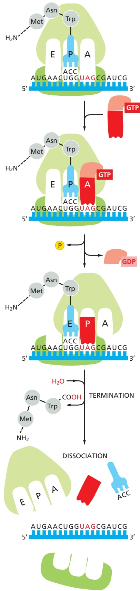
Figure 6-76，指定英文教材的真核终止示意；不外推所有原核释放因子均为相同两亚基装置。 完整答案 A1 图中mRNA（messenger RNA，信使RNA）沿5′→3′排出AUG、AAC、UGG、UAG，已合成Met—Asn—Trp即甲硫氨酸—天冬酰胺—色氨酸；UAG进入A位点后没有正常携氨基酸tRNA（transfer RNA，转运RNA）接续。两亚基释放因子结合A位点终止信号，其形状与电荷分布类似tRNA，图示结合后伴随GTP（guanosine triphosphate，鸟苷三磷酸）水解和因子组分变化。 图示GTP水解成GDP（guanosine diphosphate，鸟苷二磷酸）和无机磷酸（Pi），带GDP的释放因子组分离开；未标注组分不自行赋名。
A2 释放因子使核糖体肽基转移酶催化水而非氨基酸加入，水解肽链与P位点tRNA的连接，释放肽链羧基端。随后mRNA、tRNA、因子和大小亚基解离，亚基可重新组装用于下一轮翻译。图中的水参与断开酯连接，不能把释放写成再增加一个氨基酸。
必答点 R1 mRNA和肽方向、UAG及A位点；两亚基释放因子，不是终止tRNA；GTP相关步骤按本图范围。 图示GTP→GDP＋Pi及带GDP组分离开；不凭未标注图像自行命名该组分。
R2 水代替氨基酸、肽—tRNA水解与羧基端释放；解离及亚基再利用完整因果。
依据与来源 教材直接支持。
卡片ID：RB-CN01-0107
RB-CN01-0108 为什么传统形态分类和实验室培养不足以建立完整生命树？基因组与核糖体RNA比较怎样改进亲缘关系判断？完整答案 A1 传统分类依外形共同特征推断亲缘：鱼与人的眼、颌、脊柱和脑支持相对蚯蚓更近的关系，玫瑰与苹果树相对草更接近；达尔文把这些特征与化石联系到共同祖先及谱系分叉。但真菌与植物、动物谁更近，或外形相似的微生物怎样分群，仅凭外形常难判断。
A2 土壤、海洋和口腔的环境DNA（deoxyribonucleic acid，脱氧核糖核酸）（environmental DNA）测序显示，绝大多数微生物难以用通常实验室方法培养；它们可能依赖复杂生态系统，离开自然环境就难以存活。因而只研究培养成功的种类会低估生命多样性，深地壳及极端海洋环境中的许多生命直到测序才被认识。
A3 基因组是可由计算机比较的核苷酸序列，长期积累的随机变化使序列差异提供定量亲缘信息。跨远缘类群必须比较能够识别为同源的共同片段；各细胞都用核糖体（ribosome）翻译，核心核糖体RNA（ribonucleic acid，核糖核酸）（ribosomal RNA，rRNA（ribosomal RNA，核糖体RNA））既保守又有可比较差异，越相似通常表示分离越近。先用它建立粗略树，再比较其他DNA精细分辨近缘种。
必答点 R1 共同特征—共同祖先—分叉的逻辑；两组例子；远缘或相似微生物的形态局限。
R2 培养偏倚；环境DNA揭示未培养类群；生态依赖与失去自然环境的限制。
R3 可比较的同源片段；保守又有差异的rRNA；相似度与较近分离；粗树后用更多DNA细化。
依据与来源 教材直接支持。
卡片ID：RB-CN01-0108
RB-CN01-0109 读图1-9：这幅全球生命树怎样表示基因组差异、三域关系与未培养类群？它对细菌多样性和动物地位支持什么结论？（需看图：分支长度、三域括号及环境测序标注）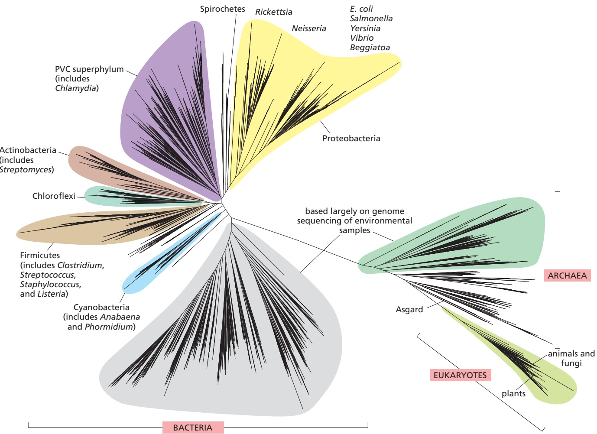
英文图1-9原图；分支长度表示基因组差异。 完整答案 A1 图1-9按共同可识别基因的比较建立生命树：分支长度与基因组差异成比例，不是直接的年代刻度，也不是生物量。细菌（Bacteria）、古菌（Archaea）与真核生物（Eukaryotes）用括号区分；图中真核分支接近古菌，并标出阿斯加德古菌（Asgard），与古菌—真核亲缘较近相符。
A2 图中大量分支主要根据环境样本的基因组测序建立，未培养不等于不存在。细菌拥有最大的基因组多样性，符合其几乎占据所有生态位；增加新类群还带来命名挑战。动物只占真核分支的一小部分，熟悉或体型大的生物并不代表演化多样性的主体。
必答点 R1 长度含义及非时间、生物量；三域；古菌与真核较近、Asgard位置。
R2 环境测序类群；细菌最大基因组多样性与广泛生态位；命名挑战；动物仅小分支。
依据与来源 教材直接支持。
卡片ID：RB-CN01-0109
RB-CN01-0110 回忆全球生命树的主要细菌类群：写出PVC、放线菌、绿弯菌、厚壁菌、蓝细菌的中英名称及教材代表，解释环境测序分支的意义。（配图复核：图1-9细菌扇区）完整答案 A1 图中有PVC超门（PVC superphylum，含衣原体属Chlamydia）、放线菌类群（Actinobacteria，含链霉菌属Streptomyces）、绿弯菌类群（Chloroflexi）和厚壁菌类群（Firmicutes，列梭菌属Clostridium、链球菌属Streptococcus、葡萄球菌属Staphylococcus、李斯特菌属Listeria）。这些是图中分支标注及代表，不是所有细菌的穷尽清单。
A2 蓝细菌（Cyanobacteria）分支列鱼腥藻属（Anabaena）与席藻属（Phormidium）。图中还有很大的灰色及绿色扇区，注释强调它们主要由环境样本基因组测序认识；不能因没有常见属名而把这些分支忽略。
必答点 R1 PVC—Chlamydia；Actinobacteria—Streptomyces；Chloroflexi；Firmicutes四代表；非全部类群清单。
R2 蓝细菌两属；未培养环境测序分支也是生命树组成。
英文图1-9；颜色用于区分图中分支，不表示统一功能等级。 依据与来源 教材直接支持。
卡片ID：RB-CN01-0110
RB-CN01-0111 回忆全球生命树：螺旋体、立克次体、奈瑟菌、变形菌各怎样与英文名及图示代表对应？真核扇区列哪些对象，Asgard属于哪个域？（配图复核：图1-9）完整答案 A1 细菌区标出螺旋体（Spirochetes）、立克次体属（Rickettsia）、奈瑟菌属（Neisseria）及变形菌类群（Proteobacteria）。变形菌扇区所列代表为大肠杆菌（E. coli）、沙门菌属（Salmonella）、耶尔森菌属（Yersinia）、弧菌属（Vibrio）和贝日阿托菌属（Beggiatoa）。应把代表与其引线分支对应，不能把排列相邻误读成相同功能。
A2 真核扇区标出植物（plants）与动物和真菌（animals and fungi）；它们是全树末端的一小部分。图中Asgard位于古菌相关分支，不能归入细菌或直接当成现生动物祖先。
必答点 R1 四标注；变形菌五代表；引线定位。
R2 植物与动物真菌的图示关系；Asgard属于古菌相关分支，图示亲缘不等于现生直接祖先。
英文图1-9原图。 依据与来源 教材直接支持。
卡片ID：RB-CN01-0111
RB-CN01-0112 真核生物的名称、核结构和基因规模有什么含义？为什么“真核生物”不能只等同于动植物？完整答案 A1 真核（eukaryote）的eu意为“真正／良好”，karyon意为“果核／细胞核”；关键特征是DNA（deoxyribonucleic acid，脱氧核糖核酸）置于膜围成的细胞核（nucleus）中，这种光镜可识别特征很早用于分类。原核生物（prokaryotes）包括细菌与古菌；真核细胞通常更大，具有多种膜性细胞器和更大基因组。
A2 教材举人和珊瑚通常超过20,000个基因，而典型细菌与古菌约4,000—6,000个；这是对象特定的通常规模。真核还包括真菌，如蘑菇和用于啤酒、面包的酵母，以及种类繁多的单细胞真核生物；该英文书主要讨论真核尤其动物细胞。
必答点 R1 词源；膜围成核；原核包括细菌古菌；通常更大而非绝对。
R2 人珊瑚与典型原核的估算范围；真菌与单细胞真核；书的重点对象。
依据与来源 教材直接支持。
卡片ID：RB-CN01-0112
RB-CN01-0113 为什么细菌外观简单而基因组高度多样？教材球形、杆形、极小型、螺旋形四组各有什么代表，尺寸有何典型与例外，四组是否按统一形状标准分类？（配图复核：图1-10）完整答案 A1 基因组生命树显示细菌的演化多样性超过真核，与细菌在地球演化史中更早出现相联系。多数细菌很小，肉眼看不见，常作为独立个体或松散群落生活；外观简单不等于内部随机无序，教材明确其内部仍高度组织化。
A2 图1-10列球形的链球菌（Streptococcus）、杆形的大肠杆菌（Escherichia coli）和沙门菌（Salmonella）、很小的支原体（Mycoplasma）和螺原体（Spiroplasma）、螺旋形的梅毒螺旋体（Treponema pallidum）。图上标尺是2μm；多数细菌线性尺度为数微米，但刺尾鱼肠内的Epulopiscium fishelsoni可长达600μm，说明不能把典型尺寸当成全部种类上限。 图题是“形状与大小”，极小型按尺寸、另三组按外形，故四列不是统一形状标准的正式分类。
必答点 R1 更早出现与较大基因组多样性；多数微小与常见生活组织；内部高度组织化。
R2 四类及六代表；2μm标尺与数μm典型；600μm巨型种、刺尾鱼肠内及非上限。 形状与尺寸是不同分组维度。
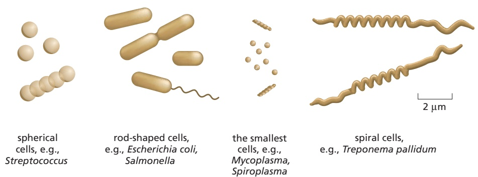
英文图1-10原图；典型形态与尺寸，不是所有细菌种类的上限。 依据与来源 教材直接支持。
卡片ID：RB-CN01-0113
RB-CN01-0114 依据图1-11解释典型细菌的内部组织、包膜及运动结构，并比较霍乱弧菌与大肠杆菌两幅图。（需看图：DNA、细胞质、核糖体、内外膜与鞭毛）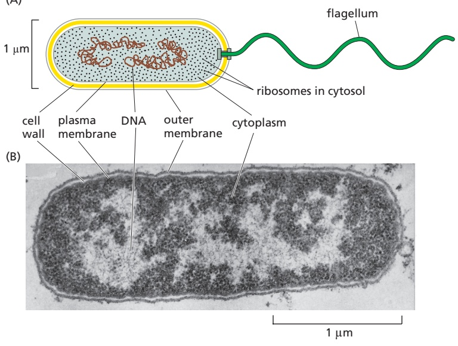
英文图1-11原图。A绘图，B纵切电镜；完整解释包膜、运动与切片证据的范围。 完整答案 A1 细胞质膜（plasma membrane）包围含DNA（deoxyribonucleic acid，脱氧核糖核酸）、RNA（ribonucleic acid，核糖核酸）、蛋白和小分子的细胞质（cytoplasm）；图中DNA位于膜内的核区，核糖体（ribosomes）散布在胞质溶胶（cytosol）中。细胞壁（cell wall）起保护作用；这两种革兰氏阴性菌（Gram-negative bacteria）还具有外膜（outer membrane），不能把外膜和质膜混为一层。图注以典型革兰氏阳性菌没有该外膜作对照。
A2 A是霍乱弧菌（Vibrio cholerae）绘图，端部一条螺旋鞭毛（flagellum）像螺旋桨旋转驱动运动；它可感染人小肠造成霍乱，教材称严重腹泻造成全球每年超过100,000人死亡，这一死亡数是该版本所述疾病负担，不能当作每年恒定数值。B为大肠杆菌纵切电镜，它属于正常肠道微生物群（intestinal microbiota）；其表面虽有多条鞭毛，本切面未显示。A、B各有1μm标尺，切片看不见结构不等于该细胞没有结构。
必答点 R1 质膜所围区室和分子；DNA核区、胞质核糖体；壁与内外膜；图中两者为革兰氏阴性及典型阳性对照。
R2 A与B对象、方式与1μm尺度；霍乱小肠感染与腹泻；端部旋转鞭毛；E.coli正常微生物群及切片未见鞭毛。 教材逾100,000人/年的死亡估计，保留版本与近似范围。
依据与来源 教材直接支持。
卡片ID：RB-CN01-0114
RB-CN01-0115 细菌能利用哪些不同物质和能量生活？如何从有机物利用、产氧光合作用及无机营养三个方面说明其生化多样性？完整答案 A1 不同细菌物种能利用糖、氨基酸乃至烃类作为食物，包括最简单烃甲烷（methane，CH₄）。这里说的是跨物种的能力范围，不能推断每一种细菌都能利用所有有机分子。
A2 另一些细菌以多种方式捕获光能，其中一些像植物一样光合作用并产氧；还有细菌从CO₂取得碳，并利用环境中的H₂、Fe²⁺、H₂S和元素硫等化学物质满足能量需要。碳来源与能量来源是两个需分别说明的维度，不能把“用CO₂”直接等同于“靠光”。
必答点 R1 糖、氨基酸、烃及甲烷；跨种能力而非单菌万能。
R2 仅一些光合细菌产氧；CO₂供碳与H₂、Fe²⁺、H₂S、硫的能量关联；碳源能量源分开。
依据与来源 教材直接支持。
卡片ID：RB-CN01-0115
RB-CN01-0116 细菌对人类健康、基础生物学和生产有什么不同影响？回答时如何保留教材疾病数据的适用范围？完整答案 A1 致病方面，中世纪腺鼠疫（bubonic plague）与结核病（tuberculosis）分别由特定细菌引起；教材估计前者曾造成欧洲约一半人口死亡，后者年死亡超过一百万人。这些是教材时期与历史估算，不是所有感染者的病死率或当前逐年实时统计。
A2 有益方面，肠道和皮肤有数千种细菌，往往对人有益；不能把细菌一概等同于病原体。研究相对简单细菌促进了对DNA（deoxyribonucleic acid，脱氧核糖核酸）复制、转录（transcription）和翻译（translation）的基本理解；遗传工程（genetic engineering）还使细菌充当生产人用药品、生物燃料及其他高价值化学物的小工厂。
必答点 R1 两疾病细菌病因；欧洲约半人口及结核年逾百万；历史、版本和非病死率范围。
R2 有益菌与病原并存；复制转录翻译的研究贡献；三类工程产品。
依据与来源 教材直接支持。
卡片ID：RB-CN01-0116
RB-CN01-0117 图1-12如何表明蓝细菌既有细胞分工，也有胞内膜？解释V、H、S与两幅图的观察尺度。（需看图：鱼腥藻链与席藻膜层）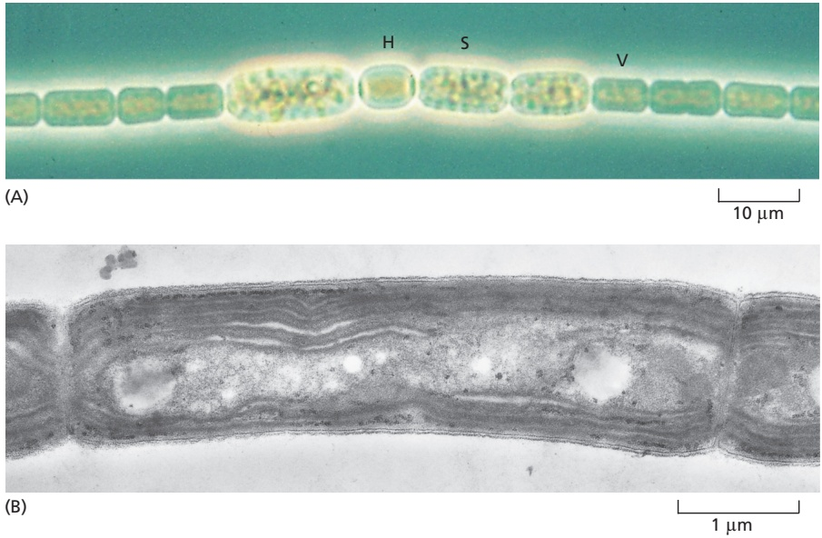
英文图1-12原图；比较光镜功能分工与电镜膜层证据。 完整答案 A1 A是柱孢鱼腥藻（Anabaena cylindrica）光镜图，细胞成链。V为主要光合细胞，捕获CO₂并将碳并入有机物；H为固氮特化细胞，将N₂中的氮固定；S为抵抗不利条件的孢子（spores）。图的10μm标尺对应细胞链，不应把图像显示的外形差异脱离各自功能。
A2 B为席藻（Phormidium laminosum）电镜，1μm标尺，显示进行光合作用的胞内膜层。两图共同表明：有些原核生物具有胞内膜，并能形成类似简单多细胞组织的群体；因此“原核没有真核式细胞器”不能推成“原核绝无胞内膜或细胞分工”。
必答点 R1 A光镜及10μm；V光合固碳、H固氮、S抗不利孢子；成链分工。
R2 B电镜及1μm；胞内膜是光合位置；部分原核成群并有分工；限定语。
依据与来源 教材直接支持。
卡片ID：RB-CN01-0117
RB-CN01-0118 古菌为何被称为认识最少的域？其形态、化学特征、环境分布与基因组亲缘分别说明什么？完整答案 A1 古菌（Archaea）的大多数成员主要由环境DNA（deoxyribonucleic acid，脱氧核糖核酸）测序识别，培养并近距离研究的种类相对少。已较熟悉的古菌像细菌一样小，缺少真核所特有的膜性细胞器，却在细胞壁化学、膜脂类型和可进行的生化反应范围上与细菌不同；相似外形不能代替分子比较。
A2 基因组比较显示古菌与真核比与细菌更近；有人据此提出把古菌和真核视为同一主要域、细菌为另一域的“两域”方案。这是教材介绍的提议，不是把常用三域分类偷偷改成定论。
A3 早期在火山、盐湖、酸性温泉和牛胃等特殊环境发现古菌，后来发现土壤、海水、人体皮肤也有；不能等同于“仅极端环境”。不同古菌化学能力多样，教材认为其在土壤海水中可能是主要生命形式，并在氮、碳循环中发挥重要作用。
必答点 R1 环境测序多、培养少；已知古菌小且无真核膜性细胞器；壁、脂质、反应范围差别。
R2 基因组亲缘；两域方案作为提议，区分三域用法。
R3 极端及普通环境例子；不限极端；“认为”而非精确丰度定论；氮碳循环。
依据与来源 教材直接支持。
卡片ID：RB-CN01-0118
RB-CN01-0119 图1-13的贝日阿托菌如何在黑暗中固定碳？显微图的黄色颗粒及6μm标尺怎样与其代谢联系？（需看图：细胞内硫沉积）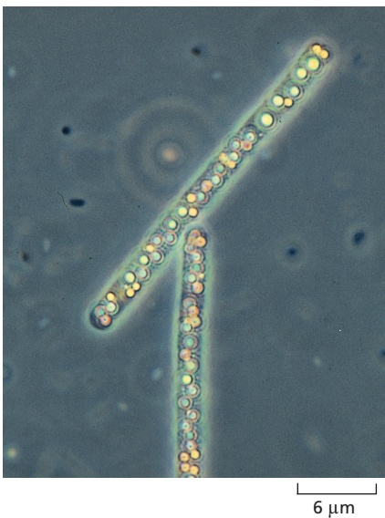
英文图1-13原图；颜色与代谢证据按图注解释。 完整答案 A1 贝日阿托菌（Beggiatoa）生活在含硫环境，通过氧化硫化氢（hydrogen sulfide，H₂S）获得能量，因此即使没有光，也能把无机碳固定为有机物。图中细胞内黄色沉积为硫；照片有6μm标尺。能量来自化学反应而非阳光，说明“固碳”与“光合”不能互换。
必答点 R1 含硫环境、氧化H₂S供能、暗处固碳；黄色硫及6μm；固碳不必光合。
依据与来源 教材直接支持。
卡片ID：RB-CN01-0119
RB-CN01-0120 生命的栖息范围为何不能只按肉眼可见环境理解？教材的陆地、海洋、植物、微生物和动物生物量分布有什么主要规律？完整答案 A1 生命几乎遍及地球，细菌和古菌甚至生活在地下数英里地壳及深海最不利环境；发现仍在继续。DNA（deoxyribonucleic acid，脱氧核糖核酸）测序及其他先进技术帮助认识分布，不能把尚未培养或难观察的栖息地视为空白。
A2 教材以碳质量估算：植物主要陆生，细菌和古菌主要位于土壤与地壳；陆地总生物量约为海洋100倍，但大多数动物生物量在海洋，二者并不矛盾。人类生物量约为可测野生动物总和10倍；人类继续增加，而野生动物下降主要受人类活动影响。
A3 人和其他动物仅占小部分生物量，却完全依赖其他生命形式供能、供物质。上述均为教材介绍的估算及对象范围，不能从生物量高低直接推出物种数或基因组多样性高低。
必答点 R1 几乎遍地、深地壳和深海；技术与持续发现。
R2 植物陆生、原核土壤地壳；陆海100倍与动物主要海洋；人类对可测野生动物10倍及趋势原因。
R3 动物对其他生命依赖；估算范围；生物量不直接等于物种或基因组多样性。
依据与来源 教材直接支持。
卡片ID：RB-CN01-0120
RB-CN01-0121 读图1-14：该图测量什么、面积表示什么？给出各类群估算值，并计算植物与动物的比例。（需看图：单位、全部扇区与面积）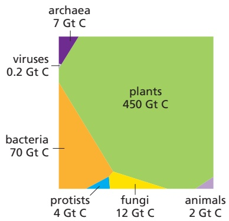
英文图1-14原图。题目要求解释数据及单位，比例计算单独标明推导。 完整答案 A1 这是全球生物量的碳质量估算，不是生物体湿重、个体数或种类数。单位Gt C为十亿公吨碳，1 Gt=10¹⁵g；总量约550 Gt C，各面积按类群生物量成比例。估算综合DNA（deoxyribonucleic acid，脱氧核糖核酸）测序、遥感（remote sensing）等技术。
A2 图列植物450、细菌70、真菌12、古菌7、原生生物4、动物2、病毒0.2 Gt C，均为近似值。病毒虽不是细胞，仍被此图纳入质量盘点；不能因在图上就推断病毒属于细胞生命三域。
A3 图注直接给出植物约80%、动物约0.4%。基于教材推导：用450/550≈81.8%和2/550≈0.364%可理解其取近似的方式；不要要求已取整的分项精确相加为550。面积最大说明质量贡献大，不代表物种或基因最多。
必答点 R1 碳质量及排除误读；Gt C与10¹⁵g；总量约550；面积成比例及技术。
R2 七类数值及单位；均近似；病毒在质量盘点不等于细胞域分类。
R3 约80%与0.4%；给出450/550及2/550的推导；近似数据不要求精确加总；面积结论范围。
依据与来源 教材直接支持；比例的除法结果为基于教材推导。
卡片ID：RB-CN01-0121
RB-CN01-0122 以获取自由能的方式比较有机营养、光能营养与无机营养：各用什么来源、有哪些代表、为何彼此依赖？完整答案 A1 有机营养（organotrophic）靠其他生命或其产生的有机化学物取得自由能，教材例举动物、真菌及多种肠道细菌；trophe词源为“食物”。这一维度讲能量获取，不能只背“异养”二字而丢掉来源。
A2 初级能量转换者（primary energy converters）直接从非生物环境获取能量：光能营养（phototrophic）利用阳光，无机营养（lithotrophic，教材“靠岩石取食”词源）利用环境中富能的无机化学体系，其化学状态远离平衡。两类为有机营养生命提供基础，后者无法脱离前者而存在。
A3 光能营养包含许多细菌以及藻类、植物，支撑我们常见的生命；大气氧是其中产氧生物合成活动的副产物。无机营养者常微小，居深海、地壳或其他难到达环境，肉眼不显眼却是生命世界及其历史的重要部分。
必答点 R1 有机物供自由能；动物真菌肠菌；trophe词源。
R2 初级转换；光与远离平衡无机体系；lithotrophic词源；依赖方向。
R3 光能营养代表及大气氧作用；无机营养者栖息与历史意义；不是所有光能营养都可由本句断定产氧。
依据与来源 教材直接支持。
卡片ID：RB-CN01-0122
RB-CN01-0123 无机营养生物是否都与已有生命无关？比较需氧与厌氧无机营养者的条件、氧来源及其生命史意义。完整答案 A1 一些无机营养者进行需氧反应（aerobic reactions），利用环境的分子氧；由于大气O₂最终来源于产氧光能营养者，在这个意义上它们依赖过去生命的产物，不能说所有无机营养都完全不依赖光能营养。
A2 另有许多无机营养者在很少或没有分子氧处厌氧（anaerobically）生活，环境类似地球早期尚未积累氧时。海底热液喷口是突出的例子，提示无日光、无大量氧也可有依赖地球化学能的生态系统；关于最早细胞采用这种生活方式，教材用“可能”而非已经重演确认。
必答点 R1 部分需氧；分子氧；氧来自过去产氧生命及间接依赖。
R2 少氧或无氧；早期氧积累前条件；热液例子；最初细胞供能方式为可能。
依据与来源 教材直接支持。
卡片ID：RB-CN01-0123
RB-CN01-0124 按图1-15说明海底热液喷口怎样形成化学和温度梯度，并解释微生物、无脊椎动物为何住在不同位置。（需看图：海水箭头、热玄武岩、烟囱及350℃到2—3℃梯度）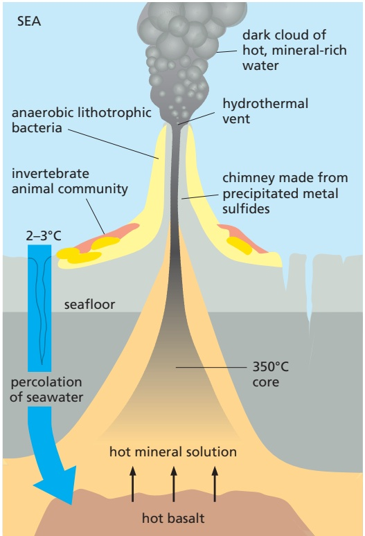
英文图1-15原图；下行海水箭头和上行热液箭头须分别解释。 完整答案 A1 喷口位于太平洋、 大西洋等海底新地壳因内部物质缓慢上涌而形成的扩张区。海水向下渗透，到热的玄武岩（basalt）附近受热并溶出矿物，再上升成为海底热喷流。典型混合物可含H₂S、H₂、CO、Mn²⁺、Fe²⁺、Ni²⁺、CH₄、NH₄⁺和含磷化合物，并非每个喷口必有同样配方。
A2 热液冷却时矿物沉淀，金属硫化物（metal sulfides）等形成通常数米高的烟囱。图示核心约350℃、图注称近核心可超过350℃，周围海水仅2—3℃；深海不是温度均匀场。不同耐温范围的生物占据不同邻域，图中厌氧无机营养细菌靠近喷口，依赖它们的无脊椎动物群落位于更冷周边。
必答点 R1 洋底扩张与玄武岩；下渗—加热溶出—上涌；九类典型成分及非固定配方。
R2 冷却沉淀与金属硫化物烟囱、数米；核心与周围数值及图注范围；耐温与生态位置。
依据与来源 教材直接支持。
卡片ID：RB-CN01-0124
RB-CN01-0125 图1-16的热液生态系统如何在没有阳光的海底供养动物？巨型管虫与硫氧化细菌的关系有何特别之处？（需看图：能量箭头和管虫照片）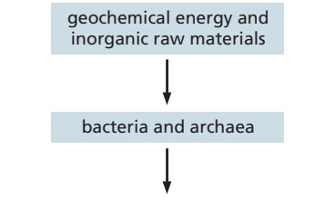
图1-16的能量流原始裁片；下端动物文字另由图注和题干提供，不拼造原图。 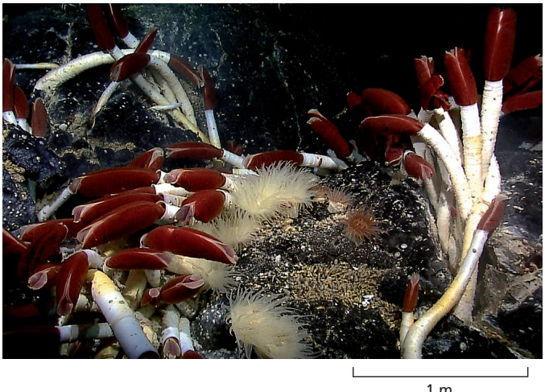
图1-16管虫原照片，1m标尺。 完整答案 A1 在约2,500m深的喷口附近，部分细菌和古菌直接使用地球化学能（geochemical energy）及无机原料生活，教材记其可处于约120℃条件；较冷处的蛤、贻贝和大型海虫等动物取食微生物。能量流是地球化学反应→微生物→动物，类似陆地植物—动物系统，但初级输入不是光。
A2 照片中的巨型管虫（Riftia pachyptila）可约2m长；不是简单吃掉细菌，而在专门器官中容纳大量共生硫氧化细菌，细菌用地球化学能供给宿主营养。管虫没有口、肠、肛门，教材认为它们由较常规动物二次适应热液生活。照片标尺为1m，不能把2m最大长度当成画面每只虫的实测值。
必答点 R1 2500m与部分微生物约120℃条件；化学能—细菌古菌—动物；蛤贻贝海虫；较冷位置与光能系统对比。
R2 2m及照片1m标尺；专门器官内共生、硫氧化供能；无口肠肛门；二次适应作为推测。
依据与来源 教材直接支持。
卡片ID：RB-CN01-0125
RB-CN01-0126 为什么有自由能仍不能直接用大气N₂和CO₂合成细胞？说明六种主要元素、固氮固碳及动物—植物—共生细菌的依赖链。完整答案 A1 DNA（deoxyribonucleic acid，脱氧核糖核酸）、RNA（ribonucleic acid，核糖核酸）和蛋白主要由氢、碳、氮、氧、硫、磷六元素组成。岩石、水和大气虽富含这些元素，其化学形式未必能直接并入生物分子；教材特别强调大气N₂和CO₂反应性低，把无机氮碳变为可用于后续合成的有机物需要大量自由能，这称固氮（nitrogen fixation）和固碳（carbon dioxide fixation）。
A2 很多细胞没有这些固定装置，依赖其他细胞。动物直接或间接依赖植物提供含碳、含氮有机物；植物虽能固定CO₂，却不能自己固定大气氮，其氮供应部分依赖固氮细菌。豆科植物（pea family）根瘤（root nodules）内的共生固氮菌为典型例子。
必答点 R1 六元素；存在不等于可直接使用；N₂和CO₂需供能；固定的定义与后续合成联系。
R2 缺固定装置的依赖；动物—植物—固氮细菌；植物固碳与不固N₂；豆科根瘤例子及部分供应限定。
依据与来源 教材直接支持。
卡片ID：RB-CN01-0126
RB-CN01-0127 生化互补如何促成共生？比较体外共生与内共生，并说明为什么内共生能够改变细胞自身的组成。完整答案 A1 不同细胞的基本生化需求和能力可互补，因而发展紧密联系。体外共生（ectosymbiosis）仍是分开的生物个体；内共生（endosymbiosis）则是伙伴共同形成一个复合细胞，有些关系演化到双方失去原有独立身份。不能仅把“相处有益”当作内共生的结构定义。
A2 永久共生还可能发生一方基因进入另一方基因组的水平转移（horizontal DNA（deoxyribonucleic acid，脱氧核糖核酸） transfer）；教材用后来讨论的线粒体和叶绿体来源说明这一联系。因此复合细胞可同时在代谢、结构及遗传组成上成为新的整体。
必答点 R1 互补起因；分开的生物与复合细胞；可能失去独立身份及定义边界。
R2 永久共生与基因转移；线粒体叶绿体联系；区分可能的遗传整合与仅空间共处。
依据与来源 教材直接支持。
卡片ID：RB-CN01-0127
RB-CN01-0128 随机突变怎样经自然选择形成基因组差异？比较有利、中性和严重有害改变的不同命运。完整答案 A1 储存或复制遗传信息中的偶然错误可改变核苷酸序列，形成突变（mutation）；因此分裂后的两个子细胞基因组常与亲代或彼此略有不同。极少数改变改善生存繁殖，更常见的是无显著影响，也有破坏关键蛋白或RNA（ribonucleic acid，核糖核酸）编码而严重受损的改变。
A2 有利改变因增加生存繁殖机会而倾向保留；中性改变可能保留也可能丢失，在资源竞争中哪一谱系成功有随机性；教材以严重损伤导致细胞死亡、无后代为淘汰例子。不断重复突变与自然选择，遗传规格改变，有时增加利用环境、竞争和繁殖的能力；不是突变为了适应而定向发生，也不是所有不利改变必然立刻致死。
必答点 R1 信息错误→序列变化→突变；子代差异；三类及相对可能性。
R2 三类命运；中性随机；严重致死例子的范围；随机突变与选择累积的因果链。
依据与来源 教材直接支持。
卡片ID：RB-CN01-0128
RB-CN01-0129 为什么基因组各段在进化中改变速度不同？这怎样决定建立远缘生命树时应选择什么序列？完整答案 A1 不编码蛋白或RNA（ribonucleic acid，核糖核酸）、也没有显著调控作用的DNA（deoxyribonucleic acid，脱氧核糖核酸）段，改变速度较少受功能约束，主要受随机错误频率限制；不能把所有非编码DNA都当成此类，因为限定还包括“无显著调控作用”。
A2 高度优化且必需的蛋白或RNA基因不易改变，错误常使细胞失能、被淘汰，所以高度保守（highly conserved）。超过35亿年的演化使许多序列变得难以识别，最保守的基因仍可在各生物中识别；跨远缘谱系追溯亲缘就需用这些共同基因，例如与所有细胞蛋白合成有关的rRNA（ribosomal RNA，核糖体RNA）。
必答点 R1 非蛋白RNA编码且无显著调控；随机错误限制；非全部非编码区。
R2 必需功能→错误损害→淘汰→保守；35亿年以上；远缘比较选可识别共同序列及rRNA理由。
依据与来源 教材直接支持。
卡片ID：RB-CN01-0129
RB-CN01-0130 按图1-17的可读图注，怎样用三域的小亚基rRNA基因比对支持共同起源？红线、黑点及人序列重复各代表什么？完整答案 A1 图注描述的是两种主要rRNA（ribosomal RNA，核糖体RNA）中较小一种的基因片段，完整rRNA依物种约1,500—1,900个核苷酸。比较古菌Methanococcus jannaschii、细菌大肠杆菌（Escherichia coli）和真核人（Homo sapiens）的对应片段；三域仍有明显相似，支持它们保留最后共同祖先以来的遗传信息。
A2 图注称红色竖线标相同核苷酸位置，人序列在底部再列一次以便看三组两两比较；大肠杆菌序列中部黑点是一个缺口，可由细菌谱系删除或其他两谱系插入造成，单凭该标记不能判定事件方向。本批能确认这些图注解释，但原始比对图缺失，OCR碱基串已乱码，具体位点和碱基不能声称核对完成。
必答点 R1 比较对象三域及对应同源片段；完整rRNA1500—1900核苷酸、依物种；相似支持共同起源。
R2 红线、重复人序列和三对比较；黑点两个可能来源而非只认删除；原图缺失限制。
依据与来源 教材直接支持。
卡片ID：RB-CN01-0130
RB-CN01-0131 新基因为什么仍以已有DNA为原料？按图1-18解释四种遗传创新，区别水平转移和亲代传子代。（需看图：原序列到新序列的变化）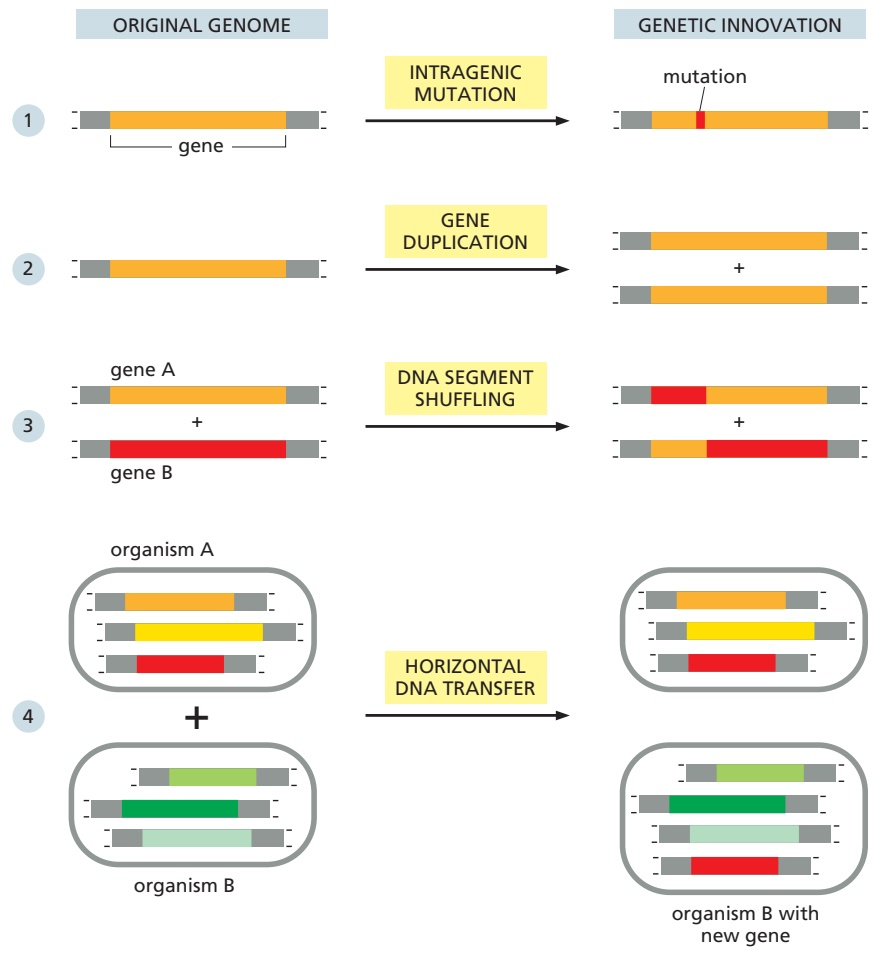
英文图1-18原图；灰色为示意的其他DNA，彩色片段用于追踪来源，不当成分子真实颜色。 完整答案 A1 教材说自然演化没有凭空制造很长随机新DNA（deoxyribonucleic acid，脱氧核糖核酸）的机制，创新利用已有序列。基因内突变（intragenic mutation）通过复制、修复错误等随机改变已有基因；基因重复（gene duplication）产生起初相同的两个拷贝，后来可分化。
A2 DNA片段重排（DNA segment shuffling）把不同原基因的片段断开并重接，形成混合基因；图中不同颜色标识来源。水平DNA转移（horizontal DNA transfer）把一个细胞的DNA带入另一个细胞基因组，可跨物种；图中B因此获得A来源的新基因。它不同于亲代把遗传信息传给后代的垂直传递（vertical transfer）。四类过程在序列中留下不同痕迹，教材称均有频繁发生的证据。
必答点 R1 已有DNA原料的语境；复制修复错误的基因内突变；重复先相同后分化。
R2 片段来自原不同基因并重接；A→B可跨种；水平与垂直关系；痕迹和四类发生证据。
依据与来源 教材直接支持。
卡片ID：RB-CN01-0131
RB-CN01-0132 普通分裂前的全基因组复制和导致基因家族的局部重复有什么不同？局部重复怎样产生同一基因组内功能不同的基因？完整答案 A1 正常细胞分裂复制整个基因组，目的是分配给两个子细胞；导致基因家族（gene family）的事件是偶然把部分基因组额外复制，原片段和复制片段同时留在一个细胞中。两种复制的保留位置和演化后果不同。
A2 两个基因拷贝分别积累突变，可专化为不同功能，并被后代继承；历经数百万年多轮重复和分化，单个祖先基因形成一组亲缘相关基因。枯草芽孢杆菌（Bacillus subtilis）是例子，其约47%基因有一个或更多明显亲缘基因，说明这是同一基因组内的家族关系。
必答点 R1 全基因组供两个子代；局部额外重复双方保留同一细胞；不同后果。
R2 重复—分别突变—功能专化—多轮家族；数百万年；B.subtilis47%为基因比例。
依据与来源 教材直接支持。
卡片ID：RB-CN01-0132
RB-CN01-0133 读图1-19：各扇区数的是基因还是家族？如何算出有家族关系基因的比例，并解释最大家族与ABC转运蛋白的意义？（需看图：五类基因计数）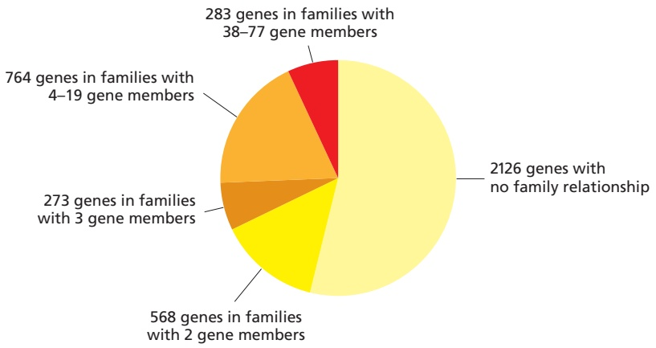
英文图1-19原图；饼图数字是基因数，范围是各家族成员规模。 完整答案 A1 扇区列的是各类基因数：无明显家族关系2,126个；处于2成员家族的基因568个，3成员家族273个，4—19成员家族764个，38—77成员家族283个。例如568不是568个家族，2成员家族对应568/2=284个家族，这一步是基于教材图的推导。
A2 基于教材推导，有关系基因为568+273+764+283=1,888，总数4,014，比例1,888/4,014≈47%，与正文一致。最大的家族有77个基因，编码不同ABC转运蛋白（ATP（adenosine triphosphate，三磷酸腺苷）-binding cassette transporters，ATP结合盒转运蛋白）；它们见于三域，结构不同于P型ATP酶，主要跨膜泵送小有机分子。最大家族的77不能直接与红扇区283互换。
必答点 R1 五类基因数；区别成员数、基因数和家族数；568/2的推导。
R2 1888/4014约47%及计算；最大77基因；ABC全称三域、主要小有机分子与不同结构；77与283区分。
依据与来源 教材直接支持；求和、比例及家族数为基于教材推导。
卡片ID：RB-CN01-0133
RB-CN01-0134 正交同源、旁系同源与同源基因分别怎样定义？按图1-20区分物种分化和基因重复，并说明功能相似能否写成绝对相同。（需看图：GA/GB与G1/G2的产生路径）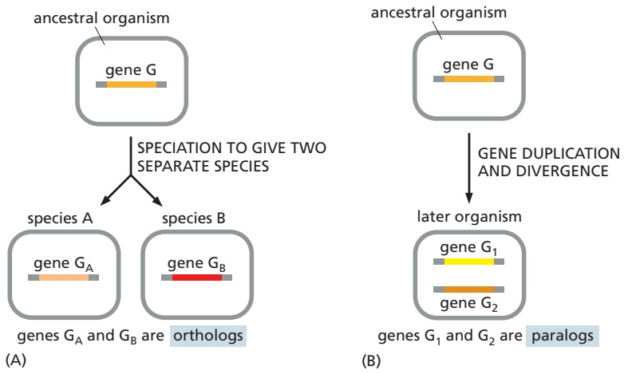
英文图1-20原图。必须解释箭头事件及其功能推断范围。 完整答案 A1 正交同源基因（orthologs）来自两个物种最近共同祖先中的同一基因，在物种分化后沿两条谱系改变；如人和黑猩猩分离后对应的祖先基因。图A祖先G经物种形成分别为A的G_A和B的G_B，其功能往往仍对应。
A2 旁系同源基因（paralogs）来自同一基因组中的重复事件，图B祖先G重复为同一后代生物内G₁、G₂，之后往往功能分化。两者都属同源基因（homologs），因为有共同来源。“往往”不是一定：仅有亲缘序列不能保证功能完全相同，尤其重复后的专化需要保留。
必答点 R1 共同祖先同一基因；物种分叉；人黑猩猩例子；A路径及通常对应功能。
R2 重复事件、同基因组G1 G2及常见功能分化；homologs涵盖两者；非绝对功能同一。
依据与来源 教材直接支持。
卡片ID：RB-CN01-0134
RB-CN01-0135 怎样根据新基因的序列推测功能？解释数据库比较、实验已知同源基因的作用和推断的限度。完整答案 A1 先确定新基因的核苷酸序列，再在大型数据库搜索亲缘序列；若其中同源基因已在模式生物（model organism）等对象中经实验确定功能，可据序列—功能关系推测新基因具有相似作用。这样可由完整基因组序列推知许多生物学特征，也能识别其有、无哪些基因。
A2 教材说“经常可以很好推测”，不是把数据库相似当作当前基因已被实验证明；正交、旁系关系及重复后分化影响可靠性。强序列家族相似还可支持共有祖先基因经重复与分化，但祖先是否拥有某基因须进一步考虑丢失与水平转移。
必答点 R1 确定序列→数据库搜索→实验已知同源→相似功能推测；基因组存在缺失信息。
R2 经常、推测与实验确认区别；同源关系和分化限制；祖先推断还受丢失水平转移影响。
依据与来源 教材直接支持。
卡片ID：RB-CN01-0135
RB-CN01-0136 用三域共有基因重建最后共同祖先有哪些困难？“264个保守家族”是怎样取得的、能否视为完整祖先基因组？完整答案 A1 困难有三类：有些物种丢失祖先基因，使“现在没有”不等于“祖先没有”；基因可经跨物种甚至远缘的水平转移得到，使“现在共有”不必都源于该祖先；20—30亿年变化还可让原共有基因失去可识别相似。细菌古菌的谱系特异丢失与水平转移尤其重要。
A2 因此很难甚至不可能确定完整祖先基因集。一种粗略方法统计在三域多个、但不必所有物种中有代表的家族，得到264个古老保守家族，按最清楚成员赋功能；最多属于翻译与氨基酸代谢运输。它只是现代生命共同继承的粗略轮廓，不能把264当成最后共同祖先总基因数，或声称每个现生物种都有每个家族。
必答点 R1 丢失、水平转移、变异不可识别三因及推断方向；细菌古菌。
R2 多而非所有物种；264家族及赋功能依据；最多两类；仅粗略轮廓而非基因数或每种全有。
依据与来源 教材直接支持。
卡片ID：RB-CN01-0136
RB-CN01-0137 表1-1中“普遍共有”怎样操作性定义？涉及哪些代表生物，为什么必须读表注后再理解标题？完整答案 A1 这项分析要求家族在至少两个不同古菌Archaeoglobus fulgidus和Aeropyrum pernix、两个演化远的细菌大肠杆菌（Escherichia coli）及枯草芽孢杆菌（Bacillus subtilis）、一个真核酿酒酵母（Saccharomyces cerevisiae）的基因组中有代表。两古菌、两细菌、一真核是本分析的取样定义，不是“全世界每一个物种都检出”。
A2 数据来自教材所引1997、2003年的研究及COGs数据库；计数单位是功能分类的基因家族，不是单个基因、蛋白条数或当前物种数。表题必须与样本限制、历史资料及“粗略共有继承”一起解释。
必答点 R1 2古菌2细菌1真核、五种名称；操作定义与普遍绝对定义不同。
R2 历史研究和COGs；家族数单位；表题结合取样及粗略性。
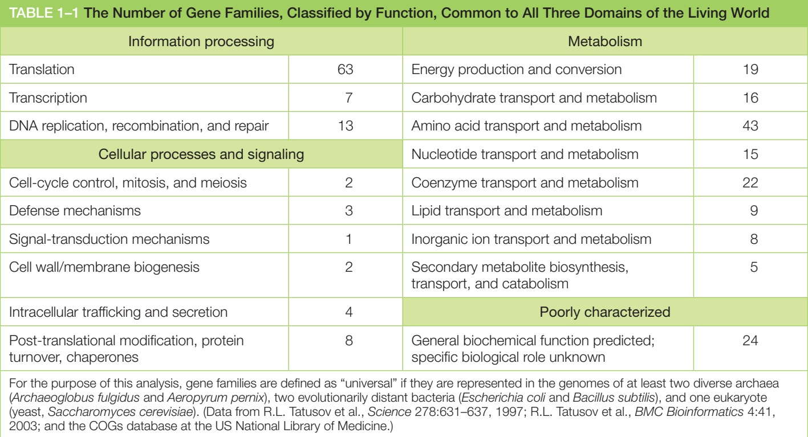
英文表1-1原表；核对标题和表下注释。 依据与来源 教材直接支持。
卡片ID：RB-CN01-0137
RB-CN01-0138 表1-1按什么功能维度分类共有基因家族？给出信息处理与细胞过程／信号部分的逐项计数，并解释它们不是每个细胞的基因总数。完整答案 A1 信息处理（information processing）三项为翻译（translation）63、转录（transcription）7、DNA（deoxyribonucleic acid，脱氧核糖核酸）复制／重组／修复（DNA replication, recombination and repair）13个家族。它们体现共享信息流机器，而数值按此项调查的家族定义计。
A2 细胞过程和信号（cellular processes and signaling）：细胞周期控制、有丝与减数分裂（cell-cycle control, mitosis and meiosis）2；防御机制（defense mechanisms）3；信号转导（signal-transduction mechanisms）1；细胞壁／膜形成（cell wall/membrane biogenesis）2；胞内运输与分泌（intracellular trafficking and secretion）4；翻译后修饰、蛋白周转和伴侣（post-translational modification, protein turnover, chaperones）8个家族。类别名是调查的功能归类，不能由“有丝分裂”字样推出细菌也进行真核有丝分裂。
必答点 R1 统一家族单位；翻译63、转录7、复制重组修复13及信息处理维度。
R2 六类及2、3、1、2、4、8；功能归类标签不等于各域进行同一完整过程。
英文表1-1；各数值为家族数。 依据与来源 教材直接支持。
卡片ID：RB-CN01-0138
RB-CN01-0139 表1-1的代谢与功能尚不清楚部分包含哪些项目和计数？哪些共有功能最多，哪些仅能推测一般生化作用？完整答案 A1 代谢（metabolism）部分：能量产生转换（energy production and conversion）19、糖运输代谢（carbohydrate transport and metabolism）16、氨基酸运输代谢（amino acid transport and metabolism）43、核苷酸运输代谢（nucleotide transport and metabolism）15、辅酶运输代谢（coenzyme transport and metabolism）22个家族。
A2 另有脂质运输代谢（lipid transport and metabolism）9、无机离子运输代谢（inorganic ion transport and metabolism）8、次级代谢物合成运输分解（secondary metabolite biosynthesis, transport and catabolism）5个家族。功能了解不足（poorly characterized）有24个，仅能预测一般生化功能而具体生物学角色未知。全部表中翻译63最多，其次氨基酸43；“共有”不等于每一家的具体作用都已实验确定。
必答点 R1 五类及19、16、43、15、22；均家族数。
R2 三类9、8、5；24一般功能可推测但具体未知；63和43最多及证据范围。
英文表1-1原表；功能未知也是必须保留的条件。 依据与来源 教材直接支持。
卡片ID：RB-CN01-0139
RB-CN01-0140 真核细胞的“细胞器”是否都由膜包围？从大小、区室化、细胞骨架和单／多细胞组织解释真核的一般特征。完整答案 A1 真核细胞通常比典型原核线性尺寸大10—30倍、体积大1,000—10,000倍，基因组也更大更复杂。这些是典型比较，不对每个物种强制成立。细胞器（organelles）既包括不同组成和功能的膜封闭区室，也包括无膜大型大分子集合，不能以“有膜”作为所有细胞器的唯一条件。
A2 细胞骨架（cytoskeleton）的蛋白丝及其结合蛋白形成支架、绳索和马达网络，赋机械强度，并在分裂时重排以分离已复制染色体。真核可独立单细胞生活，也组成植物、动物、真菌等复杂多细胞生物；“真核”不等于“多细胞”。
必答点 R1 典型10—30与1000—10000倍；基因组复杂；膜区室与无膜集合两类。
R2 骨架结合蛋白、支撑与重排分离染色体；两种组织形式及三类复杂多细胞。
依据与来源 教材直接支持。
卡片ID：RB-CN01-0140
RB-CN01-0141 结合图1-21解释核、核膜、核孔、染色体与核仁之间的结构功能关系，并界定真核细胞质。（需看图：核周边界、核孔和核内两类结构）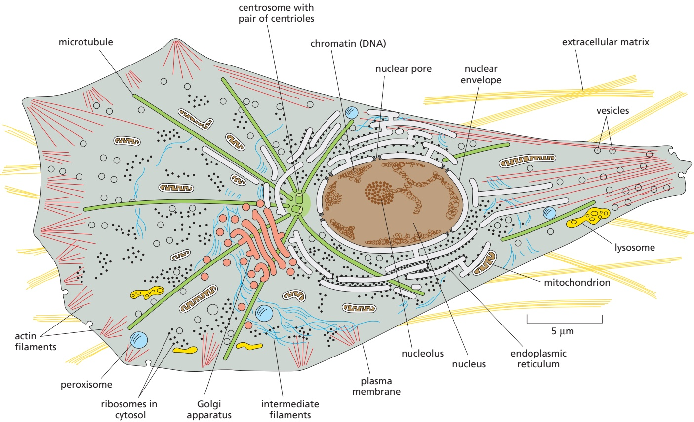
英文图1-21原图；核内结构与核周双层膜、孔须分别解释。 完整答案 A1 真核绝大部分DNA（deoxyribonucleic acid，脱氧核糖核酸）位于细胞核（nucleus），长DNA与蛋白包装成染色体（chromosomes）；只有在分裂前凝缩时染色体才在普通光镜下清楚可见。核膜（nuclear envelope）为双层膜，将核DNA与核外细胞质分开；真核细胞质指质膜与核之间的所有部分。
A2 核孔（nuclear pores）由蛋白复合物形成通道，介导核与细胞质间大分子双向交通。图中核内棕色纤维为染色质（chromatin，DNA），集中颗粒区为核仁（nucleolus），核仁是进行核糖体装配的无膜生物分子凝聚体（biomolecular condensate），与膜包围的细胞核层级不同。
必答点 R1 绝大部分而非全部DNA；DNA蛋白染色体与凝缩光镜；双层核膜；细胞质边界。
R2 核孔蛋白通道及双向大分子；染色质与核仁定位；核仁装配、无膜及不同层级。
依据与来源 教材直接支持。
卡片ID：RB-CN01-0141
RB-CN01-0142 图1-21用哪些颜色表示三类细胞骨架？中心体、质膜、胞外基质的位置怎样与支撑和运动联系，图示还省略了什么？（需看图：红绿蓝丝、中心粒和5μm标尺）英文图1-21原图；图中的“vesicles”是囊泡（vesicles），膜包围的运输载体另有完整机制题。 完整答案 A1 红色为肌动蛋白丝（actin filaments），绿色为微管（microtubules），蓝色为中间丝（intermediate filaments）；微管从含一对中心粒（centrioles）的中心体（centrosome）附近放射。它们及结合蛋白构成力学、运动网络，但颜色是该图编码，不是蛋白真实颜色或所有教材固定编码。
A2 质膜（plasma membrane）界定细胞，胞外基质（extracellular matrix）绘于膜外，不能认作胞内骨架。图是典型动物细胞截面、5μm标尺；真实胞内更拥挤。植物另有叶绿体及质膜外含纤维素的刚性壁，通常不能快速变形移动；不能把这张动物示意图当成所有真核细胞的完全相同结构。
必答点 R1 三类与三色；中心体一对中心粒及微管放射；结合蛋白网络；颜色仅本图。
R2 质膜与膜外ECM；动物截面5μm、真实拥挤；植物叶绿体纤维素壁与快速变形限制。
依据与来源 教材直接支持。
卡片ID：RB-CN01-0142
RB-CN01-0143 为何有些真核细胞可迅速变形并吞入大颗粒？图1-22怎样提供吞噬的结构证据？（需看图：中性粒细胞突起与正在分裂的细菌）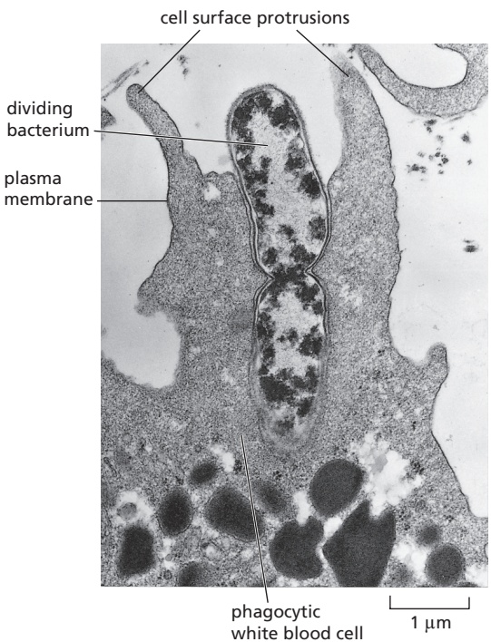
英文图1-22原电镜；解释可见证据，而非仅背“吞噬”。 完整答案 A1 动物细胞及部分自由生活单细胞真核生物缺少细菌古菌式的坚硬壁，细胞骨架可控制形状并驱动、引导运动；其中一些细胞伸出表面突起来包围细胞或小物体，称吞噬（phagocytosis）。这里不能推出所有真核或所有动物细胞都同样擅长吞噬。
A2 图1-22为哺乳动物吞噬白细胞中的中性粒细胞（neutrophil）电镜局部，1μm标尺。被吞细菌正分裂，白细胞质膜和两侧胞质突起围住细菌；仅显示正在包围目标的部分，不是完整白细胞或所有吞噬阶段连续影片。
必答点 R1 无坚硬壁与骨架动态→变形运动；突起包围→吞噬；部分对象限定。
R2 对象、电镜局部、1μm；分裂细菌；两侧膜突起包围；单切面证据限制。
依据与来源 教材直接支持。
卡片ID：RB-CN01-0143
RB-CN01-0144 内质网、高尔基体、溶酶体和过氧化物酶体各负责什么？如何按合成加工与细胞内处理的关系组织答案？完整答案 A1 内质网（endoplasmic reticulum，ER（endoplasmic reticulum，内质网））是最广泛的膜性细胞器，制造多数膜成分及送往胞外分泌的物质；高尔基体（Golgi apparatus）接收来自ER的物质，进一步修饰、包装，送往分泌或其他细胞区室。重点是ER合成→Golgi加工分配的联系，不只记两个名称。
A2 溶酶体（lysosomes）为较小、不规则形的胞内消化细胞器；过氧化物酶体（peroxisomes）是用过氧化氢使有毒分子失活的小囊状细胞器。本段概括其作用，详细生成／分解关系待对应章节；不能把两者都只写成“分解东西”而抹去消化和氧化处理的区别。
必答点 R1 ER膜及分泌物制造；Golgi接收修饰包装及两种去向；先后联系。
R2 溶酶体小而不规则、胞内消化；过氧化物酶体小囊状与过氧化氢参与毒物处理；不补未经读到详细机制。
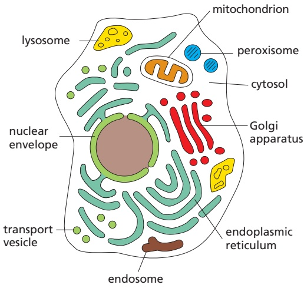
英文图1-24原图；颜色区分区室，不等同于图1-21的编码。 依据与来源 教材直接支持。
卡片ID：RB-CN01-0144
RB-CN01-0145 运输囊泡怎样把单膜细胞器和细胞表面联系起来？按图1-23比较胞吞、胞吐与早期胞内去向。（需看图：膜内陷、融合和内体）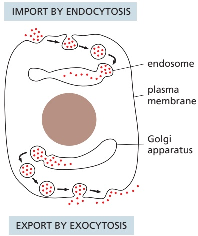
英文图1-23原图；解释箭头及膜变化。 完整答案 A1 许多单膜细胞器之间不断交换物质：运输囊泡（transport vesicles）从一个区室膜上出芽，携带物质，再与另一膜融合。核心是膜封闭载体保持区室间运输，并通过出芽与融合转换位置，不是物质自由穿过胞质直接进入另一膜腔。
A2 胞吞（endocytosis）：质膜内陷并形成囊泡，把胞外捕获物带入细胞，先送入单膜内体（endosomes）。胞吐（exocytosis）：胞内囊泡与质膜融合，把内容物释放胞外。图1-23上方箭头为摄入并送内体，下方从高尔基体相关囊泡向表面释放；红点用来追踪货物，两个方向不能倒置。
必答点 R1 单膜区室、持续交换；出芽—携带—融合的运输因果链。
R2 胞吞内陷→囊泡→内体；胞吐囊泡融合→外排；图的上下方向和红点货物。
依据与来源 教材直接支持。
卡片ID：RB-CN01-0145
RB-CN01-0146 除细胞核外哪些典型真核细胞器有双膜？比较线粒体和叶绿体的能量转换、反应原料、产物及存在范围。完整答案 A1 线粒体（mitochondria）与叶绿体（chloroplasts）也有双膜。线粒体摄入氧，把糖、脂等食物分子氧化释放的能量转成ATP（adenosine triphosphate，三磷酸腺苷），在所述有氧细胞中供应多数活动能量；“多数”并非全部ATP或任何条件下一律由线粒体产生。
A2 植物和藻类的叶绿体利用阳光，将大气CO₂和水合成为碳水化合物（carbohydrates），把富能产物交给宿主作为食物。植物藻类中有叶绿体不意味着每一类型细胞都含叶绿体；本段比较的是能进行光合的细胞器与氧化供能细胞器。
必答点 R1 双膜；氧、糖脂氧化→ATP；多数ATP及所述对象条件。
R2 植物藻类对象；阳光、CO₂、水→富能碳水化合物；供宿主；不能全细胞化。
依据与来源 教材直接支持。
卡片ID：RB-CN01-0146
RB-CN01-0147 真核细胞质、胞质溶胶及细胞器如何区分？为何核糖体和核仁说明无膜结构也能组织功能？英文图1-24原图；按边界比较细胞质与胞质溶胶。 完整答案 A1 真核细胞质（cytoplasm）是质膜和核之间的全部内容，包含膜性细胞器与其周围胞质溶胶（cytosol）。许多真核细胞的膜性细胞器大约占细胞质一半；剩余流体的胞质溶胶含核糖体并进行多数其他代谢反应，不能把cytosol译成整个cytoplasm，也不能把约一半当成普适精确比例。
A2 无膜结构通过让共同工作的多个组分保持近邻组织功能，生物分子凝聚体（biomolecular condensates）是教材所述方式，核仁装配核糖体为例。图1-24把线粒体、溶酶体、过氧化物酶体、高尔基体、内质网、内体、囊泡与核膜分别着色，周围区域是cytosol；膜性区室和无膜集合都能实现组成与功能的组织化。
必答点 R1 两术语边界；细胞质包括胞质溶胶和细胞器；许多细胞约一半、核糖体与多数代谢。
R2 组分近邻、凝聚体与核仁；图1-24全部膜区室定位；周围cytosol；两类组织方式。
依据与来源 教材直接支持。
卡片ID：RB-CN01-0147
RB-CN01-0148 线粒体内共生起源由哪些相互支持的证据说明？祖先宿主和被捕获细胞分别是什么，时间与“所有真核都有”的限定怎样表述？完整答案 A1 教材认为第一个真核细胞约20亿年前由古菌与细菌结合而起，在此之前地球已有超过15亿年的原核生活史。现生真核都含有、或在其演化史中曾含有线粒体；“曾含有”必须保留，不能说每一种现存真核细胞都一定看得见典型线粒体。
A2 线粒体与小细菌尺寸相近、均靠分裂增殖；线粒体有自己的DNA（deoxyribonucleic acid，脱氧核糖核酸）、类似细菌的基因、核糖体和翻译因子。这些一致性为其来自需氧细菌提供强证据：该细菌把食物电子交给氧以获取能量，被厌氧细胞捕获后与宿主在共同胞质内互相提供代谢支持。
A3 宿主为古菌的理由之一是现生古菌编码许多真核特征蛋白，尤其Asgard谱系的真核样基因较多。它支持祖先类型与演化联系，不能把今天培养到的Asgard细胞直接指认为当年的祖先。
必答点 R1 约20亿、之前原核逾15亿；都含或曾含；现存典型线粒体不能绝对化。
R2 尺寸、分裂、自有DNA和细菌样基因核糖体翻译因子；需氧捕获者与厌氧宿主；内共生代谢互补。
R3 古菌真核样蛋白与Asgard基因证据；祖先类型推断非现生直接祖先。
依据与来源 教材直接支持。
卡片ID：RB-CN01-0148
RB-CN01-0149 图1-25怎样显示线粒体的双膜及内膜褶皱？为什么内外膜形态不同与氧化供ATP的位置有关？（需看图：电镜与三维剖面）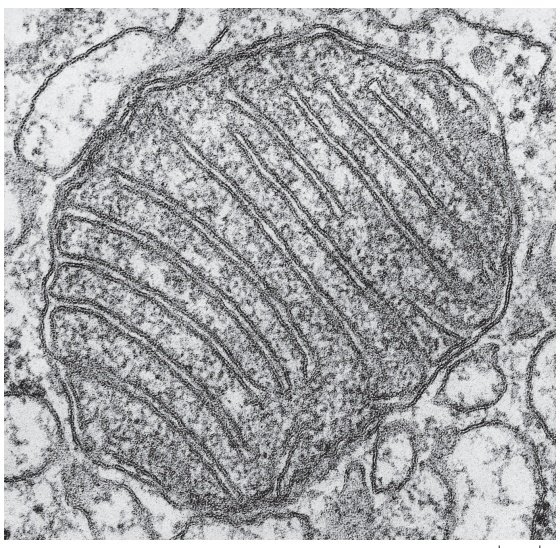
英文图1-25A电镜原始裁片；底部标尺缺失，不猜数值。 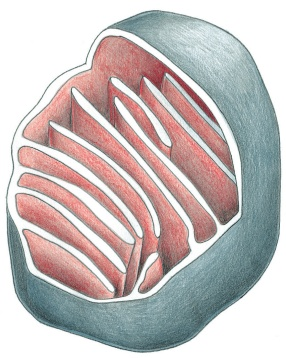
英文图1-25B原始三维剖面图。 完整答案 A1 A为线粒体电镜截面，可见外围膜和内部反复折叠的膜层；B为局部剖开的三维绘图。外膜（outer membrane）较光滑，内膜（inner membrane）高度曲折，不能把内部每条膜线认成一串独立细胞器。
A2 内膜容纳把食物氧化能转为ATP（adenosine triphosphate，三磷酸腺苷）的蛋白，因此结构与能量转换位置相联系；双膜、自有DNA（deoxyribonucleic acid，脱氧核糖核酸）及分裂与细菌来源的其他证据共同解释该细胞器，但一幅截面本身不能单独证明完整起源史。此提取电镜底部标尺文字已裁缺，具体尺度未作数值猜测。
必答点 R1 A电镜截面B剖面；外平滑内曲折；内部褶皱属于同一内膜系统。
R2 ATP生成蛋白位于内膜；结构功能联系；单图不独自证明起源；裁缺标尺不猜。
依据与来源 教材直接支持。
卡片ID：RB-CN01-0149
RB-CN01-0150 Asgard古菌培养研究怎样取得证据？说明样本、厌氧培养条件、时间、增殖速度、形态及共生关系，区分观察与演化推测。（需看图：细胞体、突起与体外共生伙伴）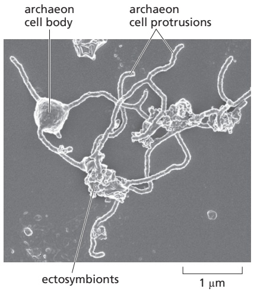
英文图1-26扫描电镜原图；其图注在来源文件前文，不以紧邻图片的顺序误判图号。 完整答案 A1 Asgard最先由海底DNA（deoxyribonucleic acid，脱氧核糖核酸）片段测序识别；研究者把深海沉积在模拟海底的厌氧生物反应器中维持超过2,000天，尝试多种培养条件、多年反复传代，经历约12年的分离过程才得到可培养古菌和其共生伙伴。这说明环境测序和培养是不同证据，培养困难不等于它不存在。
A2 扫描电镜（scanning electron microscopy）显示古菌细胞体伸出膜性泡状、分支和不分支长突起，1μm标尺；突起紧密联系两个体外共生者，一种细菌、另一种古菌。该厌氧古菌约20天倍增，教材对照大肠杆菌约半小时，都是所述培养情境而非各物种普适恒速。
A3 实际观察是形态、培养和体外共生；由这些及基因组亲缘提出祖先古菌可能包裹需氧细菌的模型，不是直接拍到20亿年前真核起源，也没有证明该现生古菌已经形成线粒体。
必答点 R1 海底DNA先识别；厌氧模拟反应器2000天以上；多条件传代约12年；证据区别。
R2 扫描电镜1μm；泡状与分支／不分支突起；一菌一古菌体外伙伴；20天对半小时、条件限定。
R3 观测与推测分开；可能祖先机制；未证明现生已成真核。
依据与来源 教材直接支持。
卡片ID：RB-CN01-0150
RB-CN01-0151 图1-27提出的真核起源模型怎样由体外共生走到线粒体、核与内质网？逐步说明膜和DNA的来源，并保留假说性质。（需看图：突起扩展融合与共生者进入胞质）英文图1-27原始模型图；箭头表示提出的演化路径，不能当成已观测过程。 完整答案 A1 模型起点是古代Asgard样古菌，其表面突起邻接一个需氧细菌体外共生者。突起扩大并围住细菌，彼此融合后将细菌封入宿主胞质；此时它仍有自己原本的膜，外面再包一层来自古菌质膜的封闭膜，成为内共生者。
A2 之后共生细菌从古菌来源的包围膜中逃逸到胞质溶胶，逐渐演化为线粒体，其DNA（deoxyribonucleic acid，脱氧核糖核酸）和膜来自被捕获细菌。模型还设想突起扩张融合产生的古菌内膜逐步形成核和单膜细胞器如ER（endoplasmic reticulum，内质网）；图中红色古菌DNA与橙色细菌DNA分别追踪两方来源。
A3 题目答案必须使用“可能模型、设想、逐步”等限定。现生Asgard形态和基因组关系提供线索，图中整个时序并非各阶段已经直接重现的定论。
必答点 R1 古菌与需氧体外伙伴；突起扩大包围融合；细菌自身膜与额外古菌来源膜区分。
R2 逃离宿主包围膜到cytosol；线粒体DNA膜细菌源；核ER宿主膜来源模型；两DNA颜色来源。
R3 全过程为可能模型；线索与逐阶段证明不同。
依据与来源 教材直接支持。
卡片ID：RB-CN01-0151
RB-CN01-0152 叶绿体起源与线粒体起源有哪些共同点和先后差异？图1-28的植物细胞与叶绿体内部膜怎样对应光合作用？（需看图：10μm植物细胞及双膜内部膜系统）英文图1-28原图；细胞尺度与一个细胞器的膜层分开解释。 完整答案 A1 叶绿体（chloroplasts）用阳光将CO₂和水变为碳水化合物，供植物与光合单细胞真核营养。它与线粒体均有双膜、自有环状基因组并通过分裂繁殖；教材认为叶绿体几乎确定来自被已有线粒体的古真核细胞捕获的光合细菌，可能经吞噬捕获。共同证据要与“宿主已真核、事件较后”的不同点一起记。 章末总结还指出叶绿体有自己的核糖体（ribosomes），与自己的DNA（deoxyribonucleic acid，脱氧核糖核酸）共同体现细菌内共生来源。
A2 A是从开花植物叶片分离的细胞光镜图，绿色体为叶绿体，10μm标尺；B是单叶绿体绘图，外、内包膜围住高度折叠的内部膜，内部膜含吸收光的叶绿素（chlorophyll）。含叶绿素的内部膜不能与叶绿体内包膜混为一层。
必答点 R1 阳光CO₂水→糖；双膜自有环状基因组分裂；光合细菌来源、宿主已有线粒体；吞噬是可能。 叶绿体自己的核糖体及DNA与细菌来源联系。
R2 A叶来源光镜与10μm；B外内包膜和内部光合膜；叶绿素吸光位置。
依据与来源 教材直接支持。
卡片ID：RB-CN01-0152
RB-CN01-0153 用“猎手、种植者、拾食者”的教材类比比较单细胞捕食真核、植物和真菌：营养方式如何与细胞壁、运动及细胞器联系？完整答案 A1 一些单细胞真核靠捕获、吞食其他细胞生活，可比作猎手；带叶绿体的植物细胞从继承的叶绿体获得营养，不需追逐猎物。植物虽有运动所需细胞骨架，却有保护性的坚硬壁，失去快速变形与吞噬其他细胞的能力，教材比作从捕猎转为种植。
A2 真菌（fungi）像动物一样有线粒体而无叶绿体，其坚硬外壁也限制快速移动和吞入细胞；它们利用其他细胞分泌或死后释放的养分，常向胞外分泌消化酶，再吸收产物，可比作拾食者。这里是常见营养策略比较，不把类比写成严格且无例外的全分类。
必答点 R1 捕食真核；叶绿体供养；有骨架但刚壁限制变形吞噬；类比仅解释所述生活方式。
R2 真菌线粒体无叶绿体和壁；分泌物／死后物质；胞外消化酶再利用；策略比较范围。
依据与来源 教材直接支持。
卡片ID：RB-CN01-0153
RB-CN01-0154 真核基因组为什么具有“混合来源”？以人的线粒体基因组数据解释细胞器基因减少与宿主核基因组之间的联系。完整答案 A1 真核遗传信息来自祖先厌氧古菌宿主与被捕获的细菌内共生者。大多数DNA（deoxyribonucleic acid，脱氧核糖核酸）在细胞核，少量留在线粒体及植物藻类叶绿体；把细胞器和核DNA分别测序，可看出细胞器基因组是相关细菌基因组的缩减版本。
A2 人线粒体基因组约16,569核苷酸对，编码13种蛋白和24种参与蛋白合成的RNA（ribonucleic acid，核糖核酸）。许多“细胞器中缺少”的基因并非从整个真核细胞丢失，而是转移到核DNA；核编码蛋白仍可在线粒体或叶绿体发挥必需作用，其序列保留细菌起源证据。
必答点 R1 古菌宿主与细菌混合来源；绝大多数核、少量细胞器；分别测序和缩减关系。
R2 16569bp、13蛋白、24RNA及功能；细胞器缺少不等于全细胞丢失；基因入核仍服务细胞器。
依据与来源 教材直接支持。
卡片ID：RB-CN01-0154
RB-CN01-0155 按图1-29整合三域谱系、两次内共生和植物动物真菌分化的先后：哪些箭头是谱系延续，哪些是细菌贡献？（需看图：时间向上及线粒体叶绿体横向贡献）英文图1-29原模型图；时间方向及两次共生贡献须分清。 完整答案 A1 图中时间从下向上。教材认为约35—38亿年前的最后共同祖先（last universal common ancestor，LUCA）分化出细菌及古菌谱系；较晚，厌氧古菌取得需氧细菌共生者，形成有线粒体的单细胞真核。普通向上分叉是谱系延续，标“mitochondria”的细菌跨接表示共生贡献，不能读成古菌凭自身突变独立生出全部线粒体成分。
A2 动物、真菌与植物线粒体基本相同，支持线粒体取得早于三谱系约15亿年前的分化；后来有线粒体的真核又捕获光合细菌，形成叶绿体并通向植物。图中非光合细菌、光合细菌、古菌仍各有延续分支；模型不是说所有细菌古菌都消失转为真核。
必答点 R1 时间向上、35—38亿年前LUCA；古菌加需氧菌→真核；分叉与共生跨接不同。
R2 共同线粒体支持早于三谱系分化；约15亿及较后叶绿体；剩余谱系仍延续；模型证据强度。
依据与来源 教材直接支持。
卡片ID：RB-CN01-0155
RB-CN01-0156 多数真核核基因组为何可比典型原核大得多？比较人的DNA总量、蛋白编码基因数和非蛋白编码比例，避免把“DNA多”等同于“基因同比增多”。完整答案 A1 自然选择似乎有利于小的线粒体基因组，但多数真核核基因组能够增大。教材提出可能的大型捕食细胞优势及细胞大小一般随基因组增大的关联；原因尚不是确定的单一因果定律。多数真核基因组比细菌古菌可大数百倍，但存在例外。
A2 人基因组约是典型大肠杆菌DNA（deoxyribonucleic acid，脱氧核糖核酸）核苷酸对数的700倍，蛋白编码基因仅约4.5倍；非蛋白编码部分人约98.5%、E.coli约11%。真核通常蛋白编码基因是细菌古菌3—8倍，非编码DNA常可多约1,000倍；这些不同量的比较与“全部DNA差距”不能互换。 因此典型E.coli多数DNA编码蛋白，而人多数DNA不编码蛋白；不能因基因组大就推蛋白编码比例高。
必答点 R1 线粒体与核基因组趋势不同；捕食大小优势为可能；相关非必然唯一因果；多数数百倍。
R2 700倍DNA对4.5倍蛋白基因；98.5%对11%；通常3—8及常1000非编码范围；分清量。 解释典型细菌多数编码、人多数不编码的判断。
依据与来源 教材直接支持。
卡片ID：RB-CN01-0156
RB-CN01-0157 图1-30的横轴、绿色条和黄色标记分别表示什么？为什么不能按图中DNA量给生物复杂性排等级？（需看图：对数坐标与各类群范围）英文图1-30原图；黄色代表与绿色范围要分开读。 完整答案 A1 横轴为每单倍体基因组（haploid genome）的核苷酸对数，从10⁵到10¹²，用对数尺度；一个单倍体就是一个基因组副本。人的有性繁殖多细胞体细胞通常二倍体（diploid），两个副本分别来自父母，不能把该轴值直接当成通常体细胞的双份DNA（deoxyribonucleic acid，脱氧核糖核酸）总量。
A2 绿色横条表示类群内基因组大小范围，黄色竖线是所标代表物种。近缘生物可DNA量差异很大而蛋白编码基因数相近；原生动物、植物藻类、两栖鱼类范围尤其宽，阿米巴等某些单细胞的DNA量可高于人，说明DNA量不等于多细胞性或复杂性等级。图示趋势不能给每个条端造不存在的精确数值。
必答点 R1 10⁵—10¹²对数轴；单倍体一份；通常二倍体与亲代来源；非体细胞总量。
R2 绿条范围黄标物种；近缘DNA变化与基因数；广范围及单细胞可大于人；非复杂性排序。
依据与来源 教材直接支持。
卡片ID：RB-CN01-0157
RB-CN01-0158 图1-30在九组基因组范围内标出哪些代表？怎样把每个代表与其类群对应，而不把代表值当成该类群共同常数？完整答案 A1 细菌（Bacteria）标大肠杆菌（E. coli）；古菌（Archaea）标盐杆菌属（Halobacterium sp.）；原生动物（Protozoans）标疟原虫（malarial parasite）和阿米巴（amoeba）；真菌（Fungi）标酿酒酵母（Saccharomyces cerevisiae）；植物、藻类（Plants, algae）标拟南芥（Arabidopsis）和小麦（wheat）。各黄线只是一个代表，绿条是整个类群范围。
A2 线虫（Nematode worms）标Caenorhabditis；甲壳类、昆虫（Crustaceans, insects）标果蝇（Drosophila）和虾（shrimp）；两栖类、鱼类（Amphibians, fishes）标斑马鱼（zebrafish）、蛙（frog）、蝾螈（newt）；哺乳、鸟、爬行类（Mammals, birds, reptiles）标人（human）。同一组的范围、单个代表、物种蛋白基因数是三项不同信息。
必答点 R1 五组与七代表；黄点非整组常数。
R2 四组与七代表；类群范围、物种代表和基因数分开。
英文图1-30原图。 依据与来源 教材直接支持。
卡片ID：RB-CN01-0158
RB-CN01-0159 表1-2的基因组大小和基因数各统计什么？复述大肠杆菌、酵母、线虫、拟南芥的配对数据，并解释两项脚注。完整答案 A1 两列分别是近似基因组核苷酸对数和近似蛋白编码基因数：大肠杆菌（Escherichia coli）4.6×10⁶对、4,300基因；酿酒酵母（Saccharomyces cerevisiae）12.5×10⁶对、6,600基因；秀丽隐杆线虫（Caenorhabditis elegans）100×10⁶对、20,000基因；拟南芥（Arabidopsis thaliana）135×10⁶对、27,000基因。不能把DNA（deoxyribonucleic acid，脱氧核糖核酸）对数当基因个数。
A2 脚注一：总DNA量包含数据库未呈现的高度重复非编码DNA的估计，不能仅按数据库已装配序列算。脚注二：还存在编码功能RNA（ribonucleic acid，核糖核酸）而不编码蛋白的基因，所以“蛋白编码基因数”不等于“所有基因数”。本表是指定版本近似盘点，不能伪称实时数据库数值。
必答点 R1 四对象、配对值、近似与单位；两列量纲不同。
R2 未呈现重复DNA也计入估计；非蛋白功能RNA基因；版本近似而非实时。
英文表1-2原表，配对数据和两项脚注都属于回忆目标。 依据与来源 教材直接支持。
卡片ID：RB-CN01-0159
RB-CN01-0160 表1-2中果蝇、斑马鱼、小鼠和人的DNA量与蛋白编码基因数怎样配对？这些数据如何说明DNA总量不按基因数同比变化？完整答案 A1 黑腹果蝇（Drosophila melanogaster）180×10⁶核苷酸对、14,000蛋白基因；斑马鱼（Danio rerio）1,400×10⁶对、26,000基因；小鼠（Mus musculus）2,800×10⁶对、20,000基因；人（Homo sapiens）3,100×10⁶对、20,000基因。均为教材近似值，RNA（ribonucleic acid，核糖核酸）基因另计。
A2 人和小鼠DNA（deoxyribonucleic acid，脱氧核糖核酸）量不同而蛋白编码基因都约20,000；拟南芥DNA远少于人却约27,000蛋白基因。因为大量DNA不直接编码蛋白，DNA总量、蛋白编码基因数和个体复杂性不能互相替代；这里按表中数值比较，不推出每个物种的全部调控复杂性已被这些数值决定。
必答点 R1 四对象双列值；近似、对数与基因数、RNA另计。
R2 人与鼠同基因数不同DNA；拟南芥反例；解释非蛋白DNA与结论边界。
英文表1-2；数据采用提供的第7版估计。 依据与来源 教材直接支持。
卡片ID：RB-CN01-0160
RB-CN01-0161 真核非蛋白编码DNA是否都无用？结合保留压力、河豚例子、调控DNA及多细胞发育说明教材的限定结论。完整答案 A1 教材把大量非蛋白编码DNA（deoxyribonucleic acid，脱氧核糖核酸）形容为可能没有必需功能的“junk”：若保持基因组小的选择压力不大，保留旧序列比筛除容易。这是对相当一部分序列的判断，不能泛化为全部非编码DNA无功能，也不能把“很可能”删成已经逐段证明。
A2 河豚（puffer fish）去掉大量非蛋白编码DNA，仍与有更多此类DNA的近缘种在结构、行为和适合度上相似；但其紧凑基因组中非蛋白编码DNA仍多于蛋白编码DNA。至少一部分非编码序列确定有重要作用，特别是控制基因何时、何处表达；复杂多细胞各类型不同功能尤其需精细调控。
必答点 R1 部分可能不必需；小型化压力和保留解释；概率词及非全部。
R2 河豚近缘比较及相似三个方面；紧凑仍非蛋白多；至少部分调控时间空间；多细胞调控需求。
依据与来源 教材直接支持。
卡片ID：RB-CN01-0161
RB-CN01-0162 同一个体的细胞为何有极不同形态和功能，却通常具有相同基因组？说明发育史、环境信号、选择性用基因和细胞间交流的完整联系。完整答案 A1 动物或植物的血、皮肤、骨、神经等细胞虽很不同，却都来自一个受精卵；除了很少例外，含同样的物种基因组副本。不能把“通常相同”写成每个成熟细胞必定含完整相同DNA（deoxyribonucleic acid，脱氧核糖核酸）。
A2 差异来自依据发育经历及胚胎环境线索选择性使用遗传指令：细胞接收信号，启用不同基因集合；每细胞基因组容纳整个多细胞体的信息，但当前只用一部分。细胞还主动向邻居交换信号，内在调控与位置相关信息相互作用，形成具有适当身份和空间排列的细胞群。
必答点 R1 共同受精卵；通常基因组相同；微小例外和对象限定。
R2 发育史／环境→信号→不同基因表达→差异；完整信息局部使用；主动邻居交流与空间图式。
依据与来源 教材直接支持。
卡片ID：RB-CN01-0162
RB-CN01-0163 图1-31怎样在相同尺度下比较人的神经细胞和中性粒细胞？这种形态差异为何不能直接解释为基因组完全不同？（需看图：两种细胞与25μm标尺）英文图1-31同尺度线图，25μm标尺。 完整答案 A1 图1-31把人的神经元（neuron）与中性粒细胞（neutrophil，一类白细胞）按同一尺度画出，标尺25μm。神经元有大范围伸展分支，中性粒细胞相对小而紧凑；不要因两者在纸上的占区差异，就忘了这里特意采用同尺度。
A2 两者作为同个人受精卵后代通常保留相同基因组；其差异在于选择性表达不同基因，以实现不同细胞功能。图示支持形态变化巨大，基因表达机制由正文说明；单凭线描图不能测出基因组是否相同。
必答点 R1 两对象、同尺度25μm；分支与紧凑的形态比较。
R2 通常同基因组与差异表达；形态图证据和正文遗传结论区别。
依据与来源 教材直接支持。
卡片ID：RB-CN01-0163
RB-CN01-0164 真核基因组怎样同时规定细胞“硬件”和使用程序？比较转录调节蛋白、调控DNA与非编码RNA的作用。完整答案 A1 很多真核基因编码调控其他基因活性的蛋白，其中多数转录调节因子（transcription regulators）直接或间接结合不同调控DNA（deoxyribonucleic acid，脱氧核糖核酸）序列，控制哪些基因表达和表达水平。调控蛋白、DNA作用位点与被调基因是不同层次，不能只写“DNA控制DNA”。
A2 真核基因组还产生不翻译成蛋白的非编码RNA（ribonucleic acid，核糖核酸）（noncoding RNA），以多种方式调控表达。扩大基因组既编码分子组成的“硬件”，也保留决定何时、何处和怎样使用它们的“软件”；这种程序与细胞信号、发育史共同构成多细胞差异化，而不是所有细胞同时制造所有编码产物。
必答点 R1 调控基因编码蛋白；多数转录调节因子直接或间接结合调控DNA；表达身份和水平；层次区别。
R2 ncRNA不翻译但调表达；硬件软件类比；时空调控和信号发育联系；非全部产物同时制造。
依据与来源 教材直接支持。
卡片ID：RB-CN01-0164
RB-CN01-0165 金鱼草图1-32怎样说明单个调控基因可改变发育身份？比较处理／正常对象、观察、机制解释及该例子的结论范围。（需看图：左侧叶状枝条与右侧花）英文图1-32原照片；左突变、右正常。 完整答案 A1 对象是金鱼草（snapdragon，Antirrhinum）。左侧为单个编码调控蛋白的基因发生突变的植株，原来长花的位置变成叶状枝条；右侧为正常植株，显示花。不是整株所有基因都改变，也不是普通营养不足引起花不开放的实验。
A2 调控蛋白改变后，细胞采用适合另一位置的身份，说明调控基因可改变一系列基因的使用程序，导致器官层级变化。它支持遗传调控与空间发育身份的关系；本图注未交代具体基因名、构建技术或表达测定，不能自填实验细节。
必答点 R1 对象与左突变右正常；花位置长叶状枝；突变单调控基因的限定。
R2 调控蛋白改变→错误位置身份→器官改变；支持表达程序及空间关系；未提供方法不编造。
依据与来源 教材直接支持。
卡片ID：RB-CN01-0165
RB-CN01-0166 单细胞真核生物的结构和行为为什么不能用“简单”概括？图1-33的A—G分别属什么类型，比较尺度要注意什么？（需看图：七种线图和每种10μm标尺）英文图1-33原图；各个标尺独立使用。 完整答案 A1 单细胞真核既有猎食者，也有光合者和拾食者。其精细结构可包括感觉刚毛、光感受器、摆动纤毛、腿样附属物、摄食口部、刺射器及肌肉样收缩束；一个细胞也可具有可比多细胞生物的行为复杂性。这不是说图中每个种都有所有列举结构。
A2 A、C、G是纤毛虫（ciliates）；B为太阳虫（heliozoan），D阿米巴（amoeba），E甲藻（dinoflagellate），F裸藻类（euglenoid）。各图绘制比例不同，但每个标尺都代表10μm；必须各用自己的尺，不能直接按纸上大小排序实际细胞尺寸。
必答点 R1 三生活策略；七类结构；复杂行为；例举是跨种范围。
R2 七字母类别对应；不同图比例但各尺10μm；逐图换算而非纸上尺寸。
依据与来源 教材直接支持。
卡片ID：RB-CN01-0166
RB-CN01-0167 双栉虫如何完成“运动—接触猎物—麻痹—吞入”的过程？结合图1-34说明结构、大小、假色与生活方式。（需看图：两圈纤毛及黄色猎物）英文图1-34A原电镜；100μm标尺值由图注附近可读文字确认。 英文图1-34B原图；黄色人为标示被吞猎物。 完整答案 A1 双栉虫（Didinium）为肉食性纤毛虫；教材此处把原生生物（protist）定义为自由生活、单细胞、能移动的真核对象，这里只按该段使用范围理解。双栉虫球状体直径约150μm，环绕两圈持续摆动的纤毛（cilia），前端除鼻样突起外较平；A照片标尺100μm。
A2 同步纤毛摆动使它快速游动；遇合适猎物、通常另一原生生物时，鼻端释放许多小型麻痹刺射器，随后附着并通过吞噬吞入，身体像空心球外翻包住几乎同样大的猎物。B的黄色为人为假色标记猎物，不是证明它天然黄色；图把完整运动和摄食步骤与结构联系起来。
必答点 R1 Didinium肉食纤毛虫；protist在该段操作范围；150μm两圈纤毛与前突；100μm标尺。
R2 同步纤毛→游动；接触→鼻端麻痹→附着→外翻吞噬；猎物近自身大；黄色是假色。
依据与来源 教材直接支持。
卡片ID：RB-CN01-0167
RB-CN01-0168 图1-35为什么支持真核多细胞性多次独立出现？怎样理解实线长度、虚线和单细胞类群在动物植物之间的分布？（需看图：真核谱系及不确定分支）英文图1-35原树；虚线必须保留为不确定关系。 完整答案 A1 树由基因组比较建立，线长与基因组多样性程度成比例，虚线表示关系不确定。动物与植物之间隔着许多单细胞谱系，包括Excavates；这提示多细胞性在真核演化中独立出现多次，不支持所有多细胞种构成一个排除单细胞的唯一支系。
A2 单细胞真核的基因组演化多样性远超多细胞动植物，说明后两者在真核谱系中较晚出现；DNA（deoxyribonucleic acid，脱氧核糖核酸）比较可定位这些难见类群及人类近亲，帮助研究多细胞起源。图上动物和真菌共同落在后鞭毛生物（Opisthokonts）括号中，亲缘不能凭植物与真菌都不移动来判断。
必答点 R1 基因组树长度、虚线；动物植物间单细胞含Excavates；提示独立多次，证据强度。
R2 单细胞更大演化多样性及动植物较晚；DNA定位和起源研究；动物真菌Opisthokonts。
依据与来源 教材直接支持。
卡片ID：RB-CN01-0168
RB-CN01-0169 图1-35的单细胞真核分支有哪些？分别对应哪些图中代表，避免只背动物植物真菌三类。完整答案 A1 图示定鞭藻类（Haptophytes）；囊泡类群（Alveolates，含纤毛虫ciliates）；异鞭毛类群（Stramenopiles，含硅藻diatoms和卵菌oomycetes）；有孔虫所在的根足生物类群（Rhizaria，图列foraminifera）；变形虫类群（Amoebozoa，含阿米巴amoeba和黏菌slime molds）。这些按图示分类名记忆，不把图的历史分类方案当成永久无变动体系。
A2 Excavates分支列裸藻（Euglena）、贾第虫（Giardia）、毛滴虫（Trichomonas）。Archaeplastida（古质体类群）括号包括红藻（red algae）、衣藻（Chlamydomonas）、苔藓（mosses）与开花植物（flowering plants）；后鞭毛类群Opisthokonts包括真菌和动物，动物代表写水螅（hydra）和人（humans）。各引线与括号表示对应关系，不能把所有有鞭毛单细胞都归入Excavates。
必答点 R1 五类及各图示代表；图版本分类范围。
R2 Excavates三代表；Archaeplastida四代表；Opisthokonts真菌动物与水螅人；引线对应及非外形归类。
英文图1-35原图；名称依提供图版。 依据与来源 教材直接支持。
卡片ID：RB-CN01-0169
RB-CN01-0170 为什么研究少数模式生物能推进对其他生物和人类的细胞理解？什么实验特点与研究协作使这种策略有效？完整答案 A1 共同祖先留下保守基本性质，使一个对象的知识可帮助理解其他对象和人。某些物种繁殖快、适合强力遗传操作；另一些透明，受精卵能在实验室发育为多细胞体，方便追踪细胞形成内部组织和器官。这些可研究性不同，不能用单一“越简单越好”选全部模型。
A2 不同团队长期聚焦少数物种，能积累并共享知识与工具，比每个团队分散于不同物种取得更深理解。代表对象名单不断扩大，但历史积累深厚的几种对理解细胞及促进人类健康尤其重要；本卡是选择策略，具体模型的独立机制将在对应章节继续阅读。
必答点 R1 共同祖先保守性质；繁殖遗传操作；透明及实验室发育可追踪；选择维度。
R2 长期集中共享工具知识→更深理解；名单扩大和历史积累；不冒称已读所有模型部分。
依据与来源 教材直接支持。
卡片ID：RB-CN01-0170
RB-CN01-0171 如何从序列中的未知基因走到生物学功能？比较生化与遗传学的起点、研究对象、观察和二者互补的理由。完整答案 A1 序列比较可认出B像A，却不能凭相似本身知道最初A的功能，也不能保证B功能相同。生物化学（biochemistry）从特定基因产生的蛋白或RNA（ribonucleic acid，核糖核酸）出发，分离纯化后研究化学活性；遗传学（genetics）从找到或制造该基因改变的突变体（mutant）出发，观察整个生物及其细胞的结构与性能变化。
A2 二者结合细胞生物学，将基因→分子活动→细胞结构功能→整体生命作用连起来。即使知道酶催化某反应，仍可能不知道该反应对生物为何重要；没有单一通用实验配方，最终完整理解还需整体生物而非只研究试管或孤立细胞。
必答点 R1 相似不能替代首次功能确定；纯化产物化学活性对突变体结构性能；两种起点。
R2 完整四层联系；催化反应不等于整体意义；无通用配方及整体研究必要性。
依据与来源 教材直接支持。
卡片ID：RB-CN01-0171
RB-CN01-0172 已知基因序列后，怎样把保守区定位、定点突变、杂合基因、结构生化和细胞定位结合成一套功能研究？完整答案 A1 序列比较先找演化中几乎未变的子区，这些区域常对功能重要；再对特定位点制造突变或把不同基因片段拼成杂合基因（hybrid gene），检验各区域贡献。“保守”是优先假说，不是已经测得该区每个碱基都必需。
A2 工程化生物大量生产基因指定RNA（ribonucleic acid，核糖核酸）或蛋白，便利生化分析；结构研究确定三维构象与原子位置，生化测各部分在试管中的行为；细胞研究找相互作用伙伴及位置，并检查表达突变版本时的细胞行为。各方法回答不同层次的问题，交叉连接才建立功能解释。
必答点 R1 保守区提示→定点或杂合操作→贡献检验；常重要而非逐位点已证。
R2 大量产物→纯化；3D原子结构；试管各部分活性；相互作用与定位；突变细胞行为及互补。
依据与来源 教材直接支持。
卡片ID：RB-CN01-0172
RB-CN01-0173 图1-36的酵母突变怎样将一个基因与细胞形状联系起来？观察能说明什么、不能单独说明什么？（需看图：正常雪茄形与突变T形）英文图1-36正常裂殖酵母原图。 英文图1-36突变裂殖酵母原图；标尺字样裁缺。 完整答案 A1 对象为裂殖酵母（Schizosaccharomyces pombe），扫描电镜左正常呈雪茄形、右单基因改变后呈T形。结构改变把该基因与正常形状控制联系起来，正常和突变对照是推论的基础；图附近给5μm尺度文字，图像裁片本身未保留完整标尺字样。
A2 形态结果不能独自解释基因产物怎样分子性控制形状，尚需生化及定位等分析。不能把它错写为酿酒酵母的出芽方式，也不能从T形推断突变改变的是哪个特定蛋白或哪条通路，图注没有给出。
必答点 R1 裂殖酵母、左右、扫描电镜、单基因及形状控制；对照逻辑。
R2 形态功能关联与分子机制不同；裂殖与出芽酵母区分；未给蛋白通路不自填。
依据与来源 教材直接支持。
卡片ID：RB-CN01-0173
RB-CN01-0174 为什么大肠杆菌及其噬菌体成为早期分子生物学模型？概述培养、繁殖、遗传操作和研究积累的相互促进。完整答案 A1 大肠杆菌（Escherichia coli，E. coli）是人及其他脊椎动物肠内常见的小杆菌，可在瓶或培养皿简单营养液中容易培养；有利条件下约20分钟繁殖一代，能适应化学环境变化，经突变和选择很快演化。20分钟不是任意条件的固定周期，前文约半小时对照也不需硬改成同一精确值。
A2 研究越深入，已有知识越能提出新问题、提供新工具，推动许多团队集中同一模型；感染E.coli的部分噬菌体（bacteriophages）基因组更小，便于详尽遗传分析。由相对可控对象建立复制、转录与翻译知识，再借保守机制推广，而不是说细菌具有全部真核特有过程。
必答点 R1 对象栖息、简易培养、有利条件20分钟、适应与演化；条件限定。
R2 知识工具正反馈与团队集中；小病毒基因组；保守机制推广及范围。
依据与来源 教材直接支持。
卡片ID：RB-CN01-0174
RB-CN01-0175 病毒为什么依赖宿主，早期又怎样在看不见颗粒时被发现？说明过滤实验的推断与电镜的新增证据。完整答案 A1 病毒（viruses）为包装的遗传物质，演化成依赖感染宿主繁殖和生物合成机器的寄生实体，不能独立繁殖，因此教材不把其严格归为完整活细胞。按实体数量它们极为丰富；该概述讲典型微小病毒，不用作全部病毒的绝对尺寸上限。
A2 19世纪末，一些感染因子能穿过截留细菌的过滤器，却被允许大分子通过的更细滤器挡住，提示它们比细菌小、又不只是可自由通过的大分子。电镜发明后才直接看到特定形状和大小的颗粒；过滤是间接尺度证据，电镜是可视结构证据。如今有结构、复制方式不同的许多病毒家族。
必答点 R1 宿主繁殖与合成依赖；非独立活细胞；数量丰富及典型范围。
R2 双过滤结果与粒度推断；世纪末；间接对直接证据；多家族结构复制差异。
依据与来源 教材直接支持。
卡片ID：RB-CN01-0175
RB-CN01-0176 T4与λ噬菌体研究分别怎样把遗传分析连接到装配、复制和调控的生化机制？完整答案 A1 T4为感染E.coli的大型双链DNA（deoxyribonucleic acid，脱氧核糖核酸）噬菌体；研究者先产生并分析超过100种不同突变基因，识别头尾组件相关基因，再纯化对应蛋白研究，揭示生物装配原则。另一组复制必需基因帮助纯化相关蛋白，在试管中解析DNA复制中心机制。
A2 λ噬菌体（bacteriophage lambda）的广泛研究奠定早期转录调节因子和基因调控网络理解。共同策略是先用突变界定某过程需要哪些遗传单位，再用产物生化解释其作用，不能只列“一个研究复制、一个研究调控”而省掉证据路径。
必答点 R1 T4双链DNA；逾100突变；头尾基因→蛋白装配；复制必需基因→纯化试管机制。
R2 λ调节因子网络；遗传必要性与生化作用相连的策略。
依据与来源 教材直接支持。
卡片ID：RB-CN01-0176
RB-CN01-0177 图1-37怎样区分T4的头尾功能、感染细胞内的新颗粒装配和DNA注入的三个阶段？（需看图：A、B电镜及C—E冷冻电镜）图1-37A，完整T4颗粒。 图1-37B，感染大肠杆菌截面。 图1-37C，开始附着。 图1-37D，附着并注入。 图1-37E，头内DNA排空。 完整答案 A1 A显示T4六角形头内装DNA（deoxyribonucleic acid，脱氧核糖核酸），尾部带将DNA注入宿主的装置；B为E.coli截面，表面有附着T4，内侧大深色物为正在组装的新病毒头。新颗粒成熟后宿主裂开释放；不能把B所有暗点都叫细菌自己的细胞器。
A2 C—E是未染色冰冻样品的冷冻电镜（cryo-electron microscopy）：C开始附着，D附着并注入，E头内全部DNA已进入细菌而头变空。与普通染色像互补，它追踪核酸位置变化，不是证明整个病毒头一起进入细菌；提取图的标尺数值裁缺，单独100nm文字未擅配所有面板。
必答点 R1 A头DNA尾注入；B表面与内部新头；成熟裂解释放。
R2 未染色冰冻冷冻电镜；三阶段与空头；DNA进入而非全头进入；标尺位置未猜。
依据与来源 教材直接支持。
卡片ID：RB-CN01-0177
RB-CN01-0178 噬菌体为何不仅是实验模型，还能影响全球生态？教材对海洋病毒的丰度、宿主、每日作用和营养循环作何估计？完整答案 A1 T4和λ都有遍布生物圈的近亲，T4近亲在海洋中丰富，感染普遍的海洋蓝细菌（marine cyanobacteria）。海洋病毒总量估计约10³⁰个，教材以首尾相连可延伸过附近星系的类比说明数量巨大，不将类比当成实测空间排列。
A2 教材估计病毒每日杀死海洋总微生物生物量约20%，从而强烈影响养分回收与地球生态。这里的20%是生物量比例，不是每天杀死20%的所有病毒或每个海域恒定20%的个体；须保留估算和教材情境。
必答点 R1 T4λ近亲；T4海洋蓝细菌宿主；10³⁰估计及类比性质。
R2 每日约20%海洋微生物生物量；营养回收生态；量纲估算限定。
依据与来源 教材直接支持。
卡片ID：RB-CN01-0178
RB-CN01-0179 病毒怎样携带遗传信息跨细胞转移？比较导致宿主死亡的增殖与长期携带两种结果，以及病毒偶然携带宿主DNA的意义。完整答案 A1 病毒在一细胞复制、带保护包装离开、再进入同种或不同种的细胞，充当基因转移载体（vector）。大量增殖常杀死宿主，但有时病毒DNA（deoxyribonucleic acid，脱氧核糖核酸）不立刻产生新颗粒，而作为相对无害的乘客持续许多宿主世代。
A2 持续方式包括本段所称胞内独立DNA片段／质粒（plasmid）或插入宿主基因组；并非所有质粒都由病毒产生。病毒还可偶然捡带一宿主基因组片段送入另一宿主，这种遗传转移在原核生物中常见，连接病毒生活史与水平基因转移。
必答点 R1 细胞1复制包装→感染细胞2、可跨种；大量增殖致死或长期乘客；常有时。
R2 独立DNA或整合两位置；非全部质粒病毒源；偶带宿主片段→另一细胞→原核水平转移。
依据与来源 教材直接支持。
卡片ID：RB-CN01-0179
RB-CN01-0180 原核生物除病毒途径外怎样获得邻居基因？为什么耐药或毒素基因的横向传播能迅速改变菌群，并如何解释大肠杆菌的长期数据？完整答案 A1 很多细菌和古菌可从环境直接摄取非病毒DNA（deoxyribonucleic acid，脱氧核糖核酸），取得其中信息；与病毒介导转移一起使野外较易从邻居获得基因。抗生素抗性（antibiotic resistance）或毒素（toxin）相关基因可跨物种，给受体选择优势并促进传播，医院和人体生态位因此可演化出危险耐药菌株。
A2 教材估计现生E.coli至少18%的基因在过去1亿年由其他物种水平转移而来；这不是一个实验培养周期的变异率，也不是每个现在菌株都精准18%。原核同种不同株可有数百个株特有基因，甚至只共享约50%，主要与频繁水平转移有关。
必答点 R1 非病毒环境DNA及病毒两途径；耐药毒素跨种→选择优势→传播；医院人体菌群。
R2 至少18%、过去1亿年、跨种；非短期速率；数百差异和可能仅50%共享、HGT关系。
依据与来源 教材直接支持。
卡片ID：RB-CN01-0180
RB-CN01-0181 图1-38如何表示大肠杆菌K-12基因组的环状结构、转录方向、RNA基因与复制起止？为什么不能把它当成所有菌株相同的图谱？（需看图：橙黄条、绿箭头、红三角）英文图1-38原图；RNA转录箭头与DNA复制起终标记不可混淆。 完整答案 A1 K-12为标准实验株，正文约4.6×10⁶核苷酸对、约4,300蛋白；图的指定序列写4,639,221对。图呈单闭合环，两种颜色蛋白基因条对应两条DNA（deoxyribonucleic acid，脱氧核糖核酸）链，转录可顺或逆时针；绿色箭头为不编码蛋白的RNA（ribonucleic acid，核糖核酸）基因产物，箭头指转录方向，红三角标复制起点和终点。
A2 A为扫描电镜细胞群、1μm标尺，B为基因组图，尺度与抽象程度不同。E.coli基本遗传机制被大量研究且与人保守，但同种株基因差异可很大，所以K-12数字和图不能推广为任意E.coli菌株完全相同的染色体序列。
必答点 R1 近似与图指定精确值；单环两链、两向转录；绿RNA箭头及红复制起终，区别二类过程。
R2 A细胞群与1μm、B序列图；保守机制推广；K12株特异图谱限定。
依据与来源 教材直接支持。
卡片ID：RB-CN01-0181
RB-CN01-0182 酿酒酵母为什么适合做最简真核模型？联系亲缘、培养、结构、基因组、突变资源及对人类机制的意义。（需看图：出芽与细胞内结构）英文图1-39；A扫描电镜出芽群，B胞内截面。 完整答案 A1 酿酒酵母（Saccharomyces cerevisiae）是小型单细胞真菌，也是制啤酒和面包的物种；基因组上与动物比与植物更近。它稳健、易在简单培养基生长，有坚壁、相对不移动，有线粒体无叶绿体；营养充足时约100分钟分裂。作为单细胞，可研究真核内部过程而暂避多细胞发育的额外复杂性。
A2 基因组在真核中小却能完成基本真核任务，各基因有突变资源，可逐个检验缺失后果并用高通量条件比较。50多年研究揭示细胞周期、减数分裂、染色体结构、核组织、表达、细胞器形成及分泌；许多人同源蛋白人工表达于酵母可替代对应功能，显示机制保守，但“常可”不是全部人蛋白都可替代。 章末将这些机制描述为在超过10亿年真核演化中仍高度保守。
A3 图1-39A扫描电镜显示芽形成、长大、与母细胞分离的增殖特点，10μm标尺；B为1μm标尺的截面，标出壁、质膜、核、高尔基堆、线粒体和核糖体。外部出芽照片与内部切片互补，不能把壁当质膜或看见核就认定正在有性繁殖。
必答点 R1 单细胞真菌用途亲缘；简单培养与结构；充足100分钟；避多细胞额外复杂性。
R2 小基因组与逐基因资源；七类研究贡献；50多年；人同源替代常可、非所有。 真核演化超过10亿年仍保守的总结范围。
R3 A出芽与10μm；B1μm及六结构；照片切片层次与壁膜区别。
依据与来源 教材直接支持。
卡片ID：RB-CN01-0182
RB-CN01-0183 按图1-40完整解释酿酒酵母的单倍体、二倍体增殖和有性循环：什么触发减数分裂，孢子有什么状态？（需看图：2n/n两循环与连接箭头）英文图1-40原生命周期图，黑色连接箭头和n、2n增殖循环分别解释。 完整答案 A1 单倍体（haploid，n）每条染色体一份，二倍体（diploid，2n）两份；依环境和基因型，二者都可经普通有丝分裂（mitosis）增殖。两个单倍体有性融合（sexual fusion）成二倍体，二倍体可减数分裂（meiosis）回到单倍体；它不同于多数动物的单倍体状态不能同样长期普通增殖的生活史。
A2 饥饿触发减数分裂和孢子形成，图示一个2n产生四个n休眠孢子（spores），能耐恶劣条件；孢子萌发后常立即交配，也可在单倍体循环继续增殖。实验者改变培养条件可选择有性或无性路径；箭头要交代条件，不只背“n和2n转换”。
必答点 R1 n一份2n两份；两者可普通分裂；n融合→2n减数→n；环境基因型。
R2 饥饿触发；四n休眠抗不利孢子；萌发后常交配也可n增殖；改条件控制路径。
依据与来源 教材直接支持。
卡片ID：RB-CN01-0183
RB-CN01-0184 为什么完整基因组使全局表达分析成为可能？用酵母说明已知序列、环境变化与缺失基因突变的实验设计及能得出的结论。完整答案 A1 酵母完整基因组约12,500,000核苷酸对，包括线粒体约78,500对；DNA（deoxyribonucleic acid，脱氧核糖核酸）是E.coli约2.7倍、不同蛋白约1.5倍，紧凑性可能受快速增殖等选择压力影响。已知全序列才能系统对应基因及其表达，不把线粒体贡献漏出总量。
A2 可同时量测大量基因的mRNA（messenger RNA（ribonucleic acid，核糖核酸），信使RNA），追踪环境变化后的表达模式，再用所关注基因缺失的突变细胞重复分析，观察该基因缺失如何影响其他基因表达。推广需基因组序列已知且可遗传操作；mRNA测量不自动等于各蛋白活性，也不能把编码其他功能RNA的基因硬说成产生mRNA。
必答点 R1 1250万含78500线粒体；2.7与1.5倍；可能选择压力；全序列系统对应。
R2 mRNA同时监测与环境条件；突变缺失重复比较；序列已知可操作前提；mRNA指标范围。
依据与来源 教材直接支持。
卡片ID：RB-CN01-0184
RB-CN01-0185 拟南芥为什么能代表开花植物研究？联系演化距离、繁殖、基因组和已揭示的植物特征，而不只记“模式植物”。完整答案 A1 教材对比演化分离约值：细菌古菌约35亿年，脊椎动物昆虫约7亿年，鱼哺乳约4.5亿年，开花植物约1.5亿年；肉眼熟悉大型动植物内部关系相对近，基础细胞机制相似，适合选少数种深入研究。已知开花植物近400,000种，拟南芥（Arabidopsis thaliana）是十字花科小草本。
A2 拟南芥可室内大量培养，每株8—10周产生数千后代；基因组约135百万核苷酸对、约酵母10倍。研究揭示花发育及季节协调、向光生长、激素细胞间通信和抗病原的先天免疫（innate immunity）；比较动植物发育程序还揭示由单细胞到高度分化多细胞的共同逻辑。图1-41全株标尺1cm。
必答点 R1 四距离及相对亲缘策略；近40万种；拟南芥十字花科。
R2 室内培养与8—10周数千；1.35亿对约10倍；四机制及动植物程序比较；1cm标尺。
英文图1-41拟南芥原株图，1cm标尺。 依据与来源 教材直接支持。
卡片ID：RB-CN01-0185
RB-CN01-0186 动物研究主要选哪五种模型，为什么不能按生物量来判断模型重要性或已命名物种数？完整答案 A1 按体型从小到大，五模型为秀丽隐杆线虫（Caenorhabditis elegans）、黑腹果蝇（Drosophila melanogaster）、斑马鱼（Danio rerio）、小鼠（Mus musculus）及人（Homo sapiens），用于分子、细胞和发育研究，且各种已有许多个体基因组序列。
A2 植物约80%生物量、动物不到约0.4%，但动物占多数已命名物种且研究最集中，昆虫占其中很大多数。这是质量、已命名种数和研究资源三个维度，不等于动物拥有全球最大基因组演化多样性；微小难培养生命常在命名统计中被低估。
必答点 R1 五种顺序及双语名；研究领域；多个人体／个体测序不是仅一参考。
R2 80%对0.4%；已命名动物昆虫及研究集中；不同维度与未培养偏差。
依据与来源 教材直接支持。
卡片ID：RB-CN01-0186
RB-CN01-0187 秀丽隐杆线虫有哪些实验优势和发育可追踪特征？解释体细胞数与生殖细胞数、基因组、冻存及保守机制。（需看图：透明线虫与0.2mm标尺）英文图1-42线虫原图，0.2mm标尺；不是拟南芥图。 完整答案 A1 秀丽隐杆线虫（C. elegans）无害，约1mm长，常在土壤；图1-42标尺0.2mm。多数个体雌雄同体、同时产卵和精子，生活周期几天；可在冷冻暂停状态长时间保存，身体简单且生活史适于遗传研究，也是首次获得完整基因组的多细胞生物。
A2 本段的典型成体有959个体细胞，另有数量可变的卵和精子，不能把959写成所有细胞总数或全部性别、阶段的恒定值。由受精卵起的分裂、迁移和身份改变严格、可预测，已能详记谱系；约1亿核苷酸对、20,000蛋白及大量突变和工具便利功能实验。
A3 与人体体形虽不同，保守机制使线虫揭示程序性细胞死亡／凋亡（programmed cell death/apoptosis）、其发育及癌生长中的细胞数调节，RNA（ribonucleic acid，核糖核酸）干扰（RNA interference）以及神经元正确连线等。回答要指出对应机制，而非仅称“可研究发育”。
必答点 R1 土壤1mm与图0.2mm；多数雌雄同体；几天与冻存；首次多细胞全基因组。
R2 959体细胞另生殖；典型对象限定；严格谱系；1亿与20000及工具。
R3 三机制；凋亡发育癌细胞数；保守跨对象。
依据与来源 教材直接支持。
卡片ID：RB-CN01-0187
RB-CN01-0188 果蝇为何适于从遗传信息追踪到身体结构？联系经典遗传证据、培养成本、基因组和跨脊椎动物验证。完整答案 A1 果蝇（Drosophila melanogaster）长期奠定经典遗传学，约百年前巨型染色体条带的缺失或改变与突变家系遗传变化精确对应，支持基因位于染色体。近代错位、错图式突变帮助找正确配置肠、肢、眼等的发育基因，再在小鼠中改变同源基因验证，显示昆虫与脊椎发育机制惊人的相似。
A2 受精卵到成体约9天，繁殖比脊椎更便宜易行；基因组约1.8亿核苷酸对、14,000蛋白，人约31亿对。几乎所有基因有突变资源；研究还揭示保守抗病原机制及脑处理环境刺激。即便只与昆虫共有机制，因昆虫占大量已命名种，仍具有模型价值。
必答点 R1 条带遗传对应→基因染色体；错位表型→发育基因→鼠同源验证；跨类群相似。
R2 9天及成本；1.8亿14000对人31亿；突变资源；抗病原脑环境信息；昆虫价值。
依据与来源 教材直接支持。
卡片ID：RB-CN01-0188
RB-CN01-0189 图1-43中正常与突变果蝇有什么差别？为什么这是调控DNA影响位置身份的证据，而不是新增一套腿基因？（需看图：触角位置的异位腿）英文图1-43原对照图；触角与异位腿标签所指结构须解释。 完整答案 A1 A正常成体有触角（antennae），B突变成体在该位置长出异位腿（misplaced legs）；图标尺1mm。图注说明调控DNA（deoxyribonucleic acid，脱氧核糖核酸）序列改变，使原有腿形成基因在应形成触角的位置异常激活，造成位置身份改变。
A2 它体现基因表达程序和位置的作用，不是图中证明新复制了一整套腿基因；同类错位突变能帮助识别身体布局调控机制，但具体突变碱基和实验操作本图注未给出，不补成确定细节。
必答点 R1 A触角B异位腿、1mm；调控DNA突变→腿基因异位开启→结构变化。
R2 既有程序异位与新增基因区别；证据范围。
依据与来源 教材直接支持。
卡片ID：RB-CN01-0189
RB-CN01-0190 果蝇唾液腺巨型染色体怎样形成，并如何同时提供基因定位、转录活性和蛋白结合的信息？（需看图：条带、膨泡黑箭头与深棕染色）英文图1-44原光镜；黑箭头与深棕染色含义不同。 完整答案 A1 这些细胞经历多轮DNA（deoxyribonucleic acid，脱氧核糖核酸）复制却没有中间细胞分裂，每条巨型染色体包含超过1,000条相同双链DNA、位置对齐，光镜下显出可重现条带。特定条带缺失或改变对应区域基因损失的突变表型，把基因定位到染色体区域。
A2 黑箭头所指膨泡（puff）区对应高转录率基因；深棕条带表示特定调控蛋白结合DNA，蛋白由特异抗体识别。条带位置、膨泡状态和抗体染色分别报告遗传定位、活动和分子结合，不可把所有深条带都等同高转录。来源中的孤立20μm文字与裁片标尺对应尚待核实。
必答点 R1 重复复制不分裂；逾1000相同双链对齐；光镜条带；缺带与区域基因表型。
R2 膨泡高转录；深棕抗体识别蛋白结合；三个指标区别。
依据与来源 教材直接支持。
卡片ID：RB-CN01-0190
RB-CN01-0191 以蛙和斑马鱼为例，比较“容易观察胚胎、生化重构、遗传操作”的模型优势，怎样按研究问题选择？完整答案 A1 蛙卵大、易操作、体外受精，早胚可跟踪；非洲爪蟾（Xenopus laevis）是重要模型，虽不很适合遗传分析，未受精卵胞质提取物却能在试管重构细胞结构与细胞器，为细胞周期等机制提供强生化研究途径。
A2 斑马鱼（Danio rerio）遗传分析好，基因组约鼠或人的一半，世代约3个月且比爪蟾短；突变资源多、遗传操作相对简单，生命前2周透明，可活体跟踪组织、单细胞；对心脏循环系统发育尤其重要。研究试管组装可选蛙提取物，研究活体遗传与透明发育可选鱼，选择基于具体任务。
必答点 R1 蛙体外大卵易观察；Xenopus遗传弱项；未受精卵胞质重构及周期生化优势。
R2 鱼半基因组、3月、比爪蟾短；遗传工具；前2周透明；心循环；按任务比较。
依据与来源 教材直接支持。
卡片ID：RB-CN01-0191
RB-CN01-0192 回忆教材豹蛙发育记录：从受精卵到蝌蚪有哪些依次阶段及小时数，96h重复图与1mm标尺如何理解，为什么时刻不能推广为所有蛙常数？（配图复核：图1-45）完整答案 A1 图示Rana pipiens由0h受精卵（fertilized egg），6h为16细胞，16h囊胚（blastula），34h原肠胚（gastrula），67h神经胚（neurula），96h尾芽（tail bud），284h蝌蚪（tadpole）。图在两个裁片重列96h尾芽以连接全序列，不能因此算成两个不同发育阶段；前段标尺1mm。
A2 全过程在母体外发生，因此受精后连续卵裂、细胞重排和形态形成易观察、操作，利于研究胚胎机制。时间是该图物种与图示条件的记录，图注未给温度等细节，不扩为各物种任何温度的恒定时间；图1-45物种也不应混成前文另一模型爪蟾。
必答点 R1 七阶段七时间；96h重复裁片非新阶段；1mm。
R2 体外过程可实验；图示条件范围；Rana与Xenopus区分。
英文图1-45前段原图，时间单位小时。 英文图1-45后段原图，尾芽96h在裁片中重复。 依据与来源 教材直接支持。
卡片ID：RB-CN01-0192
RB-CN01-0193 图1-46的斑马鱼为何适于活体发育研究？2日胚胎中的红、绿、黄色能分别说明什么，不能说明什么？（需看图：成体照片与血管淋巴管荧光）英文图1-46A斑马鱼成体原照片。 英文图1-46B，2日胚胎荧光原图，1mm标尺。 完整答案 A1 A为小而强健、家用水族箱常见的热带斑马鱼，便于实验遗传研究；其胚胎在母体外且透明，能活体看细胞及内结构。B为2日胚胎荧光像、1mm标尺，不能把它认作与A同龄成体的普通彩照。
A2 红荧光蛋白标发育中血管（blood vessels），绿荧光蛋白标淋巴管（lymphatic vessels）；两标记图像重合处显黄。黄色表示该成像中两信号空间重合，不单凭黄色就证明血管与淋巴管是同一种组织；颜色为实验标记而非天然组织颜色。
必答点 R1 A物种实验特性；体外透明；B2日荧光、1mm、不同阶段。
R2 红血管绿淋巴黄重合；信号重合非组织相同；人工标记。
依据与来源 教材直接支持。
卡片ID：RB-CN01-0193
RB-CN01-0194 为什么小鼠能代表哺乳动物分子细胞研究？比较哺乳类保守性、与果蝇的规模差异、实验优势和突变测试范围。完整答案 A1 哺乳类在基因组、细胞和分子机制上较一致，解剖差别常是尺度比例，而非基本构造逻辑。典型哺乳类比果蝇约1.5倍蛋白基因、16倍DNA（deoxyribonucleic acid，脱氧核糖核酸），而成体细胞多百万至十亿倍；这些规模增加不能只用更多基因解释。
A2 小鼠体型小、强健、繁殖快，已有许多自然突变，常模拟人对应突变的影响；还可人为改变指定基因或非编码区域检验功能。一只定制突变鼠可在全身多种可能受影响的细胞中同时观察后果，连接基因与不同环境的组织效应。
必答点 R1 保守逻辑、比例差异；1.5基因16DNA和细胞量范围；数量维度分开。
R2 小强健繁殖；自然人对应；编码和非编码人工测试；全身多细胞背景。
依据与来源 教材直接支持。
卡片ID：RB-CN01-0194
RB-CN01-0195 怎样用正交蛋白序列比较亲缘并估计分离时间？图1-47为什么必须用化石校准，不能简单按相同百分比套固定年代？（需看图：时间轴、校准和α珠蛋白）英文图1-47原图；右侧数据是相同百分比，非“差异百分比”。 完整答案 A1 比较对应正交基因的核苷酸或蛋白氨基酸序列。典型人象正交蛋白氨基酸相同率超过80%，人与鸟约70%；相比分离较久的谱系积累更多差异。但不同基因结果差异大，此“通常”不等于每种蛋白固定比例。
A2 图1-47左轴为距今百万年，越向下越久；用氨基酸比较估计各对共同祖先时间，再用化石显示哺乳与鸟共同祖先约3.2亿年前来校准。右列是一个特定蛋白血红蛋白α链（hemoglobin α chain）的相同率，而不是整个基因组或任意蛋白的平均数。
A3 总体差异随时间增大，但特殊生理需要引发选择可使α链某些谱系加速；有些蛋白因强功能约束慢得多，另有蛋白可快至五倍。必须结合蛋白、选择压力和校准，不能把一个百分数机械换成所有物种同一年代。
必答点 R1 对应正交；人象通常>80、人与鸟约70；时间趋势、逐基因差异。
R2 时间轴方向百万年；化石3.2亿校准；右列特定α链非全基因组。
R3 趋势中的选择加速；严约束更慢、有些快5倍；模型适用条件。
依据与来源 教材直接支持。
卡片ID：RB-CN01-0195
RB-CN01-0196 复述图1-47哺乳类各配对的血红蛋白α链相同率，哪些数据说明相同率与分离时刻不必严格单调？完整答案 A1 图列人—黑猩猩（human/chimp）100%，人—红毛猩猩（human/orangutan）98%，鼠—大鼠（mouse/rat）84%，猫—狗（cat/dog）86%，猪—鲸（pig/whale）77%，猪—羊（pig/sheep）87%。这些只是一种α链的比较，100%不代表两个物种全基因组相同。
A2 另外人—兔（human/rabbit）82%，人—象（human/elephant）83%，人—鼠（human/mouse）89%，人—树懒（human/sloth）81%，人—袋鼠（human/kangaroo）81%。图中一些分离较近配对反比更早配对相同率低，支持该蛋白谱系速率受选择影响，不可单用这组数字无校准排序全部亲缘。
必答点 R1 六对与六值；α链范围；100%非全基因组。
R2 五对五值；不规则趋势及选择速率解释；不无校准泛推。
英文图1-47原数据；值是百分比。 依据与来源 教材直接支持。
卡片ID：RB-CN01-0196
RB-CN01-0197 图1-47较远脊椎配对的α链相同率及从新到旧的地质时段怎样对应？为何要读出时间和蛋白范围？完整答案 A1 图列鸟—鳄（bird/crocodile）76%，人—蜥蜴（human/lizard）57%，人—鸡（human/chicken）70%，人—蛙（human/frog）56%，人—金枪鱼（human/tuna fish）55%，人—鲨鱼（human/shark）51%，人—七鳃鳗（human/lamprey）35%。人—鸡高于人—蜥蜴等不规则不能删除，是该蛋白速率差异的证据。
A2 轴色段从新到旧为第三纪（Tertiary）、白垩纪（Cretaceous）、侏罗纪（Jurassic）、三叠纪（Triassic）、二叠纪（Permian）、石炭纪（Carboniferous）、泥盆纪（Devonian）、志留纪（Silurian）、奥陶纪（Ordovician）、寒武纪（Cambrian）、元古代（Proterozoic）。图按50百万年步长标轴，底部超过550百万年；名称是此图时代方案，不能把α链百分比当年代本身。
必答点 R1 七配对值；α链；鸡蜥不规则需要解释。
R2 11时段顺序；50百万年步长、550以上底部；时间与百分比量不同。
英文图1-47；复述图示方案，绝不将其当成无误差恒定分子钟。 依据与来源 教材直接支持。
卡片ID：RB-CN01-0197
RB-CN01-0198 图1-48中人和鼠的额部白斑为何相似？这如何支持模型机制保守，又有哪些结论不能由照片单独推出？（需看图：两物种同类色素缺失）英文图1-48人原照片，遗传背景依据图注。 英文图1-48鼠原照片。 完整答案 A1 图中婴儿和鼠额部有相似异常白斑，图注指出均为同一基因Kit突变；Kit为部分皮肤色素细胞正常发育、迁移和存活所需。表型对应与已知相同基因改变共同支持跨哺乳类机制保守，不能只靠白斑相似就诊断任何照片都为Kit突变。
A2 它说明小鼠可研究同源基因在不同细胞背景的功能，不说明人与鼠所有表型完全相同或照片展示了全部突变效应；具体分子机制要结合其他实验。
必答点 R1 两物种白斑；Kit同基因；部分色素细胞发育迁移存活；相似加遗传证据。
R2 同源模型价值；非全表型、非完整机制。
依据与来源 教材直接支持。
卡片ID：RB-CN01-0198
RB-CN01-0199 教材如何区分病毒的两项核心繁殖能力、RNA世界起源猜想及长期宿主—病毒共同演化？哪些不能说成已证实历史？完整答案 A1 典型病毒需要在宿主内复制核酸基因组，并把新基因组包装成保护性蛋白外壳，使其可离开再进入另一细胞。这是复制与包装传播两个核心功能，利用宿主机器不等于自主细胞生命；感染三域细胞的病毒都有，不能只想到动物病毒。
A2 教材介绍RNA（ribonucleic acid，核糖核酸）世界（RNA world）先于DNA（deoxyribonucleic acid，脱氧核糖核酸）及蛋白的起源假说，并推测当时已有小RNA寄生于复制体系、可能是某些小RNA病毒祖先，病毒样实体或已存在逾30亿年。这些是起源推测；该段约3,000核苷酸例子不能作为所有病毒基因组的绝对下限。
A3 数十亿次感染循环中宿主不断演化抗病毒防御、病毒随机突变并经选择产生逃避方式；很多病毒基因组因增加免疫逃避蛋白等而大于仅需核心两功能的最小集合。这是军备竞争的机制解释，不说每个新增病毒基因都只用于免疫逃避。
必答点 R1 核酸复制与包装离开再进入；宿主依赖；三域病毒。
R2 RNA世界及寄生RNA均为假说；可能逾30亿；3000例子非通用最小限。
R3 宿主防御与病毒随机选择对抗；多次感染、很多基因组扩大；部分新增防御逃避非全部。
依据与来源 教材直接支持。
卡片ID：RB-CN01-0199
RB-CN01-0200 冠状病毒的基因组、包膜和宿主有哪些典型特点？比较地方性普通感冒株与SARS相关严重病例时如何保留资料范围与未知？完整答案 A1 冠状病毒（coronaviruses）典型约30,000核苷酸的单链RNA（ribonucleic acid，核糖核酸），蛋白包装外有脂双层包膜、外伸刺突；多种株在猪、鸟、蝙蝠等动物循环，也有地方性人株。教材称这些地方性株造成约四分之一普通感冒、通常轻症；不能把所有冠状病毒都等同SARS-CoV-2。
A2 严重急性呼吸综合征冠状病毒（severe acute respiratory syndrome coronavirus，SARS-CoV）2002年事件中，教材写近十分之一感染者死亡；COVID-19（coronavirus disease 2019，2019冠状病毒病）由SARS-CoV-2（severe acute respiratory syndrome coronavirus 2，严重急性呼吸综合征冠状病毒2型）引起。与轻感冒近亲为何病情严重，书在写作时仍称未充分理解；死亡数是该事件资料，不可套成各病毒跨时期恒定病死率。
A3 本版把2020年大流行来源描述为蝙蝠冠状病毒改变宿主范围的推测；本段没有足以确定具体起源路径的证据。应保留“认为／推测”，不把来源猜想作为已证实传播史；广泛研究使此病毒成为真核病毒的重要模型，可帮助应对未来出现的病毒。
必答点 R1 30k单链RNA、蛋白脂双层刺突；动物人株；地方性1/4感冒轻症及非全部。
R2 SARS-CoV2002近1/10；COVID19与SARSCoV2；严重机制当时未明及事件范围。
R3 来源为推测、证据不足；模型及未来准备；不改写为已证实。
依据与来源 教材直接支持。
卡片ID：RB-CN01-0200
RB-CN01-0201 图1-49怎样表示SARS-CoV-2颗粒结构、刺突作用及三类蛋白？按本版图表给出16、4、9的分类名单与已举功能。（需看图：A电镜、B剖面与C蛋白清单）英文图1-49原图；29蛋白名单依提供第7版图版。 完整答案 A1 A为培养猴细胞表面附着病毒电镜，100nm标尺；B剖图50nm标尺，RNA（ribonucleic acid，核糖核酸）在包膜内不均匀包装，N核衣壳蛋白（nucleocapsid protein）相关于RNA，M膜蛋白（membrane protein）、E包膜蛋白（envelope protein）在膜，S刺突蛋白（spike protein）外伸。S先结合宿主外表面再促病毒基因组入内，故阻断感染疫苗常以其为主要靶。 本图S用绿、E用红、M用橙、N用紫，RNA为蓝，颜色仅是图示编码。
A2 本版C列29项：非结构蛋白（nonstructural proteins）Nsp1—Nsp16共16；结构蛋白（structural proteins）S、E、M、N共4；辅助蛋白（accessory proteins）Orf3a、Orf3b、Orf6、Orf7a、Orf7b、Orf8、Orf9b、Orf9c、Orf10共9。图中条形长短不同，但本段未给长度单位；分组和颜色对应结构定位，不能读成表达水平或精确氨基酸数；29是此版本列表，未当成当前全部研究共识的无条件数。
A3 图注举Nsp1结合核糖体抑制宿主蛋白合成，Nsp3、4、6由宿主膜形成双膜复制细胞器，Nsp7、8、12组成RNA依赖RNA聚合酶（RNA-dependent RNA polymerase）复合物；辅助组被概括为帮助逃避宿主抗病毒反应。后者未逐一给实验，不用名单替代每个具体机制已经证明。
必答点 R1 A对象100nm B50nm；RNA包装；四结构蛋白名称位置；S附着入胞与疫苗靶机制。 本图S绿、E红、M橙、N紫、RNA蓝的对应。
R2 16+4+9名单；条形未给定量单位，非表达量或精确氨基酸数；版本列表而非通用永久清单。
R3 Nsp1机制；3/4/6宿主膜双膜复制；7/8/12RNA聚合复合物；辅助组概括与证据范围。
依据与来源 教材直接支持。
卡片ID：RB-CN01-0201
RB-CN01-0202 人类作为遗传研究对象有何特殊优势？为什么“人的基因组”必须包含群体变异，变异能提供哪些生物学与历史信息？完整答案 A1 人通过医学检查和自我报告记录遗传及其他疾病，约80亿人的群体形成巨大突变—效应数据库；已有数十万个体完成超过30亿核苷酸对基因组测序，便于定位某表型相关分子变化。人口和测序规模是书写时期的近似数据，不伪称实时统计。
A2 随机两人平均约400万个DNA（deoxyribonucleic acid，脱氧核糖核酸）位点不同，所以“人基因组”涉及群体所有变异基因池，不只是某一个人的唯一序列。变异帮助解释疾病倾向和用药反应差异，也留有人群迁移、祖先杂交、感染及饮食的痕迹；这些是从遗传痕迹研究历史，不是单凭某位点即可无误复原所有经历。
必答点 R1 自记录医疗表型；80亿和数十万测序、>30亿对；分子变化定位及版本范围。
R2 平均400万位点、群体池；病药差异；迁移杂交感染饮食；推断范围。
依据与来源 教材直接支持。
卡片ID：RB-CN01-0202
RB-CN01-0203 图1-50的自调控回路为什么不能只看箭头就预测细胞行为？解释颜色对应，需测哪些参数，可能出现哪些不同动态？（需看图：DNA→mRNA→蛋白→自身调控DNA）英文图1-50原调控回路；图没有标明反馈正负。 完整答案 A1 一个基因转录为mRNA（messenger RNA，信使RNA）并翻译为调节蛋白，该蛋白再结合自己基因的调控DNA（deoxyribonucleic acid，脱氧核糖核酸），构成反馈（feedback）。图只画连接，未告诉结合后促进还是抑制转录；同一接线可因参数不同而行为很不同，不能见返回箭头就一律称负反馈。 图中橙色是调控DNA、红色蛋白编码区、蓝色mRNA、绿色调节蛋白，属于这张图的编码。
A2 需测蛋白浓度对转录速率的依赖陡度、DNA平均结合停留时间、每mRNA和蛋白制作时间及两者降解速度等，并由直接观察实验取得定量值。数学计算才可预测参数下可能的唯一稳态、多状态开关、振荡或大随机波动。
必答点 R1 转录翻译返回自身DNA闭环；正负未给；拓扑非完整动态。 橙调控DNA、红编码区、蓝mRNA、绿调节蛋白。
R2 五参数类及实验定量；数学预测；稳态开关振荡随机四结果。
依据与来源 教材直接支持。
卡片ID：RB-CN01-0203
RB-CN01-0204 为什么细胞生物学需要数学与计算机，却还不能由全部已知连线算出整个细胞？联系数据、反馈、定量缺口与实验验证。完整答案 A1 完整基因组使我们能列出许多基因、RNA（ribonucleic acid，核糖核酸）和蛋白并分析相互作用，但信息过多不是唯一困难；反馈系统参数小变化即可大改结局，直觉和定性接线图不足，需定量参数与数学、计算机推导。
A2 现有资料仍有缺口、不确定且多定性少定量，完整细胞预测会很快超出知识；目前精细理论与实验吻合主要在少量蛋白或两三互调基因的简单子系统。量化工具必要却非万能，模型应与实验共同推进，而非用图或算法把未知参数补成真值。
必答点 R1 分子清单与机制预测不同；反馈敏感；定量模型必要性。
R2 知识缺口定性；全细胞预测限制；少量蛋白2—3基因子系统；理论实验配合。
依据与来源 教材直接支持。
卡片ID：RB-CN01-0204
RB-CN01-0205 跨模式生物知识为什么能够相互补充，最终服务医学、作物与微生物利用？给出映射依据和仍需验证的范围。完整答案 A1 把人、鼠、鱼、蝇、线虫、酵母、植物、细菌的研究连接，用DNA（deoxyribonucleic acid，脱氧核糖核酸）序列相似建立对应关系，再结合保守遗传与细胞机制，让一种模型的证据帮助解释其他对象。人类便宜快速测序不能取代简单模型的可控实验，也不能只凭同源跳过对象特异验证。
A2 知识理解让人有机会预防治疗疾病、改良作物、利用细菌古菌真菌。它们相互联系，因为遗传信息基本语言相通；模型策略是深入积累和比较证据，不能把“共同语言”推成所有生物生理完全相同。
必答点 R1 八对象互补、序列对应、保守机制；人测序与模型实验互补；验证范围。
R2 医学作物微生物三个应用；共同遗传语言联系；非全部生理同一。
依据与来源 教材直接支持。
卡片ID：RB-CN01-0205
RB-CN01-0206 判断并解释：DNA与RNA使用完全相同的四字母吗？各自的碱基与糖怎样对应，为什么共同三字母不等于完全相同？完整答案 A1 不完全相同。DNA（deoxyribonucleic acid，脱氧核糖核酸）通常用A腺嘌呤（adenine）、C胞嘧啶（cytosine）、G鸟嘌呤（guanine）、T胸腺嘧啶（thymine）；RNA（ribonucleic acid，核糖核酸）用A、C、G、U尿嘧啶（uracil），以U代T。DNA糖为脱氧核糖（deoxyribose），RNA为核糖（ribose）；共有A/C/G但糖与第四字母不同，所以题干“完全相同”错误。
必答点 R1 判断不完全相同；四碱基两集合U/T及两糖；共有三而非四。
依据与来源 教材直接支持；判断依据由已读结构正文说明。
卡片ID：RB-CN01-0206
RB-CN01-0207 同一人的血红蛋白家族成员都是正交同源吗？怎样按基因重复与物种分化区分，为什么染色体位置不能替代起源定义？完整答案 A1 不是。正交同源（orthologs）指不同物种由其共同祖先同一基因沿物种分叉继承；同一基因组内因重复产生的家族成员为旁系同源（paralogs）。习题用同一人血红蛋白家族作反例：位于不同染色体簇不把这些成员变成跨物种正交关系，分类根据起源事件而不是所在染色体。
A2 基于教材推导：已知一组成员位于同一人的基因组、且是重复演化的家族，按旁系定义判断。该习题另称“七个基因、分两簇”，其计数口径未交代，本批不把七作为人类完整血红蛋白家族的永久定数。
必答点 R1 不是；ortholog跨种分叉，paralog重复；位置不决定分类。
R2 给出同一人、重复家族的前提和推导；七的计数口径不泛化。
依据与来源 基于教材推导；前提为习题给定同人家族与正文的正交／旁系定义。
卡片ID：RB-CN01-0207
RB-CN01-0208 用代谢、生长、繁殖和刺激响应四维度比较汽车、仙人掌和人：为什么这些表面特征的简单打分仍不足以独立定义生命？完整答案 A1 题中四维度为metabolism（代谢）、growth（生长）、reproduction（繁殖）、response to stimuli（刺激响应）。仙人掌和人作为细胞生物，可凭细胞代谢、遗传信息与调控系统完成这些生命活动；具体个体某时刻不长高或没有繁殖，也不因此失去生命身份，四项不能全当瞬时硬门槛。
A2 基于教材推导：汽车消耗燃料、传感器可对刺激动作，在表面上类似换能和响应；但通常不靠自身细胞与遗传体系生长繁殖，外部制造不是车辆自身产生后代。故单一换能、动作、形态增大不足以定生命，应看这些功能是否作为可遗传、能持续维持的整体系统组织起来。
必答点 R1 四维度；细胞与遗传调控基础；个体时刻不能全做硬门槛。
R2 汽车能量响应的类比与局限；外部制造非自身繁殖；整合而非单表象。
依据与来源 基于教材推导；题目四特征及正文细胞共性为前提，不作为唯一公认生命定义。
卡片ID：RB-CN01-0208
RB-CN01-0209 图Q1-1如何比较自然与随机遗传密码的抗突变性？这更支持自然选择还是纯粹偶然冻结，为什么不能说单图已经证明起源史？（需看图：两轴、自然密码箭头与分布）英文习题图Q1-1原图，纵轴千个方案、横轴平均性质改变。 完整答案 A1 横轴为突变敏感性（susceptibility to mutation），衡量随机突变造成氨基酸性质平均变化，越小越抗错误；纵轴是密码方案数量、单位千，不是氨基酸或突变个数。图中随机方案集中于较高敏感性，自然密码箭头在约5的低端；题称每百万个计算机随机方案只有约一个更耐错误。
A2 第三碱基改变常不改氨基酸或换成性质相似者，提供缓冲。基于教材推导：若密码纯随机抽取并冻结，抽到这种极耐错误方案的概率低；若选择偏好减小有害错误的方案，结果更易理解，故比较更支持自然选择参与。随机生成模型、历史约束并非真实起源全过程，不能用这个统计独自证明某次历史选择或排除任何偶然因素。
必答点 R1 两轴含义单位、越小越稳；自然低端约5；百万仅一更稳。
R2 第三位缓冲；随机与选择两推断；模型条件与非唯一历史证明。
依据与来源 基于教材推导；题目与图数据为前提，选择解释为条件性推断。
卡片ID：RB-CN01-0209
RB-CN01-0210 来自木卫二的样品有细胞、DNA/RNA/蛋白且能在培养液中生长，如何设计研究区分地球污染与新生命？为什么这些观察本身不足以判定来源？完整答案 A1 上述性质都符合地球细胞共性，不能只据它们断言外星来源。基于教材推导的方案先检查取样和培养全过程空白、地球接触对照与独立重复，排除操作污染；这是提议的实验设计，不是本书报告木卫二已发现生命。
A2 再比较完整基因组、保守rRNA（ribosomal RNA，核糖体RNA）及遗传密码等：若在已知地球谱系内非常接近，支持污染；若多种核心机制稳定、系统地不同，增加新体系可能性。仍需排除未知地球生物、样品混合及实验误差，单个差异或数据库未命中不是外星生命的充分证据；多条独立证据与样本来源控制必须吻合。
必答点 R1 共有性质不判来源；过程空白接触对照重复；假设情境非已发现。
R2 基因组rRNA密码比较；两结果及相对支持；未知地球混样误差；独立证据和来源链。
依据与来源 基于教材推导；前提为题目假设样品与正文细胞共性、序列亲缘方法。
卡片ID：RB-CN01-0210
RB-CN01-0211 三域均出自共同祖先时，严格二分的有根树有多少种？把三种括号关系写出，说明三分叉和水平转移是否在计数条件中。完整答案 A1 基于教材推导：若只计三条末端、单一共同根、每次二分且不计支长，先选哪两域为姐妹群有3种：((细菌,古菌),真核)、((细菌,真核),古菌)、((古菌,真核),细菌)。这是三叶有根二叉拓扑，不是三域的实际亲缘结论。
A2 若把三个分支同时从根伸出的未解析三分叉也作为一种图形，可再加1个；它通常表示未解析关系，不能混同三种已解析二叉历史。若加入内共生或水平转移，图变成有网状联系的历史，已不满足本题纯树计数假设。
必答点 R1 单根三叶严格二分不计长；选姐妹对三种括号；计数非实际树判定。
R2 三分叉可加1及未解析意义；网络过程超出纯树前提。
依据与来源 基于教材推导；题干共同祖先与明确的树拓扑假设为前提。
卡片ID：RB-CN01-0211
RB-CN01-0212 rRNA基因高度保守能否证明它们诞生时就完美？从功能约束、淘汰和过去演化解释为什么这个结论过强。完整答案 A1 不能。正文前提是rRNA（ribosomal RNA，核糖体RNA）参与全部细胞必需的蛋白合成，现有高度优化功能的改变常损伤细胞，被选择淘汰，所以已形成序列慢变。基于教材推导：慢变反映当前重要功能约束，并不提供第一份rRNA的序列，也不能证明其诞生即完美；早期如何达到现有状态还需历史和比较证据。
必答点 R1 不能；必需功能—有害变异—淘汰—保守；没有最初序列故不能推出出生完美。
依据与来源 基于教材推导；必需功能与保守机制是前提，起源判断仅指出证据不足。
卡片ID：RB-CN01-0212
RB-CN01-0213 为什么人谱系可能比鼠谱系演化慢，且编码与无明显选择的非编码区都出现差异？提出条件明确的解释及怎样区分它们。完整答案 A1 题目给定两类序列都较慢，不能只用蛋白功能选择更强解释。基于教材推导的一个候选是：若比较按每历时年、鼠世代短而每次复制错误率近似，则同样时间有更多遗传复制机会，累积变化可能快；必须检验世代及每代突变数据，不能把条件假说当已经证实。
A2 另一候选是两谱系复制或修复错误率不同，即使每代次数相同，也可有不同基础变异供给。可分别比较每代与每年速率、明显中性区及受约束区，再区分错误供给与选择保留的影响；本习题不给测量结果，因此不能选择一种原因定论。
必答点 R1 编码非编码共同现象；选择独因不足；每年、世代与相似错误率前提；需数据。
R2 复制修复错误率候选；每代每年中性受约束比较；变异发生对选择保留；无数据不定论。
依据与来源 基于教材推导；题干速率观察和复制修复错误、选择机制为前提，提出可检验假说。
卡片ID：RB-CN01-0213
RB-CN01-0214 为何复制转录翻译等信息过程的基因可能比单蛋白代谢酶更少成功水平转移？用复合物兼容性和选择保留写完整推导。完整答案 A1 题干前提：信息过程常需许多不同基因产物组成大型复合物，代谢反应往往由单蛋白酶完成，且前者观测到水平转移较少、原因尚不明。基于教材推导：外来信息基因产物须兼容原受体多伙伴，单个替换容易破坏相互作用；若不提高适合度或有损害，难被保留。
A2 独立代谢酶需要匹配的接口可能更少，若带来可用底物或新代谢能力可较易获选择优势，故上述复杂性可能解释一部分不均等。它是建议机制而非证实唯一原因；成功检测、功能化和长期保留不能简单当成物理DNA（deoxyribonucleic acid，脱氧核糖核酸）进入受体的频率。
必答点 R1 题干复合物对单蛋白及原因未明；外来多伙伴兼容→功能失败→选择难保留。
R2 独立酶较少接口、可获优势；建议非唯一；DNA进入对检测成功保留不同。
依据与来源 基于教材推导；题干的复杂性建议及正文水平转移、选择为前提。
卡片ID：RB-CN01-0214
RB-CN01-0215 只比较细胞壁和叶绿体，能决定真菌更近动物还是植物吗？基因组树如何改变这一判断？完整答案 A1 不能只按“有壁像植物、无叶绿体像动物”决定，单个性状可演化获得或丢失。题给动物无壁无叶绿体、植物两者有、真菌有壁无叶绿体，是典型细胞特征概括；最终要比较大量可识别同源基因的核苷酸序列，而不是拿两个外观指标直接计票。
A2 已读图1-35与酵母正文显示动物和真菌较近，属于图示后鞭毛分支；这支持共同谱系关系，并不等于已证明真菌由某一现生动物获得壁形成。基于教材推导：亲缘树和具体性状转变路径是不同层次的结论，后者还需更多祖先状态证据。
必答点 R1 三个典型组合；获得丢失使单性状不足；同源序列比较。
R2 动物真菌较近；不说现生动物直接变真菌；亲缘与具体性状史区别。
依据与来源 教材直接支持；具体性状演化结论的限制为基于教材推导。
卡片ID：RB-CN01-0215
RB-CN01-0216 若某寄生真核细胞缺少典型细胞器，如何用序列区别“早期分离”与“次生简化”？为什么不能仅凭没有某结构决定古老程度？完整答案 A1 本题采用习题1-14的待检验场景，不把Giardia图题中“无ER（endoplasmic reticulum，内质网）/Golgi”等表述当已核实事实。基于教材推导：比较多个保守同源基因，在其他真核树上定位；若谱系在相关细胞器形成前很早分离，符合早分离解释；若嵌在已有该细胞器的后期真核中，则更支持后来丢失。
A2 再查核基因是否保留细胞器来源基因或功能残迹；正文已说明原细胞器基因能进入细胞核，故形态缺失不等于祖先从未取得。需排除长时间变异、基因丢失和水平转移干扰，不能用一个基因或结构缺失单项定论。
必答点 R1 场景非事实填补；多基因定位；早根对后期内嵌的预测。
R2 细胞器基因入核前提→残迹检验；形态缺失非从未有；丢失转移变异多证据。
依据与来源 基于教材推导；习题情景为假设，已读多基因树和细胞器基因入核是前提。
卡片ID：RB-CN01-0216
RB-CN01-0217 读图Q1-2：植物血红蛋白更像近期动物供体水平转移，还是广泛继承的古老基因？若来自寄生线虫，树应出现什么可检验变化？（需看图：植物、线虫与其他支系）英文习题图Q1-2原图；绿色为豆科，Lotus指百脉根属，不是荷花。 完整答案 A1 给定图中植物分成一个支系，既有非豆科大麦（barley），又有绿色豆科百脉根（Lotus）、苜蓿（alfalfa）、菜豆（bean）；动物之外还列衣藻和草履虫。血红蛋白并非仅动物血液独有，植物未嵌在一个特定线虫供体近支内，所以不支持题中简单的近期动物→植物转移。
A2 基于教材推导：若来自某寄生线虫，植物受体序列应与该供体更相近，植物基因支系嵌入或紧邻对应线虫支，而非单独远离该供体。现图较符合古老广泛来源后分化，但不能仅凭一个基因树排除所有极早水平转移、取样不足或不同速率；线长是演化距离，不直接当日期。
必答点 R1 植物含大麦三豆科、图广布；非只动物；未嵌线虫、反对简单近期转移。
R2 供体近缘嵌入或紧邻预测；古老共同来源更合；单树不排全部历史、线长非日期。
依据与来源 基于教材推导；给定树拓扑及基因谱系、水平转移方法为前提。
卡片ID：RB-CN01-0217
RB-CN01-0218 图Q1-2中的各血红蛋白序列代表如何按图对应？为什么类群颜色与长度必须分开读，原生生物标签还需版本范围？完整答案 A1 脊椎动物（vertebrates）列金鱼、蛙、蝾螈、眼镜蛇、鸡、兔、鲸、猫、人、牛；无脊椎（invertebrates）列蚯蚓、昆虫、蛤、线虫。图以这些代表比较血红蛋白基因，不是把所有无脊椎的内部亲缘完整排清；颜色包围区只帮助分组，蓝线长才表示演化距离。
A2 植物（plants）大麦及三豆科百脉根、苜蓿、菜豆另成分支；下部图标Protozoa列衣藻（Chlamydomonas）、草履虫（Paramecium）。这些是给定图版的历史分组名称，不能由含衣藻的“Protozoa”标签推出现代全部原生动物的严格范围；需把基因树代表与分类定义区分。
必答点 R1 十脊椎四无脊椎；对象为基因、非全物种树；组色与蓝线距离区别。
R2 四植物；Protozoa下两代表；图版分组对现行严格分类不泛化。
英文图Q1-2原树；动物代表英文名在图中直接可核对。 依据与来源 教材直接支持。
卡片ID：RB-CN01-0218
RB-CN01-0219 为什么生命现象可以用化学和物理规律解释，却不能把细胞当成简单的化学混合物？请概括生命化学的三个特点及研究难点。
完整答案 A1 生命体是能够自主维持和自我繁殖的化学系统，并不违背化学或物理规律。过去由于生物形态多样、行为似有目的且能生长繁殖，人们曾用“生命力”（Vital Force，animus）解释这些特性；教材指出，这种观点一直延续到19世纪后期。
A2 生命化学的三个特点是：反应主要在水溶液中进行且以碳化合物为基础；多数碳原子进入由亚基首尾连接的大分子聚合物，其整体性质使生长、繁殖等活动成为可能；细胞内存在极复杂且相互联结的反应网络。研究碳化合物的学科称有机化学（organic chemistry）。
A3 即使最简单细胞，其化学复杂度也远高于通常的化学体系。互联网络能够产生涌现性质（emergent properties），因而不能只凭孤立组分预测整体；教材提出需发展新的实验和计算方法来理解这些性质。
必答点 R1 化学系统且遵循物理化学规律；交代生命力观点的历史背景及时间限定。
R2 水溶液与碳基础、大分子聚合物、复杂互联网络三个层面均须解释。
R3 复杂网络产生整体性质；实验与计算方法是研究需求，而非已由单个反应解释全部生命活动。
依据与来源 RB-CN01-0220 教材如何描述细胞的主要元素组成？请区分重量与原子数比例，并说明图2–1颜色分组、周期表排列和红线的含义。
完整答案 A1 生物只利用天然存在的92种元素中的一小部分。碳C（carbon）、氢H（hydrogen）、氮N（nitrogen）和氧O（oxygen）是主要元素：教材给出的重量比例为96.5%；图注针对人体给出的原子总数比例约为99%。两个百分数分母不同，不能混用。
A2 图注说明：红色为上述四种元素；蓝色另列七种，合计约占人体原子数0.9%；绿色表示人所需的痕量元素；黄色表示其对人体是否必需尚不明确。生命化学主要涉及较轻元素。提供的提取文件缺少彩色原图，因此不能确定每个蓝、绿、黄标签的具体归属。
A3 周期表按原子序数排列，同一纵列元素显示相似性质。竖直红线表示省略了一组化学性质相似的大原子，并非新的一族。原子量的“最常见同位素”说明与部分数字存在疑点，另列待核实，不作为本题的确定化学结论。
必答点 R1 四种元素及中英文；92种中的少数；96.5%为重量、99%为人体原子数。
R2 红、蓝、绿、黄四类图注意义、0.9%及不确定性；不把黄组写成已确定必需。
R3 原子序数排列、纵列相似、红线省略一组；不要求将存疑原子量口径背作确定事实。
依据与来源 RB-CN01-0221 图2–1如何给出氢、碳、氮、氧的原子数据？请列出各元素的原子序数与图示原子量，并说明这组数据的适用口径。
完整答案 A1 图示数据（原子序数／按最常见同位素给出的原子量）为：氢H（hydrogen）1／1；碳C（carbon）6／12；氮N（nitrogen）7／14；氧O（oxygen）8／16。这里按原图整数数值记忆，不能把它们当成所有同位素都相同的值，也不能用这些单原子数据直接代替人体中各元素的丰度。
必答点 R1 四个Z／图示原子量配对完整；保留最常见同位素口径。
依据与来源 RB-CN01-0222 图2–1中钠、镁、磷、硫、氯、钾、钙各有哪些原子数据？请逐项列出原子序数／图示原子量，说明其来源口径。
完整答案 A1 按图2–1提取表、以最常见同位素为原子量口径：钠Na（sodium）11／23，镁Mg（magnesium）12／24，磷P（phosphorus）15／31，硫S（sulfur）16／32，氯Cl（chlorine）17／35，钾K（potassium）19／39，钙Ca（calcium）20／40。斜杠前后分别是原子序数和图示原子量；这组是本题指定的元素集合，颜色归属另待彩色原图核对。
必答点 R1 七个元素名称与两类数字配对完整；按最常见同位素解释。
依据与来源 RB-CN01-0223 图2–1中B、F、Si、V、Cr、Mn、Fe、Co、I的数值如何配对？请列出原子序数和提取表直接给出的整数数值。
完整答案 A1 按图2–1提取表，原子序数／图示整数值为：硼B（boron）5／11，氟F（fluorine）9／19，硅Si（silicon）14／28，钒V（vanadium）23／51，铬Cr（chromium）24／52，锰Mn（manganese）25／55，铁Fe（iron）26／56。该题回忆图表配对；图注把原子量称作最常见同位素的数值，但这一总体解释另有疑点，不据此扩展到未核实元素。
A2 其余可信配对为：钴Co（cobalt）27／59，碘I（iodine）53／127。镍、铜、锌、硒、钼的图示整数值与“最常见同位素”图注口径存在疑点，已经移至待核实表，不要求记忆为实际同位素数据。
必答点 R1 前七种名称和数值一一配对。
R2 钴、碘两组配对正确；不将待核实值记成确定的同位素质量。
依据与来源 RB-CN01-0224 化学键强度怎样用能量定义？J、kJ、cal、kcal及“每摩尔键”的单位关系是什么？
完整答案 A1 键强度（bond strength）以断开一定数量该种键所需供给的能量衡量。每摩尔约含6×10²³个键；若断开这一摩尔键需100 kJ，键强度就是100 kJ/mol。无论共价或非共价键，都可用这种口径比较。
A2 1 J（joule，焦耳）是逆1 N（newton，牛顿）力移动1 m所需能量；这是国际单位制SI（Système International d’Unités）的能量单位。1 cal（calorie，卡）是使1 g水升温1°C所需能量；1 kJ=1000 J、1 kcal=1000 cal，1 kJ约为0.239 kcal，1 kcal约为4.18 kJ。
必答点 R1 供能断键的定义、摩尔数量与100 kJ/mol示例；不是只记单位。
R2 机械与热学定义、质量和温升条件、四个单位关系及两种换算。
依据与来源 RB-CN01-0225 依据图2–2比较细胞中热运动、非共价键断裂、ATP水解、绿光、C—C键断裂与葡萄糖完全氧化的能量尺度。为什么这些量不能按柱长作线性比较？（需看图：对数能量轴和六个过程的位置）
图2–2：按对数轴比较能量尺度 完整答案 A1 横轴为每摩尔能量，单位kJ/mol，标有1、10、100、1000、10000，并采用对数尺度，相邻刻度相差10倍而不是相同的加法差值。图上同样距离代表相同倍数，因此不能把位置距离当作线性能量差。
A2 由低到高大致是：平均热运动、水中非共价键断裂、细胞内ATP（adenosine triphosphate，三磷酸腺苷）水解、绿光能量、C—C键断裂、葡萄糖完全氧化。图用于比较量级，未对每支箭头给出精确数值；不应把箭头位置读成精确测定值。
必答点 R1 单位、全部主要刻度、10倍步长及对数读法。
R2 六过程顺序及量级性质；ATP全称。
依据与来源 RB-CN01-0226 为何细胞可以保留稳定的共价骨架，同时依靠较弱的分子间作用完成可逆识别？请比较热运动与两类作用的关系。
完整答案 A1 共价键（covalent bond）把原子连接成分子。教材指出，其能量通常约为细胞热运动能量的100倍，因而一般不被热运动拉断，通常需在细胞有用的、受生物催化的化学反应中断裂；这使分子骨架能够稳定保存。
A2 单个非共价作用较弱，能在热运动下形成和解离。互补表面同时形成一组作用，其能量可累加为牢固的结合；结合强度取决于有效接触数量，所以既能形成稳定复合物，也能在需要时快速解离，从而支持特异识别和动态调节。
必答点 R1 通常约100倍、不易被热运动拉断、受催化反应中断裂与骨架稳定的因果链。
R2 单作用弱、成组累加、互补多点与可逆解离之间的联系。
依据与来源 RB-CN01-0227 水分子整体电中性，为何仍具有极性？请说明O—H键的电荷分布、四面体示意中的区域及其生物学意义。
完整答案 A1 水的电子和质子总数相等，因此整体电中性；但氧（oxygen）对共享电子的吸引强于氢（hydrogen），使电子分布不对称。两个H附近呈部分正电δ⁺，O附近呈部分负电δ⁻，O—H因而是极性共价键（polar covalent bond）。
A2 图解用假想四面体表示两个朝向H的弱正电区域和另外两个弱负电区域。这种局部电荷分布使水能与离子和极性分子相互作用，并参与氢键网络；δ不是将整个水分子电离后的完整离子电荷。
必答点 R1 整体中性与局部极性可同时存在；氧吸电子导致δ电荷。
R2 两个正、两个负方向区域；联系氢键和溶剂作用，区分部分电荷与离子。
EN02IMG053 依据与来源 RB-CN01-0228 水分子之间的氢键如何形成？为何单个氢键寿命短，却能使水在室温下保持液态并具有特殊热学性质？
完整答案 A1 一个水分子的δ⁺氢靠近另一个水分子的δ⁻氧时，两者吸引形成氢键（hydrogen bond），不同于同一水分子内的O—H共价键。氢键比共价键弱，随机热运动可不断将其打断，又不断形成新键，所以网络是动态的。
A2 水分子既可用两个H作供体方向，也可在氧的两个弱负电区域接受邻近分子的氢。图示中心水分子与四个邻居组成网络。许多弱作用的总效应造成凝聚性，使水在室温为液态而非气态，并与较高沸点、表面张力、比热容和汽化热相联系。
A3 图解给出的具体条件是37°C：约15%的水分子瞬时与另外四个水分子相连，形成短暂的闪烁簇（flickering cluster）。该数值强调指定温度下的瞬态结构，不意味着液态水全部固定为四邻居晶格。
必答点 R1 分子间H···O与分子内O—H区别；热运动使氢键反复断裂重建。
R2 最多四个邻接方向及多键总效应；液态、沸点、表面张力、比热、汽化热均纳入。
R3 37°C、约15%、四邻居、短暂簇四个限制。
EN02IMG002 EN02IMG051 EN02IMG056 依据与来源 RB-CN01-0229 氢键的供体与受体分别是什么？请解释方向性，列出教材示意的O/N组合，并辨认氢键与共价键的长度差异。
完整答案 A1 氢键供体（H-bond donor）是与H相连的电负性原子及其供氢基团；受体（H-bond acceptor）是与该H作用的另一电负性原子。教材把H视为从供体部分解离、可被受体共享的质子。常见组合有O—H···O、O—H···N、N—H···O、N—H···N。
A2 供体原子、H、受体原子接近一直线时氢键最强，这是它与一般静电作用相比特别重要的方向性。在水图解中，分子内O—H共价键约0.10 nm，分子间H···O氢键约0.17 nm，所量的两段不能混同。
必答点 R1 供体携H、受体与H作用；部分共享概念；四种组合齐全。
R2 三原子共线最强；0.10与0.17 nm各对应正确区间。
EN02IMG003 EN02IMG052 EN02IMG066 EN02IMG067 依据与来源 RB-CN01-0230 如何区分亲水与疏水分子？请从与水的相互作用解释糖、核酸、多数蛋白质、醇及烃的溶解行为。
完整答案 A1 亲水（hydrophilic）表示易与水相互作用并溶于水：带电分子或离子可利用电荷吸引水，含极性键且能与水形成氢键的分子也容易溶解。教材列举醇（alcohols）、糖（sugars）、DNA（deoxyribonucleic acid，脱氧核糖核酸）、RNA（ribonucleic acid，核糖核酸）和多数蛋白质；“多数”不能改为所有蛋白质。
A2 疏水（hydrophobic）分子以非极性键为主，通常不带电且不能有效形成与水的氢键，因而一般不溶于水。烃（hydrocarbons）中的C—H键基本非极性，是重要例子；长烃尾的疏水性被细胞用于膜脂的组织。这里保留“为主、通常、一般”，而不是凭一个C—H键就判定整分子完全疏水。
必答点 R1 电荷作用和氢键两种理由；五类例子及多数限定。
R2 非极性为主、有效氢键少→难溶；烃和膜脂长尾例子及限定。
EN02IMG057 依据与来源 RB-CN01-0231 NaCl和尿素为什么都能溶于水？请比较水在正离子、负离子、尿素周围的取向以及蔗糖溶解中“溶质、溶剂、溶液”的含义。
完整答案 A1 NaCl（sodium chloride，氯化钠）溶解时，水的O端δ⁻朝向Na⁺，H端δ⁺朝向Cl⁻，围绕离子的相互作用使其进入溶液。尿素（urea）不靠这种完整离子电荷，而以羰基氧接受水的供氢、N—H向水的O供氢等方式形成氢键，所以也能与水良好相互作用。
A2 蔗糖（sucrose）晶体溶解时，糖分子彼此分开、各自被水分子包围。被溶解的糖是溶质（solute），承担溶解作用的水是溶剂（solvent），二者的均一混合物是溶液（solution）。水是良好亲水物质溶剂，其依据是极性及相应分子间作用，不是水把蔗糖共价骨架破坏。
必答点 R1 Na⁺附近O朝内、Cl⁻附近H朝内；尿素两类供受氢方向。
R2 分子分散与水包围；三个术语对应；极性为溶剂作用基础。
EN02IMG054 EN02IMG055 EN02IMG058 依据与来源 RB-CN01-0232 细胞内促成分子结合的四类非共价作用各是什么？请说明三类“键”与疏水作用在物理含义上的区别。
完整答案 A1 三类非共价键（noncovalent bonds）是氢键（hydrogen bonds）、静电吸引／离子作用（electrostatic attractions / ionic interactions）和范德华吸引（van der Waals attractions）。氢键强调供氢原子与受体之间的定向共享；静电作用来自完全或部分电荷；范德华作用来自电子分布波动造成的瞬态吸引。
A2 第四类是疏水作用（hydrophobic force）：水的氢键网络将非极性表面排出，聚在一起可减少它们与水接触及对水网络的干扰。它严格说不是两个非极性基团之间的一条特殊化学键；即使有时称“疏水键”，也应解释其来自水环境。四类作用共同支持特异结合和大分子折叠。
必答点 R1 三类名称、各自来源；不要把离子作用限定为只有部分电荷。
R2 减少非极性表面与水接触的驱动；疏水作用非独立化学键；结合与折叠意义。
依据与来源 RB-CN01-0233 为何相反电荷在水中吸引变弱，却仍能帮助细胞分子识别？请解释水、游离离子、距离与表面电荷互补的作用。
完整答案 A1 完全电离的原子或基团间静电吸引较强，极性共价键造成的δ⁺与δ⁻之间也有较弱吸引。带多个极性基团的大分子具有表面电荷图样，若另一个分子的形状和电荷分布互补，就能在多个点上相互吸引。两个部分电荷越远，吸引力迅速降低。
A2 水围绕带电基团形成有利相互作用，屏蔽其与另一基团之间的吸引。溶液内无机离子还可聚集在带电基团周围，进一步减弱吸引：图中Na⁺围绕负羧酸根，Cl⁻围绕正氨基。水和离子虽削弱单作用，多点结合仍可产生重要生物学效应。
A3 无水条件下，离子作用可以很强，支持食盐NaCl（sodium chloride，氯化钠）晶体，以及教材举的大理石、玛瑙等矿物强度。因此“非共价作用都极弱”必须限定所讨论环境；不能把水中结论直接用于无水晶体。
必答点 R1 完整／部分电荷两种情形；互补多点和距离依赖。
R2 水屏蔽＋游离离子聚集；正负配对正确；削弱不等于没有作用。
R3 无水离子作用很强；三个教材例子和环境条件。
EN02IMG078 EN02IMG079 EN02IMG082 EN02IMG083 依据与来源 RB-CN01-0234 表2–1怎样比较共价、离子、氢键和范德华作用？请列出长度及真空／水中的典型强度，说明括号和“每原子”的含义。
完整答案 A1 表中典型值（长度nm；真空／水中强度kJ/mol，括号为kcal/mol）为：共价键0.10；377（90）／377（90）。离子作用0.25；335（80）／12.6（3）。氢键0.17；16.7（4）／4.2（1）。范德华吸引按每个参与原子计0.35；0.4（0.1）／0.4（0.1）。这些是表给的典型比较值，不是所有具体分子的固定键长或常数。
A2 表下注明离子作用是两个完全带电原子间的静电吸引。水会与相关分子竞争相互作用，使离子作用和氢键在细胞环境中显著减弱；本表中共价和范德华两行的真空、水中数值相同。
必答点 R1 四行长度、两种环境的能量及括号单位全部对应；范德华每原子口径；典型值限定。
R2 完整带电定义；两类被水明显削弱，另外两类本表数字相同；解释竞争原因。
依据与来源 RB-CN01-0235 范德华吸引如何产生，为什么要同时考虑接触距离和过近时的排斥？图解如何比较两个C原子未成键、成单键及成双键时的距离？
完整答案 A1 任何原子的电子分布都可波动，形成瞬态电荷分布；两个原子非常接近时会产生弱而非特异的范德华吸引，非极性分子也有。若过近则强烈排斥，所以常将原子视为有范德华半径（van der Waals radius）的球；未共价成键时适宜核间接触距离约为两半径之和。大量原子密切配合时，总吸引可以很重要。
A2 碳原子图示核间距离为：未成键0.40 nm，单共价键0.15 nm，双共价键0.13 nm。成共价键后两个原子核的距离小于范德华半径之和；图中的球体表示电子占据范围的模型，不是两个原子核重合。
必答点 R1 电子波动、所有原子／非极性适用、近吸引过近排斥、半径和接触距离、多点累加。
R2 三个距离与状态配对；共价距离更短及模型含义。
EN02IMG070 EN02IMG071 EN02IMG072 EN02IMG073 EN02IMG074 EN02IMG075 EN02IMG076 依据与来源 RB-CN01-0236 为何蛋白质肽基或DNA碱基之间的氢键在水中较弱？请结合教材图示说明供受体、G—C配对和与水竞争的逻辑。
完整答案 A1 蛋白质图中肽基N—H供氢、C=O中的O接受氢，折叠后不同链段可由这种定向作用连接。DNA（deoxyribonucleic acid，脱氧核糖核酸）图中胞嘧啶C（cytosine）与鸟嘌呤G（guanine）之间有三条氢键，分别由相面对的供氢与受体部位配合；不能将这些虚线看成连接糖—磷酸骨架的共价键。
A2 这些供受体也能分别与水形成氢键。图中原先两肽基各与水结合；若肽基之间形成氢键，必须同时改变原有肽基—水接触，图示伴随两分子水释放。因此水中形成分子—分子氢键存在水竞争，净结合效应比忽略水时弱；多条适合几何的氢键仍可协同稳定结构。
必答点 R1 肽基N—H供体和羰基O受体；G—C三条；区分氢键与骨架键。
R2 供受体与水竞争；图示两水释放而非生成共价聚合；解释净效应变弱。
EN02IMG068 EN02IMG069 EN02IMG077 依据与来源 RB-CN01-0237 阳离子—π相互作用是什么？哪些基团可以参与，教材给出的常见配对与相对丰度是什么？
完整答案 A1 阳离子—π相互作用（cation–π interaction）是阳离子与芳香侧链π电子间有利的静电吸引。芳香组分可来自色氨酸（tryptophan）、酪氨酸（tyrosine）或苯丙氨酸（phenylalanine）；阳离子可为无机离子，或带正电的赖氨酸（lysine）、精氨酸（arginine）侧链。图中无机例子为Mg²⁺和Zn²⁺，与苯丙氨酸环示意结合。
A2 教材称典型蛋白质中此类作用数量约为正负电荷侧链间静电作用的一半；最常见的具体配对是色氨酸—精氨酸，图中展示芳香环与带正电的精氨酸端基。这里是数量比较，不表示每个作用的能量只有一半。
必答点 R1 阳离子—芳香π电子机制；三芳香残基、两带正电侧链及两无机离子。
R2 典型蛋白质、约一半是丰度；Trp—Arg最常见。
EN02IMG080 依据与来源 RB-CN01-0238 疏水作用如何促使两个非极性表面聚集？为何它既是非特异的，又能帮助蛋白质获得特定折叠？
完整答案 A1 两个非极性表面分开时，与水接触面较大，会干扰周围水分子有利的氢键网络。把表面靠拢后，与水接触的总面积减少，水网络受干扰的范围也减少，因此水环境推动疏水基团聚集。图中两个甲基所在表面由分离转为贴合，未显示它们之间形成新的共价键。
A2 任何两个合适的非极性表面靠拢都有这一效应，所以其物理来源并非识别某种专有序列。但在一条具有特定单体顺序的链上，疏水基团的位置与其他定向、带电和贴合相互作用共同限制构象，使特定折叠得到稳定。
必答点 R1 分离→水接触较大；贴合→接触减少与水网络改善；无新共价键。
R2 非特异来自普遍减少水接触；特定序列和多种作用共同形成折叠选择。
EN02IMG081 依据与来源 RB-CN01-0239 单个弱作用为何能累加为强而特异的结合？请用互补表面图解释形状、电荷、多点接触和结合可逆性。（需看图：两个表面贴合前后的电荷配对）
EN02IMG005 EN02IMG006 完整答案 A1 图中只有形状互补时，两表面上的多个异号电荷才可同时靠近。若形状不合，即使局部有异号电荷，也难以建立整套接触。单个非共价作用常不足以对抗热运动，多点同时形成时总能量累加，得到紧密结合。
A2 图2–4只画静电作用，真实结合常含静电、氢键、范德华和疏水四类。大分子可因此从成千上万种分子中选择合适对象；有效接触数量不同又可产生不同亲和力，允许适当情况下迅速解离，图中双向箭头表达可逆结合。
必答点 R1 形状与电荷共同互补、多点同时、累加对抗热运动。
R2 图示与实际四作用区别；选择性、不同亲和力及双向箭头可逆。
EN02IMG065 依据与来源 RB-CN01-0240 水对生命化学的基本意义是什么？教材对细胞含水量和生命起源环境分别给出了什么数值或限定？
完整答案 A1 教材给出的细胞含水重量比例约70%，所以维持生命的反应主要发生在水环境中。水的极性和氢键网络会改变离子、极性和非极性分子的行为，不能把细胞内反应简单视为无水体系中的反应。
A2 教材认为生命可能起始于能浓集必需分子的浅水体，早期水环境的条件在现今生物化学中留下持久影响。这里是关于起源的解释性假说，须保留“被认为、可能”的强度，而不是把具体起源地点或机制说成已经证实。
必答点 R1 约70%为重量比例；水环境通过极性和氢键改变分子行为。
R2 浅水体、必需分子浓集、持久影响和假说限定。
依据与来源 RB-CN01-0241 酸向水释放的H⁺实际上以什么形式存在？请用乙酸和纯水的反应说明质子转移、可逆性及水合氢离子的电荷。（需看图：乙酸与水、水与水的两条质子转移反应）
EN02IMG004 完整答案 A1 高极性的供氢键可使H的电子几乎留在原伙伴上；这个H相当于带正电的氢核，即质子H⁺（proton）。水的O有部分负电，可吸引该质子，产生水合氢离子H₃O⁺（hydronium ion）。乙酸（acetic acid）与水的反应为CH₃COOH＋H₂O⇌CH₃COO⁻＋H₃O⁺：乙酸失H成为乙酸根（acetate ion），水受H成为水合氢离子。
A2 纯水也能发生2H₂O⇌H₃O⁺＋OH⁻，一个水向另一个水转移质子，生成水合氢和氢氧根（hydroxyl ion），两者又迅速重组为水。因此水溶液中的质子持续在分子之间转移；通常写[H⁺]，实际上大多数质子不是裸露游离而是以H₃O⁺等水合形式表示。
必答点 R1 质子为带正氢核；水O受H；反应各物种、电荷和可逆箭头完整。
R2 水自交换的化学计量与电荷；生成和重组迅速可逆；H⁺为常用简写。
EN02IMG062 依据与来源 RB-CN01-0242 强酸与弱酸怎样区分？为何乙酸在pH 7几乎都为乙酸根，却仍称为弱酸？请说明溶液酸度对解离方向的影响。
完整答案 A1 酸（acid）是向水释放质子、增加水合氢离子H₃O⁺（hydronium ion）的物质。强弱取决于给出质子的容易程度：盐酸HCl（hydrochloric acid）容易失H，为强酸；乙酸（acetic acid）在水中较牢保留质子，为弱酸。很多含羧基—COOH的细胞酸都是弱酸，解离反应可逆。
A2 弱酸不是任何pH下都保留多数质子。溶液H₃O⁺浓度低时更容易失H，高时倾向重新受H。图2–5特别说明pH 7时乙酸几乎全部为乙酸根，因此“弱酸的内在解离倾向”和“指定pH下已解离的比例”是不同问题；不可把该条件下的比例反过来改称强酸。
必答点 R1 酸定义、强弱衡量、HCl与乙酸例子、细胞羧酸弱和可逆。
R2 低H3O促失H、高H3O促受H；pH7特例与强弱定义区别。
EN02IMG059 EN02IMG060 EN02IMG004 依据与来源 RB-CN01-0243 碱怎样降低水溶液中的H⁺？请比较NaOH、氨和细胞氨基的作用，解释氨基为何形成正电而仍属于碱。
完整答案 A1 碱（base）具有接受质子的能力，能降低溶液H⁺。NaOH（sodium hydroxide，氢氧化钠）易解离为Na⁺和OH⁻，是强碱；OH⁻与H₃O⁺反应成两分子水，间接降低H⁺。氨NH₃（ammonia）则直接结合H⁺成为NH₄⁺（ammonium ion，铵离子）。
A2 许多细胞分子的游离胺型氨基—NH₂（amino group）是弱碱：它只有较弱倾向、且可逆地受H成为—NH₃⁺。若从水接受质子，可概括为—NH₂＋H₂O⇌—NH₃⁺＋OH⁻。正电是受质子后的结果，不是将其误判成酸的理由；弱碱也不是完全不受质子。
必答点 R1 受质子定义；NaOH解离和OH消耗水合氢；NH3→NH4正的直接受质子。
R2 —NH2可逆受H→—NH3正；与水反应OH负、电荷守恒；弱倾向非零倾向。
EN02IMG063 EN02IMG064 EN02IMG042 依据与来源 RB-CN01-0244 在教材采用[H₃O⁺]×[OH⁻]=10⁻¹⁴ mol²/L²的条件下，水中两种离子浓度和pH如何联系？为什么纯水中性，以及pH变化1单位意味着什么？
完整答案 A1 在题设所限定的离子积条件下，[H₃O⁺][OH⁻]=10⁻¹⁴ mol²/L²，因此一种增加时另一种必须减少。中性纯水两种离子浓度相等，各为10⁻⁷ mol/L（M），由pH=−log₁₀[H⁺]得到pH 7。这里[H⁺]按教材惯例表示水合氢浓度，单位取mol/L；不能丢掉题设条件，将10⁻¹⁴或中性pH7泛化到任何物理条件。
A2 本图以pH 0至14说明对数尺度：H⁺浓度从1至10⁻¹⁴ mol/L对应pH逐项0至14；pH小于7为酸性，大于7为碱性。pH每升1，H⁺浓度降为原来的1/10；每降1则增为10倍。图中0—14是所展示的范围，图本身不证明所有溶液必须只在此范围。
必答点 R1 题设离子积、两者反向变化、纯水等浓度、10^-7M与log公式；条件保留。
R2 0—14逐幂对应、酸碱条件、1pH是10倍关系；图示范围限制。
EN02IMG061 依据与来源 RB-CN01-0245 基于教材公式计算：在水离子积10⁻¹⁴ mol²/L²的条件下，某溶液pH=5，[H₃O⁺]与[OH⁻]各是多少？它相对pH 7的溶液，质子浓度变化多少？
完整答案 A1 已知pH=−log₁₀[H⁺]，且[H⁺]按教材代表水合氢浓度。pH5给出[H₃O⁺]=10⁻⁵ mol/L；再用[OH⁻]=10⁻¹⁴÷10⁻⁵=10⁻⁹ mol/L。两者乘积仍为10⁻¹⁴ mol²/L²，质子较多，按本题条件为酸性。
A2 pH7的比较溶液[H₃O⁺]=10⁻⁷ mol/L，所以浓度比为10⁻⁵/10⁻⁷=10²，即pH5的水合氢浓度为pH7的100倍；不是因为pH数值较小就说质子少，也不能将pH的差值2当成浓度仅差2倍。
必答点 R1 写已知与代入步骤；10^-5、10^-9 mol/L、电荷物种及乘积检验。
R2 浓度比计算100倍；对数差2→倍数100。
理解与联系 推导前提仅为本题给定离子积和教材pH公式；未将数值外推到不同物理条件。
依据与来源 RB-CN01-0246 细胞为什么需要缓冲体系？弱酸和弱碱怎样帮助维持近中性的环境，并保护分子的化学状态？
完整答案 A1 H₃O⁺（hydronium ion，水合氢离子）可把质子传给细胞内多种分子，改变它们的化学特性，所以细胞内部酸度必须受到严格调节。缓冲物（buffers）由可逆释放或接受质子的弱酸、弱碱组成；教材在这里讨论能在pH7附近发挥作用的组分。
A2 外来质子增多时，能接受质子的组分吸收其中一部分；质子减少时，弱酸更容易失H，补充其中一部分。因此体系减小酸度变化，使细胞在多种扰动下仍接近中性。缓冲表示抵抗变化，不表示无论加入多少酸碱都绝对保持不变。
必答点 R1 质子改变分子特性→酸度需调控；可逆弱酸弱碱和近7条件。
R2 增H时接受、减H时释放；可逆调节减小扰动，不是无限能力。
依据与来源 RB-CN01-0247 碳为什么特别适合作为细胞有机分子的骨架？请联系原子性质、共价连接方式及图示三类骨架。
完整答案 A1 除去水和钾等无机离子，细胞中几乎所有分子都以碳为基础。碳原子较小，最外层有四个电子和四个空位，能形成四个共价键；稳定的C—C键又允许碳彼此连接成长链、支链和环，构成复杂大分子，没有明显的尺寸上限。教材称硅的这项能力远弱于碳。
A2 图解分别显示直链、分支碳骨架、两个相连环的骨架，并用完整C/H式和省略C/H的线条式表示相同连接关系。教材这里把细胞制造的这类碳化合物称有机分子（organic molecules），与所讨论的水及无机离子相对比；该段的对象是细胞化学中的分子，不是对所有化合物作无条件的含碳分类。
必答点 R1 除水无机离子的范围；小原子、四电子四空位、四键、稳定C-C、链支链环及硅比较。
R2 三骨架及两种画法；有机／无机对比的细胞对象限定。
EN02IMG019 EN02IMG020 EN02IMG021 EN02IMG022 EN02IMG023 依据与来源 RB-CN01-0248 共价单键、双键与空间构型有什么关系？请比较共享电子数、图示典型中性C/N/O的成键方式及转动限制。
完整答案 A1 共价键形成于接近的原子共享外层电子。单键共享两个电子，双键共享四个电子。图示典型中性原子有相应成键数与空间安排：图示C可为四个单键，也可为一个双键加两个单键；N可为三个单键，或一个双键加一个单键；O可为两个单键或一个双键。
A2 单键连接通常允许绕键轴转动，有助于长链灵活；由两个或更多键连接的原子不能自由绕同一键轴转动，图示双键产生固定的平面式安排。这种空间限制会影响分子三维形状与化学行为，不能只记双键画成两条线而忽略构象结果。
必答点 R1 共享电子机制；单2双4；C/N/O三组不同成键图示完整。
R2 通常单键可转；多重键限制自由转；空间排列影响形状与化学。
EN02IMG024 EN02IMG025 EN02IMG026 EN02IMG027 EN02IMG028 EN02IMG029 EN02IMG030 依据与来源 RB-CN01-0249 甲烷、甲基、脂肪酸烃尾和交替双键链在结构上有什么关系或区别？为何共振不能只按某一幅局部双键式理解？
完整答案 A1 碳氢化合物称烃（hydrocarbons），C—H连接形成稳定、基本非极性、不与水形成有效氢键的结构，因此通常难溶于水。甲烷（methane）是CH₄；甲基（methyl group）是—CH₃，保留一个与其他组分连接的位置；长串—CH₂—及末端—CH₃可组成脂肪酸的烃尾。
A2 交替单、双键使成键电子可在分子内离域，形成共振（resonance）并稳定结构。图解给出两种交替双键画法，但真实状态处于两种局部表示之间；环中交替双键可形成特别稳定的结构，苯（benzene）就是所画例子。两幅共振式不是两条彼此独立的化合物合成路线。
必答点 R1 烃性质；CH4与-CH3区别；烃尾重复结构和末端。
R2 电子离域、共振稳定、两式为同一整体描述、苯环例子。
EN02IMG031 EN02IMG032 EN02IMG033 EN02IMG034 EN02IMG035 EN02IMG036 依据与来源 RB-CN01-0250 常见细胞有机分子中有哪些反复出现的化学基团？请给出七类名称、结构表达及这些基团为何影响分子行为。
完整答案 A1 七类常见基团为：甲基—CH₃（methyl）、羟基—OH（hydroxyl）、羧基—COOH（carboxyl）、羰基>C=O（carbonyl）、磷酸基—PO₃²⁻（phosphate，图中连接态示意）、巯基—SH（sulfhydryl）与氨基—NH₂（amino）。这些基团由特定原子组合而成，在不同细胞分子中反复出现。
A2 各基团有不同化学、物理性质，会影响其所在分子的极性、与水的相互作用、酸碱行为或连接反应。例如羧基可给出质子，胺型氨基可接受质子，而烃部分基本非极性；因此应依据基团组合理解整体行为，不能只背缩写。
必答点 R1 七类名称、英文与结构对应完整；磷酸基表示特定示意连接形式。
R2 基团性质影响整分子；羧基、胺氨基、烃三个具体联系。
依据与来源 RB-CN01-0251 醇、醛、酮、羧酸在C—O结构上如何区别？羧基怎样转为带负电的形式，酸与醇结合形成何种连接？
完整答案 A1 醇（alcohol）含羟基—OH；醛（aldehyde）和酮（ketone）都含羰基C=O，但醛的羰基C至少连接一个H，图示酮的羰基C连接两个碳基团。羧酸（carboxylic acid）的羧基—COOH在同一C上同时有C=O和—OH；失H⁺后成为—COO⁻。
A2 酸与醇在图示净缩合反应中形成酯（ester）：R—COOH＋HO—R′→R—COO—R′＋H₂O。新连接为羧酸C—O—醇碳之间的酯连接，图中水来自参与反应的OH与H。这个结构关系帮助理解脂肪酸如何连接到甘油。
必答点 R1 羟基与羰基；醛有H、酮连两个碳基团；羧基两部分及失H带负。
R2 酯的反应双方、RCOOR结构及水；联系脂肪酸—甘油的连接。
EN02IMG037 EN02IMG038 EN02IMG039 EN02IMG040 EN02IMG041 依据与来源 RB-CN01-0252 胺与酰胺为何不能按“都有N”归为相同酸碱行为？请说明水中电荷、形成反应以及肽键和含氮环的归属。
完整答案 A1 胺（amine）中的氨基可在水中结合H⁺，成为带正电的胺型基团。酰胺（amide）由酸与胺的图示净缩合形成R—CO—NH—R′及水；教材这里描述酰胺在水中不带电，与易质子化的胺不同。不能将“游离胺型氨基弱碱”直接推广给所有含N或—NH—的结构。
A2 连接蛋白质氨基酸的肽键（peptide bond）是酰胺连接的例子。N也可位于嘌呤（purines）或嘧啶（pyrimidines）的环结构中，是核酸碱基的重要组成；图中胞嘧啶（cytosine）是嘧啶实例，不能把这些含N环误看成脂肪链上的一个简单胺。
必答点 R1 胺受H正电；酸胺缩合酰胺及水；胺与酰胺电荷区别和范围。
R2 肽键属于酰胺；含N环两类与胞嘧啶嘧啶实例。
EN02IMG042 EN02IMG043 EN02IMG044 依据与来源 RB-CN01-0253 半胱氨酸的巯基有哪些氧化还原形式？请说明还原态与跨链连接态的结构，并区分这种连接与非共价作用。
完整答案 A1 巯基（sulfhydryl group）为—SH，在半胱氨酸（cysteine）中可处于还原态。教材图解另给出氧化后—C—S—S—C—形式，两个含硫部位形成跨接，把相关链段连在一起；其中S—S为原子间共价连接，不能当成分子间氢键或疏水作用。
必答点 R1 —SH、半胱氨酸、还原／氧化跨接及S—S连接；与非共价区别。
依据与来源 RB-CN01-0254 磷酸基怎样连接到羟基或形成酸酐？请比较磷酸酯、酰基磷酸与磷酸酐的结构和图中简写。
完整答案 A1 无机磷酸（inorganic phosphate）由磷酸H₃PO₄（phosphoric acid）形成，图示可写HO—P(=O)(O⁻)—O⁻。磷酸与游离羟基形成磷酸酯（phosphate ester），连接为C—O—P，细胞蛋白质可通过这种方式共价接上磷酸基。图解用圈内P代表磷酸基，是结构简写而非元素P单独附着。
A2 磷酸与羧基结合形成酰基磷酸（acyl phosphate），即羧酸—磷酸混合酸酐，结构为C(=O)—O—P；两个磷酸相连形成磷酸酐（phosphoanhydride），结构为P—O—P。图中酰基磷酸可写—C(=O)—O—Ⓟ，磷酸酐可写—O—Ⓟ—Ⓟ；它们和C—O—P磷酸酯并不是同一种键。
必答点 R1 无机磷酸来源、图示电荷形式、游离OH→C-O-P酯、蛋白连接与圈P含义。
R2 两种酸酐来源与结构；酰基例、ATP磷酸酐例；两种简写和酯区别。
EN02IMG045 EN02IMG046 EN02IMG047 EN02IMG048 EN02IMG049 EN02IMG050 依据与来源 RB-CN01-0255 为什么教材把某些酸酐连接称为“高能键”，却不能说“只要断键就释放能量”？请依据教材两种能量描述解释。
完整答案 A1 图解把酰基磷酸及ATP（adenosine triphosphate，三磷酸腺苷）中的磷酸酐称“高能键”（high-energy bond），理由是这类化合物在细胞内水解时能释放较大的自由能。所讨论的是有水参与、反应物转为产物的整个水解过程，不是把一个孤立的键拆开这一操作。
A2 图2–2另明确将键强度定义为断键所需供给能量。因此结合两处前提可推得：单独断键需要供能，“高能”名称不能解释为断键这一步本身放能；净放能属于完整水解反应。只列“ATP断键放能”会把这两种能量口径混淆。
必答点 R1 两类例子、细胞水解、较大净自由能；反应范围。
R2 明确两项教材前提；断键供能与整反应净自由能的推理连接。
理解与联系 推导前提：图2–2的断键能量定义＋图解2–1的水解自由能说明；不加入本材料未给出的标准自由能数值。
EN02IMG131 依据与来源 RB-CN01-0256 细胞中的小有机分子有哪些规模、存在形式和用途？为什么“单体”与“能源”不是互斥分类？
完整答案 A1 教材将此处的小有机分子描述为约100—1000 Da（dalton，道尔顿）、含至多约30个碳原子的碳化合物，通常游离在溶液中。它们约占细胞有机物总质量的1/10，种类却很多：在研究充分的大肠杆菌Escherichia coli中已检测到近4000种。注意分母为有机物质量，而非含水总细胞质量。
A2 一些作为单体（monomers）组装蛋白质、核酸和大多糖；一些在代谢途径中被分解转化，作为能源；同一个小分子可兼有两种或更多角色。因此按功能解释分子的去向，应说它在某个过程承担什么作用，不能将一旦作单体就不能供能。
必答点 R1 质量、约30C、通常游离、约一成有机质量、近4000大肠杆菌及分母。
R2 三类大分子单体与能源用途；同分子多角色；代谢转化。
依据与来源 RB-CN01-0257 糖、脂肪酸、氨基酸、核苷酸四家族各构建什么细胞组分？请说明这个分类的化学依据、结构识别点和例外范围。
完整答案 A1 细胞有机分子由共同的一套简单化合物合成并又分解为相关小分子，因此化学上相互联系，可大致分为糖（sugars）、脂肪酸（fatty acids）、氨基酸（amino acids）和核苷酸（nucleotides）四家族。但不少细胞化合物不落在这四类中；四家族及其组装产物占细胞质量的大部分，分类不是无例外的穷尽四分法。
A2 糖亚基可形成多糖（polysaccharides）、糖原（glycogen）及植物淀粉（starch）；脂肪酸进入脂肪及膜脂（fats / membrane lipids），这不等于脂肪酸排成蛋白质式的长单体聚合链；氨基酸形成蛋白质（proteins）；核苷酸形成核酸（nucleic acids）。糖和脂肪酸也可作能源。
A3 图示识别依据为：糖环带多个羟基；氨基酸图中同一中心C连接氨基、羧酸根、H及侧链（例为—CH₃）；脂肪酸一端羧酸根、另一端长烃链；核苷酸具有碱基、五碳糖及磷酸三部分。结构组合是辨认依据，而不是按分子名字长短分类。
必答点 R1 共同化学来源、四家族、四类之外存在化合物及大部分限定。
R2 四个亚基→产物对应；糖原、植物淀粉代表；脂类组装与线性聚合区别及能源。
R3 四幅结构的实质识别点；氨基酸各中心连接及核苷酸三组成。
EN02IMG007 EN02IMG008 EN02IMG010 依据与来源 RB-CN01-0258 图2–7的细菌细胞成分怎样支持“多数干质量为大分子”的结论？请列出全部重量比例、体积和主要无机离子。
完整答案 A1 图中细菌细胞体积约2×10⁻¹² cm³；总重量约70%是水、30%是化学组分。各化学类别仍以细胞总重量为分母：无机离子1%、小分子3%、磷脂2%、DNA（deoxyribonucleic acid，脱氧核糖核酸）1%、RNA（ribonucleic acid，核糖核酸）6%、蛋白质15%、多糖2%。这些合计30%，不能把右侧各百分数误当成对30%内部再取百分比。
A2 图用大分子括号涵盖DNA、RNA、蛋白质与多糖。它们共24%总重量，除以30%干组分得80%干质量，是本题由图推得的“大分子占多数”。主要无机离子为Na⁺、K⁺、Mg²⁺、Ca²⁺和Cl⁻。图注说动物细胞组成大致相似，但其体积大约为这种细菌的1000倍；这是近似比较而非所有动物细胞常数。
必答点 R1 体积、70/30分区、七类别全部百分数；总重量分母和合计。
R2 括号四类、24/30=80%推导、五离子、电荷、动物约1000倍及近似限定。
理解与联系 百分数和离子直接见原图／图注；24%及80%为本题按原图给定数值的求和与比例推导。
EN02IMG009 依据与来源 RB-CN01-0259 蛋白质为何具有特别丰富的细胞功能？请按教材给出的催化、结构、信号和运动四类列出作用及例子。
完整答案 A1 许多蛋白质是酶（enzymes），催化细胞需要的共价键形成和断裂，参与从食物分子提取能量的一整套反应。因此蛋白质不是仅作建筑材料，而能控制化学反应的发生。
A2 结构例子：微管蛋白（tubulin）自组装成长微管（microtubules），组蛋白（histones）使染色体中的DNA（deoxyribonucleic acid，脱氧核糖核酸）压缩。信号类蛋白组成调控细胞功能的网络。运动类是产生力和位移的分子马达（molecular motors），教材例子为肌肉中的肌球蛋白（myosin）。
必答点 R1 酶催化成断共价键；食物能量提取反应与蛋白作用。
R2 微管蛋白→微管、组蛋白→DNA压缩；信号网络调控；马达→力位移与肌球蛋白。
依据与来源 教材直接支持；Molecular Biology of the Cell，第7版，第2章及图解2–1至2–6；定位采用文件真实行号与稳定段落ID，不是PDF或教材印刷页码。
01_绪论/整合教材.md 行1083；EN02-H000-H008-P066 卡片ID：RB-CN01-0259
知识点ID：KP-CN01-2093 KP-CN01-2094 KP-CN01-2095 KP-CN01-2096 KP-CN01-2097 KP-CN01-2098 KP-CN01-2099
RB-CN01-0260 图2–9怎样用缩合与水解解释单体—聚合物的结构关系和能量需求？它能否代替细胞真实合成路线的全部步骤？
完整答案 A1 净缩合模型（condensation）把A—H与HO—B连接为A—B并失去H₂O；水解（hydrolysis）反向加入水，使A—B裂解为A—H与HO—B。图示缩合在能量上不利，形成聚合物需要能量输入；水解在此概括模型中有利。应结合题中分子和反应模型判断，不把图中能量标签当成任意化合物的一般反应定律。
A2 图2–8的糖、氨基酸、核苷酸分别组为多糖、蛋白质、核酸。这里说明亚基之间的化学连接关系，正文同时强调三类实际加亚基反应细节不同。故该净反应图不能代替具体合成过程中的活化底物、催化与能量偶联步骤；这些步骤尚须按后续机制材料读取。
必答点 R1 A-H/HO-B与A-B、水方向、两能量标签、聚合供能及概括条件。
R2 三个单体对应；净结构图与实际路线细节不同的限定。
EN02IMG011 依据与来源 RB-CN01-0261 细胞怎样用有限的单体制造复杂且有序的大分子？请说明重复加成、酶与序列顺序的关系。
完整答案 A1 链可通过反复在末端添加单体而逐步增长，同一组酶重复催化同类反应，就能制造很大而复杂的聚合物。蛋白质、核酸与多糖的具体反应不同，但有这种逐步加亚基的共同组织方式。
A2 除部分多糖外，多数大分子由一组稍有差异的单体组成，例如蛋白质所用20种不同氨基酸。生命活动依赖这些亚基按精确顺序（sequence）加入，而非随机串联；单体种类有限并不意味着序列和分子性质单一。教材把控制精确顺序的机制留待第5、6章详述。
必答点 R1 末端逐步加入、相同反应重复、同组酶、三类细节不同。
R2 部分多糖例外、有限略异单体、20氨基酸、精确非随机序列、机制章节定位。
依据与来源 RB-CN01-0262 共价骨架能够转动，为何多数蛋白质和不少小RNA仍有稳定三维构象？破坏非共价作用后会发生什么？
完整答案 A1 多数共价连接允许相关原子转动，热运动可使长链弯曲、旋转，理论上产生许多构象（conformations）。但同一分子的不同部位能形成大量非共价作用；其总效应使链偏好由线性单体顺序决定的一种稳定构象。多数蛋白质及不少小RNA（ribonucleic acid，核糖核酸）会这样紧密折叠，须保留“多数、不少小RNA”。
A2 图2–10在破坏非共价作用的条件下，稳定折叠体转成无规则、柔性的聚合链；图注指出生物活性丢失。主要改变的是稳定空间构象，并非图中显示单体被水解断开；因此一级链条仍在与空间组织被破坏是可区分的现象。
必答点 R1 共价转动＋热运动→多构象；分子内多非共价作用→序列限定稳定偏好；对象限定。
R2 图示条件、稳定→无规则链、活性丢失；不把展开误作链水解。
EN02IMG012 依据与来源 RB-CN01-0263 图2–11怎样区分小亚基、大分子和大分子复合体三个层次？请说明两步连接的键型及核糖体的组成和尺度。
完整答案 A1 小亚基如氨基酸（amino acids）和核苷酸（nucleotides），先以共价键组为蛋白质（proteins）和RNA（ribonucleic acid，核糖核酸）等大分子；多个大分子再通过非共价相互作用组装为大复合体。第一步改变共价骨架，第二步把多个已有链组织在一起，不能把核糖体当成单条巨大蛋白质。
A2 图中核糖体（ribosome）由约90个蛋白质与RNA大分子组成，是蛋白质合成机器的重要部分，配图比例尺为30 nm，各层次近似按比例画出。多分子机器可有多个活动部件，完成DNA（deoxyribonucleic acid，脱氧核糖核酸）复制、蛋白质合成等复杂任务；“约90”是图注给的概括值，不泛化为所有物种的精确数目。
必答点 R1 三层次、亚基例、大分子例、第一步共价第二步非共价及多链复合体。
R2 约90及蛋白RNA两类、30nm、近似比例、机器功能与物种限定。
EN02IMG013 依据与来源 RB-CN01-0264 图2–12的五个实例怎样显示生物结构的有序性？请对应结构层次，并说明不能据图推断哪些尺寸或细节。（需看图：病毒、精子尾、花粉、蕨茎及叶序的空间图案）
A：病毒蛋白壳 B：精子尾横截面 C：花粉表面 D：蕨茎横截面 E：螺旋叶序 完整答案 A1 从小到大为：A病毒外壳中蛋白质分子的规则安排；B精子尾横截面中微管的规则阵列；C单细胞花粉（pollen grain）表面轮廓；D蕨类茎（fern stem）横切面中的细胞图案；E多肉植物（succulent plant）叶的螺旋排列。它们依次展示分子组装、细胞内结构、单细胞形态、组织和整个植株的空间组织。
A2 病毒是寄生对象，图注明确说严格意义上不属独立生命体，但含有与细胞相同类型的分子；所以最小实例仍适合展示生物分子的有序。提供的蕨茎图有0.5 mm比例尺；其他几张的比例尺数字被裁切，不凭印象补全。图中颜色主要区分对象或组织，不能在缺少颜色说明时为其杜撰特定分子成分。
必答点 R1 五对象与五组织层次顺序对应；花粉单细胞条件。
R2 病毒生命资格限定及分子相似；蕨茎0.5mm；裁切尺度和未说明颜色不推测。
依据与来源 RB-CN01-0265 单糖怎样按碳数和羰基类型分类？请说明通式的限定，并将图解中的六种例子放到同一比较框架。
完整答案 A1 单糖（monosaccharides）通常符合(CH₂O)ₙ，教材给出n可为3、4、5、6、7或8，并有两个或更多羟基。含醛基者为醛糖（aldoses），含酮基者为酮糖（ketoses）；碳数与羰基类型是两条分类维度，不能把五碳糖和酮糖误当互斥类别。必须保留通式的“通常”。
A2 图示醛糖列为：甘油醛（glyceraldehyde），3C／醛糖；核糖（ribose），5C／醛糖；葡萄糖（glucose），6C／醛糖。相对的酮糖列为：二羟基丙酮（dihydroxyacetone），3C／酮糖；核酮糖（ribulose），5C／酮糖；果糖（fructose），6C／酮糖。图中突出C=O的位置，碳数要包含羰基C及末端碳。
必答点 R1 通式通常、n六种取值、至少两OH、醛／酮两类及独立维度。
R2 六个名称、碳数、醛酮身份齐全；明确碳数判读依据。
EN02IMG084 EN02IMG085 EN02IMG086 EN02IMG087 EN02IMG088 EN02IMG089 依据与来源 RB-CN01-0266 葡萄糖和核糖为何在水中形成环？请按碳编号说明由直链到图示环的连接变化，避免把环的成员数误作总碳数。
完整答案 A1 在水溶液中，糖的醛基或酮基倾向与同一分子内的一个羟基反应，使链闭合成环。葡萄糖图示由C1醛基与C5上的羟基部位闭环，环含C1—C5及一个O，C6以环外CH₂OH存在；因此六碳糖不等于环内六个碳。
A2 核糖图示由C1醛基与C4上的羟基部位闭环，环含C1—C4及O，C5为环外CH₂OH。图解对每个碳编号，形成环前后碳总数和其对应关系保持一致，不能因一个O进入环就把它编号成一个C。
必答点 R1 分子内羰基—羟基反应；葡萄糖C1/C5及O入环，C6环外。
R2 核糖C1/C4、四C加O、C5环外、编号对应与碳数不变。
EN02IMG090 EN02IMG091 EN02IMG092 EN02IMG093 依据与来源 RB-CN01-0267 葡萄糖、半乳糖、甘露糖为何能有相同分子式，却产生不同生物学效应？请指出图中的不同位置及酶识别意义。
完整答案 A1 三者分子式均为C₆H₁₂O₆，属于原子空间排列不同的异构体（isomers）。按图中碳编号，半乳糖（galactose）与葡萄糖（glucose）的差别在C4的羟基方向，甘露糖（mannose）与葡萄糖的差别在C2；半乳糖与甘露糖则同时在这两处不同。不能只凭同分子式认定它们是同一种糖。
A2 这些差异只造成较小的常规化学性质变化，却可被酶及其他蛋白质的特异表面识别，从而产生很大生物学效应。分子识别取决于三维配合，不只是元素组成或分子量；这把糖的异构联系到大分子多点互补。
必答点 R1 同分子式与空间异构；两组差别C4/C2，第三组两处。
R2 一般化学变化小、生物识别差异大；形状与互补机制联系。
EN02IMG094 依据与来源 RB-CN01-0268 糖的α／β形式具体指哪个位置的差别？请结合图示葡萄糖和蔗糖反应，说明游离糖变化与糖苷连接锁定的区别。
完整答案 A1 α／β所指的是原来带醛基或酮基的碳在成环后，其羟基的两个空间位置。葡萄糖示意中C1羟基可位于环的两侧；与蔗糖图中明确标注“α glucose”的结构比较，向下的C1羟基对应此处α葡萄糖，向上的对应β。这个判断限于图示构型与同一画法，不把“向下”作为脱离分子构型的一般定义。
A2 游离糖这两个位置可以相互转变；当参与该位点连接到另一糖后，α或β构型在这个连接中被固定。蔗糖图中α葡萄糖与β果糖（fructose）的相应羟基部位形成连接，不能按OCR中错位的邻接“α／β”字样给两幅小图倒配。
必答点 R1 原羰基碳的位置差异、葡萄糖C1、图示α向下β向上及画法限定。
R2 游离相互转换、参与连接后锁定、蔗糖两糖构型。
理解与联系 图解小图的邻接OCR标签次序错位；以同页含明确α glucose标注的蔗糖原图交叉核对。该校核记录另存，不将OCR顺序当成空间证据。
EN02IMG095 EN02IMG096 EN02IMG099 依据与来源 RB-CN01-0269 图解中的氨基糖与葡萄糖醛酸相对葡萄糖有哪些结构改变？为何这说明糖类衍生物不能只按原单糖通式识别？
完整答案 A1 图示氨基糖在葡萄糖骨架的C2处将羟基替换为氨基—NH₂，其余环骨架及多个羟基仍保留。教材将这种以其他基团替换糖羟基的变化列为糖衍生物（sugar derivatives），不是说糖必须只有C、H、O而排斥含N衍生物。
A2 葡萄糖醛酸（glucuronic acid）图示环外C6由—CH₂OH变为—COOH，其他基本环连接仍在。应按所改位点和基团辨认，不能误认为是把整个C6从分子删除，或把羧基当成环内O。其名称和结构依据为本图，未据此添加材料未讲的代谢作用。
必答点 R1 C2—OH→—NH2、骨架保留、衍生物概念。
R2 C6CH2OH→COOH、环结构保留、碳仍在。
EN02IMG097 EN02IMG098 依据与来源 RB-CN01-0270 二糖怎样由单糖连接而成？麦芽糖、乳糖、蔗糖的组分分别是什么，蔗糖图如何展示连接碳和净失水？
完整答案 A1 一个糖原来的羰基碳在环状糖中可与另一个糖的羟基部位反应，形成二糖（disaccharide）。教材列三例：麦芽糖（maltose）=葡萄糖＋葡萄糖；乳糖（lactose）=半乳糖＋葡萄糖；蔗糖（sucrose）=葡萄糖＋果糖。必须把三种名称和单糖组分逐对对应，而非只记“两个糖”。
A2 蔗糖原图显示α葡萄糖C1与β果糖C2经一个O相连，绿色突出参与反应的O/H及释放的一分子H₂O。连接后两糖均保留各自环骨架；此处为结构净缩合图，不替代细胞中合成蔗糖的全部底物活化和酶步骤。
必答点 R1 形成位置、二糖定义、三种组成完整。
R2 GlcC1—O—FruC2、两构型、1水、环保留与净模型条件。
EN02IMG099 依据与来源 RB-CN01-0271 寡糖、多糖、糖原和复杂细胞表面寡糖怎样联系又怎样区别？请说明链长、分支、序列与图示基团。
完整答案 A1 重复糖亚基可以构成长的直链或支链；短链称寡糖（oligosaccharides），长链称多糖（polysaccharides）。糖原（glycogen）是完全由葡萄糖亚基连接成的多糖，原图以分支点显示支链结构；这里未规定一个放之四海皆准的寡糖/多糖精确长度界线。
A2 复杂寡糖可有非重复序列，造成很多组合，通常接蛋白质或脂质。图中细胞表面血型相关片段有四个糖环，三个沿主链排列，一个从中间糖分支；左右两个糖均有—NH—C(=O)—CH₃取代基，可按已读酰胺结构识别为含乙酰胺的部位，支链糖还带CH₃。这样的非重复、分支和不同取代基组合不同于全葡萄糖重复的糖原；教材未给出具体血型名称，不能只凭本图补名。
必答点 R1 短与长链分类；直／支链两组织；糖原全葡萄糖和分支；未造长度阈值。
R2 非重复、连接蛋白/脂质、血型意义；四环三主链一下支、两处NHCOCH3与支糖CH3；不猜具体血型。
理解与联系 非重复及血型功能由文字直接支持；四糖环、分支和取代基由原图判读，酰胺命名结合图解2–1的已读定义。
EN02IMG100 EN02IMG101 依据与来源 RB-CN01-0272 脂肪酸怎样用结构区分饱和与不饱和？请比较图中的棕榈酸、硬脂酸和油酸，解释双键对图示链形与转动的影响。
完整答案 A1 图解中的脂肪酸（fatty acids）一端为羧基，另一端为长烃尾；种类有数百种。烃尾无双键者为饱和（saturated），含一个或多个双键者为不饱和（unsaturated）。图示棕榈酸（palmitic acid）含16个C，硬脂酸（stearic acid）含18个C，两者均无烃链双键；油酸（oleic acid）为18C、图示含一处双键的不饱和例子。羧基的C也计入碳数，羧基C=O不作为烃尾不饱和的分类依据。
A2 图中油酸的双键区域较刚性，导致所画链出现弯折；其余C—C单键可转动。硬脂酸相对显示较直的链轮廓，原图同时给出空间填充模型和碳骨架式。这里比较的是图示油酸构型，不将“有双键就必然同样弯折”泛化到材料未展示的其他构型。
必答点 R1 羧基/烃尾、数百种、分类按烃尾双键、三个例子碳数及分类；区别羧基C=O。
R2 图示双键刚性/弯折、其他单键转动、两种图示方法与构型限定。
EN02IMG102 EN02IMG103 EN02IMG104 依据与来源 RB-CN01-0273 游离脂肪酸的羧基与形成酯、酰胺后的连接如何区别？请对应结构、电荷及参与原子。
完整答案 A1 在本章讨论的近中性水环境中，游离脂肪酸的羧基可为—COO⁻形式，图中负电在羧酸根部位。若它与其他基团连接成酯，结构为R—C(=O)—O—R′；连接成酰胺则为R—C(=O)—NH—R′。两者仍保留脂肪酸烃尾和羰基，却不再是该位置带游离—COO⁻的相同状态。
A2 酯的相连接原子为O，酰胺为N；因此“脂肪酸连到大分子”不是只有一种化学键，必须看具体连接图。图中的无双键长尾仅是这组三幅的例子，不能据此说所有脂质的脂肪酸都饱和。
必答点 R1 游离羧酸根负电；酯C(O)OR、酰胺C(O)NHR；共同保留及游离状态区别。
R2 O/N连接判别、具体图决定、尾部例子不泛化。
EN02IMG106 EN02IMG107 EN02IMG108 依据与来源 RB-CN01-0274 三酰甘油怎样形成并储能？请说明甘油的三个连接位点、键型、脂肪酸尾数和图示尾部差异。
完整答案 A1 三酰甘油（triacylglycerol），又称甘油三酯（triglyceride），由甘油（glycerol）三个羟基位置分别与脂肪酸形成酯连接而成。原图左侧三碳甘油骨架为两端CH₂和中间CH，各经O连接到脂肪酸的C=O，因而有三个脂肪酸尾，并不是三分子甘油各带一尾。
A2 脂肪酸以这种形式作为能量储备，形成脂肪与油（fats and oils）。图中三条尾并不完全相同，其中下方尾有双键；因此三酰甘油的结构定义不要求三个尾必须同长或均饱和。其在细胞质中可聚为大球形脂滴，图示尺寸为200 nm或更大。
必答点 R1 两个名称、1甘油三OH、三个酯与三尾、图中三碳骨架正确。
R2 能量储备、脂肪油、图一尾含双键和不同尾的范围、细胞质脂滴与200nm或以上。
EN02IMG105 EN02IMG112 依据与来源 RB-CN01-0275 图示甘油磷脂由哪些部分组成，为什么它具有亲水头和疏水尾？请比较它与三酰甘油的连接位点。
完整答案 A1 图示甘油磷脂（glycerophospholipid）中，甘油两个OH位置以酯连接接脂肪酸，第三位置接磷酸；磷酸还接胆碱（choline）等一种小极性基团。图中举磷脂酰胆碱（phosphatidylcholine）的空间填充模型。磷酸部位带负电，连同小极性基团构成亲水头；两条长烃尾为疏水部分。
A2 三酰甘油将三个位置都用于脂肪酸酯连接，以储能为主要图解用途；本图甘油磷脂只有两尾，第三位置为含磷酸的头部，是膜的主要组成。这里描述的是本图的甘油磷脂骨架，不据此把所有类别磷脂都定义为只能由甘油组成。
必答点 R1 两脂肪酸＋一磷酸连接分配、小极性基团／胆碱、实例、头尾来源；不把全分子净电荷等同磷酸负电。
R2 三个位置脂肪酸与两个脂肪酸一含磷头的对照；储能／膜组成；图示骨架范围。
EN02IMG109 EN02IMG105 依据与来源 RB-CN01-0276 糖脂与图示甘油磷脂有哪些共同与不同之处？请据原图辨认糖头部、长尾和酰胺连接。
完整答案 A1 图解中的糖脂（glycolipids）和磷脂（phospholipids）都具有极性头部与两条长疏水烃尾，能构成膜相关的两亲性结构。该糖脂例的头部含一或多个糖，所示一个糖标为半乳糖（galactose）；图解用它和磷脂对照，指出该例不含磷酸。
A2 原图一条长链属于与糖头相连的含OH、N部位骨架，另一条脂肪酸经C(=O)—NH形成酰胺连接；所以“双烃尾”不意味着两条尾必都通过甘油酯键连接。这个判别使用已经读取的酰胺结构，并不补写图中未命名的脂质类别。
必答点 R1 共同头尾；糖头部、半乳糖、该例无磷酸及示例范围。
R2 识别一尾所在骨架与另一尾酰胺、C(O)NH；双尾不等于两个甘油酯。
EN02IMG117 EN02IMG109 依据与来源 RB-CN01-0277 两亲性脂质在水中怎样组织为表面膜、胶束、脂滴和双层？请比较头尾取向、典型图示大小及构成者。
完整答案 A1 脂肪酸有亲水头与疏水尾，图以红头、细尾示意。在水表面可成单层表面膜（surface film）：头与水相接、尾伸离水；在水内可成球形胶束（micelle）：头向外接水、尾朝内集中。这些安排使烃尾减少与水接触，作用来自水环境下的疏水驱动。
A2 三酰甘油可形成细胞质脂滴，图示直径200 nm或更大。磷脂和糖脂可形成自封闭的脂双层（lipid bilayer）：亲水头朝向两侧水环境、疏水尾相对位于内部，构成细胞膜的基础。图解双层厚度标约4 nm，封闭圆圈是双层围成的结构，不是实心的三酰甘油球。
必答点 R1 表面单层和胶束位置、两者头尾取向、减少水接触机制。
R2 脂滴构成与大小；双层两构成者、两侧头内部尾、自封闭、4nm及圆圈区别。
EN02IMG110 EN02IMG111 EN02IMG112 EN02IMG113 依据与来源 RB-CN01-0278 脂质怎样用溶解性定义？甾类和多异戊二烯与脂肪酸类有哪些结构来源区别，异戊二烯本身的结构是什么？
完整答案 A1 脂质（lipids）在本图解中定义为水不溶而溶于有机溶剂的分子，分类依据是溶解行为，不意味着所有脂质都是脂肪酸长链聚合物。另两类常见脂质是甾类（steroids）和多异戊二烯（polyisoprenoids），两者都由异戊二烯单元构建。
A2 异戊二烯（isoprene）原图为CH₂=C(CH₃)—CH=CH₂，含五个碳、两处双键和一处甲基分支。甾类以多个相连环构成共同骨架；多异戊二烯则为异戊二烯的长链聚合结构。这里五碳与双键、支链数由所读结构直接判读。
必答点 R1 溶解性定义；甾类／多异戊二烯及共同异戊二烯来源；不限定脂肪酸。
R2 异戊二烯结构、5C两双键甲基分支；多环与长链两组织。
EN02IMG114 EN02IMG115 EN02IMG118 依据与来源 RB-CN01-0279 胆固醇与睾酮原图怎样共享甾类骨架又具有不同基团和用途？请比较四环、羟基、羰基及支链。
完整答案 A1 胆固醇（cholesterol）与睾酮（testosterone）都显示三个六元环和一个五元环相连的甾类骨架。胆固醇图左端有羟基、右侧五元环连接较长的分支烃链，教材说明存在于许多细胞膜；睾酮左端对应部位为羰基，右侧五元环带羟基，没有同样的长支链，教材列为男性性激素。
必答点 R1 共同四环组成、两端基团／长链对照、胆固醇膜与睾酮激素功能。
EN02IMG115 EN02IMG116 依据与来源 RB-CN01-0280 长链多萜醇磷酸有什么结构特征？它在膜相关糖合成中携带什么，适用于教材指出的哪些产物？
完整答案 A1 多萜醇磷酸（dolichol phosphate）图为长的异戊二烯重复骨架，端部接带负电的磷酸基。其用途是在与膜相关的糖蛋白（glycoproteins）及某些多糖合成中携带活化糖。它是携带活化糖的脂类组分，不把图解扩大为所有多糖都以同一载体合成。
必答点 R1 长重复异戊二烯与磷酸端、膜相关、活化糖、糖蛋白及某些多糖限定。
EN02IMG118 依据与来源 RB-CN01-0281 图2–1中Ni、Cu、Zn、Se、Mo的元素符号与原子序数怎样对应？本题不要求回忆仍存疑的原子量。
完整答案 A1 提取表中原子序数配对为：镍Ni（nickel）28，铜Cu（copper）29，锌Zn（zinc）30，硒Se（selenium）34，钼Mo（molybdenum）42。它们的符号和原子序数可明确读出；与“最常见同位素”口径冲突的原子量仍在待核实表，不纳入本题的确定答案。
必答点 R1 五种中英文名称、符号与原子序数正确配对。
依据与来源 教材直接支持；Molecular Biology of the Cell，第7版，第2章及图解2–1至2–6；定位采用文件真实行号与稳定段落ID，不是PDF或教材印刷页码。
01_绪论/整合教材.md 行971；EN02-H000-H008-P010 卡片ID：RB-CN01-0281
知识点ID：KP-CN01-2290 KP-CN01-2291 KP-CN01-2292 KP-CN01-2293 KP-CN01-2294
RB-CN01-0282 核苷酸与核苷有什么组成区别？请说明五碳糖编号、碱基连接位点、磷酸常见连接位置和不同数量。
完整答案 A1 核苷（nucleoside）=含氮碱基（nitrogenous base）＋五碳糖（pentose）；核苷酸（nucleotide）再加磷酸基。核苷酸是核酸（nucleic acids）的亚基；磷酸使其带负电。不要把“核苷”与完整的带磷酸核苷酸混同。
A2 糖的C按1′—5′加撇编号，以区别碱基自身编号；5′碳在图中位于环外。碱基通过N-糖苷键（N-glycosidic bond）连糖的1′碳。磷酸通常连核糖或脱氧核糖的5′羟基，可为单、二或三磷酸。图示核苷酸的3′处有羟基，是后续相邻亚基连接的重要位置。
必答点 R1 两组成公式、亚基功能与磷酸负电。
R2 糖撇号与碱基编号区别、环外5′、N糖苷1′、通常5′磷酸、一二三磷酸、3′OH。
EN02IMG123 EN02IMG124 EN02IMG125 EN02IMG128 EN02IMG129 依据与来源 RB-CN01-0283 图示两种五碳糖在2′位有什么不同，各用于哪类核酸？请写出教材给出的完整糖名，并区分2′变化与3′羟基。（需看图：两种糖的2′—OH或2′—H）
第一种五碳糖 第二种五碳糖 完整答案 A1 含2′—OH的为β-D-核糖（β-D-ribose），用于RNA（ribonucleic acid，核糖核酸）；2′位相应为H的为β-D-2-脱氧核糖（β-D-2-deoxyribose），用于DNA（deoxyribonucleic acid，脱氧核糖核酸）。“2-脱氧”是指定2′处失去OH对应的氧，不是整分子没有O；两种糖的环氧及3′—OH仍存在。
A2 教材给出的是β-D两种具体五碳糖形式；本题不根据这两幅图推演所有D/L、α/β的命名规则。注意2′的化学差异与3′用于链连接的位点不同，不能把“脱氧核糖”错画为缺少3′—OH。
必答点 R1 两图的OH/H、两完整名称、RNA/DNA对应、2′定位及保留环O/3′OH。
R2 β-D为所示形式；明确2′与3′角色，不误去3′OH。
依据与来源 RB-CN01-0284 五种常见核酸碱基怎样按嘌呤、嘧啶分类？请比较环结构、编号、含N位置及各碱基图示取代基。
完整答案 A1 嘧啶（pyrimidine）是一个六元含氮环，环按1—6编号，N位于1、3；图示嘧啶碱基为胞嘧啶C（cytosine）、尿嘧啶U（uracil）、胸腺嘧啶T（thymine）。嘌呤（purine）是六元环与五元环相连，按1—9编号，N位于1、3、7、9；图示腺嘌呤A（adenine）和鸟嘌呤G（guanine）属于该类。
A2 图示差别为：C含一处羰基和一处氨基；U有两处羰基；T相对于U多一甲基；A有一氨基且未画羰基；G有一羰基和一氨基，但氨基位置不同于A。它们均为含N环，不能因为只有A/C/G图示有外侧NH₂，就把U/T排除出含氮碱基。
必答点 R1 两类环组成、编号范围、N位置、5种名字字母与分类完整。
R2 五碱基氨基/羰基/甲基差别及位置；含N环而非外侧NH2定义。
EN02IMG119 EN02IMG044 依据与来源 RB-CN01-0285 碱基、核苷与核苷酸怎样命名？请给出五组碱基—核苷—单字母对应，并解释A等字母为什么必须看上下文。
完整答案 A1 教材表列：腺嘌呤（adenine）→腺苷（adenosine）→A；鸟嘌呤（guanine）→鸟苷（guanosine）→G；胞嘧啶（cytosine）→胞苷（cytidine）→C；尿嘧啶（uracil）→尿苷（uridine）→U；胸腺嘧啶（thymine）→胸苷（thymidine）→T。核苷或核苷酸名称依其含氮碱基而定；表中名称须按实际糖与磷酸上下文理解，不能仅凭字母猜所有化学组成。
A2 单字母可能代表碱基本身、核苷、或整个核苷酸三种对象。上下文不足时，教材会加base、nucleoside、nucleotide等说明，或改用完整三字母核苷酸码。因此A不是在任何场合都只能表示“游离腺嘌呤”。
必答点 R1 五行中英文核苷与碱基及字母齐全；命名依碱基但具体组成看上下文。
R2 三个含义与补充对象名／三字母码的消歧方式。
依据与来源 RB-CN01-0286 AMP、dAMP、UDP、ADP、ATP的中英文全称各是什么？请比较糖、磷酸数量和缩写组成，并重述ATP结构中磷酸酐与磷酸酯的区别；ATP的糖与DNA亚基的糖有何不同？
完整答案 A1 AMP（adenosine monophosphate，腺苷一磷酸）为腺苷单磷酸；dAMP（deoxyadenosine monophosphate，脱氧腺苷一磷酸）带脱氧糖；UDP（uridine diphosphate，尿苷二磷酸）是尿苷双磷酸。ADP（adenosine diphosphate，腺苷二磷酸）和ATP（adenosine triphosphate，三磷酸腺苷）分别有两个、三个磷酸基。缩写中d标脱氧，MP/DP/TP区分一／二／三磷酸，A/U对应核苷名称。 AMP、ADP与ATP的糖均为核糖（ribose）；UDP也含核糖，但碱基为尿嘧啶；dAMP的糖为2′-脱氧核糖（2′-deoxyribose）。
A2 ATP原图有含A碱基、核糖的2′—OH/3′—OH、5′连接三磷酸链。两个磷酸之间的P—O—P为磷酸酐连接；靠糖的O—P是磷酸酯连接，不能把三磷酸中每一个O—P都误称相同高能磷酸酐。该ATP结构的糖为带2′—OH的核糖，而DNA（deoxyribonucleic acid，脱氧核糖核酸）亚基的糖为2′位带H的脱氧核糖，二者不能混同。
必答点 R1 五全称及中译；五者的糖与磷酸数量；d、M/D/T及A/U意义。
R2 ATP三组成与糖OH；两P-O-P酐与糖O-P酯；核糖结构与DNA脱氧区别。
EN02IMG120 EN02IMG121 EN02IMG122 EN02IMG131 依据与来源 RB-CN01-0287 核酸链的3′、5′方向和磷酸二酯连接怎样对应？请解释一条DNA图中的两端及AGCTT写法。
完整答案 A1 核酸相邻糖通过磷酸二酯键（phosphodiester bond）连接：同一磷酸分别经O连接一个糖的3′位和另一个糖的5′位，形成糖—磷酸共价骨架。碱基则连各糖1′位，处在侧面，不由基与基的共价串联来形成主链。
A2 图中DNA（deoxyribonucleic acid，脱氧核糖核酸）上端为5′端，显示5′磷酸；下端为3′端，显示游离3′—OH。序列按5′→3′从头记为单字母串，示例AGCTT依次是A、G、C、T、T；不能把这串自动反向读成3′→5′。图中的净失水只用于结构连接说明，具体活化聚合路线另待核对。
必答点 R1 一磷酸两个糖酯连接、3′/5′、骨架与1′碱基位置。
R2 图中端基、5→3方向、AGCTT顺序与净图限制。
EN02IMG130 依据与来源 RB-CN01-0288 核苷酸除了作核酸亚基，还有哪些主要功能？请用ATP、辅酶A和cAMP解释能量、辅酶和信号三个维度及关键结构。
完整答案 A1 核苷二／三磷酸可利用易水解的磷酸酐体系携带化学能，例为ATP（adenosine triphosphate，三磷酸腺苷）。图中能量相关连接是相邻磷酸之间的酐键；这里指水解整体的净能量效果，不说孤立断键步骤自动放能。
A2 核苷酸可与其他基团组合成辅酶（coenzyme），原图例为辅酶A（coenzyme A，CoA）。图示含腺嘌呤—糖—磷酸部分，并接上较长含N、O、S的结构，末端有—SH；说明辅酶是组合分子，不是把所有辅酶都等同一个游离核苷酸。
A3 核苷酸衍生物也可作小分子细胞内信号，例为cAMP（cyclic adenosine monophosphate，环腺苷一磷酸）。原图同一磷酸把核糖的3′与5′羟基位置连接成环，2′—OH仍在，属于环状磷酸二酯；“环”不是腺嘌呤新形成一圈。教材此处给出功能类别，未展开该信号的生成和下游调控。
必答点 R1 二／三磷酸携能、ATP完整名称与酐位置，完整水解能量口径。
R2 组合成辅酶、CoA全称、核苷酸部分与含N/O/S附加链及末端SH。
R3 cAMP全称与信号功能、3′/5′成环、2′OH保留、环磷酸二酯、局部范围。
EN02IMG131 EN02IMG132 EN02IMG133 依据与来源 RB-CN01-0289 少数小分子怎样通过共价序列、非共价折叠与复合体组装产生多样细胞功能？请用“亚基→链→表面→机器”的完整因果链解释。
完整答案 A1 细胞只利用有限元素和几类基本小碳分子，不同生物的这些基础分子大致相同。氨基酸、核苷酸等小亚基按精确次序以共价键连接，便可从有限单体种类产生很多不同序列；不是随机堆积小分子就等于形成相同生物功能。
A2 每条链的序列安排其内部可相互接触的基团，大量氢键、静电、范德华及疏水作用共同稳定偏好的构象。折叠创造特定表面，多点形状与化学互补又使它从许多分子中选择对象；结合位点和亲和力由此联系到功能，而不只由一个单体名字决定。
A3 多个已形成的大分子再以非共价作用组装为有活动部件的机器，核糖体是蛋白质与RNA（ribonucleic acid，核糖核酸）组成的例子，可完成蛋白质合成。亚基间稳定的共价链与组件间可调、可逆的弱作用共同产生细胞结构及化学活动，体现跨层次组织，而不是把复合体错看作新的单条聚合物。
必答点 R1 有限且跨物种大致相同基础分子→精确共价序列→多样链。
R2 序列安排接触→四类作用稳定构象→表面→特异多点识别，因果不断裂。
R3 链到机器层次、核糖体组成与作用、稳定链和可逆组件共同功能。
依据与来源